2023｜30天內成為NLP大師：掌握關鍵工具和技巧
- 系列原址：https://ithelp.ithome.com.tw/users/20152236/ironman/6669
- 預期篇數：30
- 實際整理篇數：30
目錄
- Day 01 - 【Day 1】學習NLP前我們應該要準備什麼?
- Day 02 - 【Day 2】電腦該怎麼理解人類的語言 (上) - 文字怎麼輸入到模型中
- Day 03 - 【Day 3】電腦該怎麼理解人類的語言 (下) - 模型理解文字的方式
- Day 04 - 【Day 4】Pytorch & TorchText的正確開啟方式
- Day 05 - 【Day 5】深度神經網路該怎麼改變Embedding向量(上)-揭密神經網路訓練的過程
- Day 06 - 【Day 6】深度神經網路該怎麼改變Embedding向量(下)-PyTorch訓練的策略和方法
- Day 07 - 【Day 7】文字也是一種有時間序列的資料(上)-時間序列模型大揭密
- Day 08 - 【Day 8】文字也是一種有時間序列的資料(下)-用IMDB影評探索文字中的情緒
- Day 09 - 【Day 9】掌握文字翻譯的技術(上)-Seq2Seq與時間序列模型
- Day 10 - 【Day 10】掌握文字翻譯的技術(中)-為何需要注意力機制
- Day 11 - 【Day 11】掌握文字翻譯的技術(下)-英法語言翻譯模型
- Day 12 - 【Day 12】該如何選擇損失函數與激勵函數?中文該如何斷詞?
- Day 13 - 【Day 13】預訓練模型的強大之處? 我們要怎麼使用它?
- Day 14 - 【Day 14】解析詞嵌入預訓練模型的奧秘(上)-深度探索Word2Vec的奧妙之處
- Day 15 - 【Day 15】解析詞嵌入預訓練模型的奧秘(中)-全域統計的重要性GloVe技術解析
- Day 16 - 【Day 16】解析詞嵌入預訓練模型的奧秘(下)-fastText中Subword建立的重要性
- Day 17 - 【Day 17】解析詞嵌入預訓練模型的奧秘(終)-利用預先訓練的詞嵌入來保護隱私
- Day 18 - 【Day 18】會根據上下文改變的詞嵌入向量 (上) - 預訓練模型ELMo震撼登場
- Day 19 - 【Day 19】會根據上下文改變的詞嵌入向量 (下) - ELMo該如何使用與Embedding可視化
- Day 20 - 【Day 20】萬物皆可Transformer(上)-Transformer中所使用的技巧解析
- Day 21 - 【Day 21】萬物皆可Transformer(下) - 使用Transformer找出文本中重要的訊息
- Day 22 - 【Day 22】因為站在巨人的肩膀上才能眺望更遠的風景(上)-BERT的出現與溫故知新的重要性
- Day 23 - 【Day 23】因為站在巨人的肩膀上才能眺望更遠的風景(下)-使用SQuAD做QA問答
- Day 24 - 【Day 24】用暴力美學屹立於不敗之地(上) - GPT家族的霸道之路
- Day 25 - 【Day 25】用暴力美學屹立於不敗之地(下) - 用GPT-J來告訴你大型語言模型該如何用LoRA微調
- Day 26 - 【Day 26】當今最強大的SOTA模型ChatGPT(上)-prompt?instruction?RLHF?
- Day 27 - 【Day 27】當今最強大的SOTA模型ChatGPT(下)-讓ChatGPT成為你的私人助理
- Day 28 - 【Day 28】ChatGPT的挑戰者LLaMA(上) - 目前最強大的開源語言模型LLaMA究竟做了什麼
- Day 29 - 【Day 29】ChatGPT的挑戰者LLaMA(下) - 用RLHF與QLoRA調整大型語言模型
- Day 30 - 【Day 30】自然語言處理的旅程總結與未來學習方向
Day 01｜【Day 1】學習NLP前我們應該要準備什麼?
- 原文：https://ithelp.ithome.com.tw/articles/10317977
- 發佈時間：2023-09-16 14:26:59
前言
在去年的這個時候，我參加了2022年的iThome鐵人賽，起初的原因是想要找一個平台來儲存個人筆記並與他人分享。雖然在比賽中我取得了佳作的成績，但我認為那時的我只是個小菜鳥，沒有辦法很好得傳遞我的想法。
經過一年的訓練，我現在已經準備出版人生中的第一本書了。因此今年我打算在30天內將我在這一年中所學到的所有知識和工具都濃縮在一起，而這個主題就是自然語言處理(Natural Language Processing, NLP)。
自然語言處理的應用
人工智慧的熱潮近年來不斷上升，而ChatGPT則是其中最受討論和關注的議題之一，其優秀的語言生成和對話能力使其能夠進行各種形式的自然語言交互，因此在多個領域都有廣泛的應用。不過大部分的人的認知僅限於此而已，而我在這30天的目的就是要讓你們從頭學習這些NLP的技術，並且通過1~3天一個專案的方式，來逐步帶領你如何撰寫有關於這些人工智慧的程式碼。
這30天內你會學到什麼?
- 電腦如何通過
Embedding讀懂文字 Pandas處理資料的方式Pytorch程式碼與對應的理論TorchText的使用時機與案例DNN、RNN、LSTM用於自然語言處理Transformer的強大之處與實作BERT、T5、GPT等應用與實作GPT家族介紹與ChatGPT的正確使用方式
在接下來的30天，我將詳細地教導你這些熱門語言模型的原理與概念，並在每個專案中逐步向你介紹分析這些語言模型的方法，例如:Attention可視化、Embedding可視化、文字關聯性分析...等技術。
這樣做的目的是讓你逐漸理解在自然語言處理中常用的技術在實際應用方面的用途，並藉此在未來的發展中更好地應用這些技術。
在這30天的學習過程中，你不僅僅只會學到理論知識，還會通過撰寫程式碼的實作方式，來讓你打造最紮實的基礎。
需要準備哪些工具?
- Python 3.7.8
- 顯示卡(NVDIA 950以上)
- Windows作業系統
- 一個認真學習的心
在這次的內容中不會從Python基礎語法開始學習，而是從人工智慧的理論開始。而這些NLP分析工具或函式庫，我將在後續的幾天中逐步教你安裝並指導如何查看它們的官方文件，以確保你能夠按照本文進行學習，而不受這些網站更新的影響。
後話
如果你對其他領域有興趣，或者是一個對程式沒有基礎的人，你可以到我的GitHub上觀看我今年出版的書籍所包含的程式碼，這些程式碼可以幫助你理解這些領域的概念!
當然如果有問題也歡迎詢問，畢竟在學習的路上需要互相幫助才能共同進步。那麼我們明天再見!
Day 02｜【Day 2】電腦該怎麼理解人類的語言 (上) - 文字怎麼輸入到模型中
- 原文：https://ithelp.ithome.com.tw/articles/10318965
今日學習重點
今天的主要內容是快速理解文字輸入給模型時所需進行的轉換動作，而這些轉換的概念和技術則是自然語言處理領域中的基本操作。對於深入研究和應用自然語言處理技術來說，這些基礎技術是至關重要的，所以在後續的內容中將會補充這些技術的最新應用。
今天的內容主要包括以下4點：
斷詞(Word Segmentation)在中文與英文上的差別- 傳統斷詞法所造成的問題
- 程式中如何取得
詞彙(Token) - 建立
標記器(Tokenizer)的方式
電腦理解文字的方式
在我們開始學習自然語言處理之前，應該先了解電腦如何理解人類的文字。
在文字領域中，我們無法像圖片一樣使用能通過三元色(RGB)的像素(pixel)來將一張完整的圖片數值化(Digitization)，因此我們勢必要使用其他方法來轉換這些文字，所以接下來我會用2個步驟來帶你瞭解文字是如何被轉換成模型能接受的格式。
【STEP 1】 對文字資料進行斷詞(Word Segmentation)

在自然語言處理的領域中，首要的任務是通過斷詞(Word Segmentation)的方式來建立一個包含人類常用的詞彙(Token)，這個任務在英文上相對較簡單，但對中文而言卻是非常困難的，這是因為中文字並不是通過空白分隔而成，針對這個問題我們先看到以下例子來方便理解：
english = 'I love natural language processing'
english_tokens = english.split(' ') # 通過空格分割
chinese = '我喜歡自然語言處理'
chinese_tokens = chinese.split(' ') # 通過空格分割
print(english_tokens)
print(chinese_tokens) # 無法分割
#---------------------輸出---------------------
['I', 'love', 'natural', 'language', 'processing']
['我喜歡自然語言處理']
我們可以看見在英文中每個詞彙都是通過空白分隔來建立的，因此最基礎也是最簡單的斷詞方式，就是直接使用Python中的split()函數來進行斷詞的動作，因此在英文斷詞的方式上通常會較為容易。
不過對於中文就會沒有效果，所以對於中文的斷詞方式就需要使用到許多統計學的數學模型才能夠進行斷詞的動作，而常見的方法則有:隱藏式馬可夫模型(HMM)、Byte Pair Encoding(BPE)...等算法，這些算法不只能運用在中文的斷詞上，而是可以用於各種語言中，因此在後續的章節中我會向你介紹該算法的特性與目的，這邊我們只要稍微的知道許多斷詞算法都是通過統計學的數學模型所達成的技術。
讓我們先回到程式的例子中，在以上的程式裡儘管它具有簡單且快速的特性，但仍存在一些問題，我們可以看到以下兩個問題:
- 英文單字還存在著字首和字尾的特性。舉例來說，Processing和Process兩個詞彙可能也相同的含意，但這種做法會使得程式誤認為它們是不同的意思，因此這種方式不利於模型學習詞彙之間的關聯性，雖然透過大數據與訓練模型的方式就能解決該問題，但這種作法卻會增加模型的複雜度。而在深度學習的模型中，我們需要合適量的資料集和適當的模型複雜度來才能訓練出優秀的模型。
- 該算法很難處理罕見的詞彙例如:
火山矽肺症(Pneumonoultramicroscopicsilicovolcanoconiosis)，該文字其實是由:關於肺部的(pneumono)、超過(ultra)、極微小的(microscopic)、矽(silico)、火山(volcano)、塵埃引致的疾病(coniosis)這6個詞彙組成，這6個詞彙也能很好的表達該症狀的特徵，但在該算法上卻會將火山矽肺症視為一個新的單字而忽略文字間該有的特性。
所以這種方式並不嚴謹，但在瞭解後續改良的算法之前，我們仍然需要瞭解這種經典的算法的缺點與特性。
小提示:
在理解中文斷詞方式之前，仍需要掌握許多相關知識。因此在今天的講解中，我將使用英文的資料來進行說明。直到後續的內容，我將展示如何對中文進行斷詞，並再次討論這個問題，同時介紹最新且實用的斷詞技術。
【STEP 2】 標記器(Tokenizer)介紹與建立方式

經過了上一個小節，我們獲得該句子的所有詞彙，但對於在現實情況中，我們往往需要使用程式的迭代功能來獲取整個文本資料中的詞彙，但對於電腦而言我們還需要將這些詞匯轉換成數字，因為電腦只能理解數值類型的資料，所以為了進行斷詞和轉換的動作，我們需要建立一個標記器(Tokenizer)，而建立標記器的第一步是獲得所有的詞彙，所以我們需要使用程式來進行此步驟:
#假設該資料集中的句子如english_sentence
english_sentence = [
'I love natural language processing',
'Hello Python',
'I like Apple',
'I am a human',
'You are a robot',
]
tokens = []
for sentence in english_sentence:
tokens.extend(sentence.split(' ')) # 將一段句字進行斷詞後加入列表(List)
tokens = set(tokens) # 通過set()過濾重複單字
print(tokens) # 注意此時的資料型態是集合(Set)
#---------------------輸出---------------------
{'like', 'am', 'natural', 'I', 'Apple', 'You', 'robot', 'Python', 'love', 'language', 'a', 'are', 'Hello', 'human', 'processing'}
當上述程式執行完成後，我們將能夠取得該資料集的詞彙，不過我們還會遇到一些問題，在所有的文字中，我們很難僅依靠手上的資料收錄到現實中的所有的詞彙。

所以當這些未被收錄的詞彙輸入到模型時就會導致模型錯誤。因此我們需要處理這些未知的詞彙，其中最常使用的方式是建立一個特殊標籤[UNK]來表示這些未知的詞彙已保留該文字的部分特徵。

另外還需要有一個特殊標籤，這個特殊標籤是因為在深度學習的模型中，每筆資料輸入的長度是需要固定的所以我們需要對過短的文字進行截長補短的動作，使模型在運算的過程中不會因為輸入大小不同而導致錯誤，對於這種狀況我們則是會創立一個名為[PAD]的特殊標籤。
小提示:
[UNK]和[PAD]都只是識別符號，你可以用你自己喜歡的特殊符號來替換它們，只要你自己能理解就可以了。不過這兩個符號通常在許多大型語言模型(Large Language Model, LLM)中都被這樣表示，所以我們通常不會去修改這些標籤。
我們可以通過以下程式將這些特殊符號加入到我們所得到的詞彙中，以便進行後續的標記器建立。
special_token = ['[UNK]','[PAD]'] # 建立特殊的詞彙表
tokens = special_token + list(tokens) # Tokens為Set型態，因此需要轉型成List才能夠相加
print(tokens)
#---------------------輸出---------------------
['[UNK]', '[PAD]', 'Hello', 'love', 'are', 'natural', 'robot', 'am', 'a', 'You', 'processing', 'language', 'I', 'Python', 'like', 'human', 'Apple']
當我們建立完所有的詞彙後還需要建立一個能夠將詞彙和數字互相轉換字典(Dictionary)，這樣子我們可以通過字典的特性來進行快速轉換的動作，當然我們還能夠建立一個將數字轉換為詞彙的字典，使我們之後想要觀看轉換後的結果。
token2num = {tokens:num for num, tokens in enumerate(tokens)} #詞彙轉數字
print(token2num)
#---------------------輸出---------------------
{'[UNK]': 0, '[PAD]': 1, 'processing': 2, 'Apple': 3, 'natural': 4, 'are': 5, 'love': 6, 'I': 7, 'robot': 8, 'Hello': 9, 'like': 10, 'You': 11, 'human': 12, 'Python': 13, 'a': 14, 'language': 15, 'am': 16}
num2token = {num:tokens for num, tokens in enumerate(tokens)} #數字轉詞彙
print(num2token)
#---------------------輸出---------------------
{0: '[UNK]', 1: '[PAD]', 2: 'like', 3: 'are', 4: 'natural', 5: 'human', 6: 'am', 7: 'I', 8: 'language', 9: 'love', 10: 'Apple', 11: 'You', 12: 'a', 13: 'Hello', 14: 'Python', 15: 'robot', 16: 'processing'}
完成上述步驟後我們就能夠建立出標記器，使其能夠幫助我們進行斷詞、填充(Padding)、轉換的動作，在這邊我使用了函數的作法使其能夠被重複使用。
def tokenizer(input_text, token2num, max_len = 5):
UNK_IDX = token2num['[UNK]'] # 取得未知詞彙的索引值
PAD_IDX = token2num['[PAD]'] # 取得填充詞彙的索引值
tokens = input_text.split(' ') # 斷詞
output_num = []
for token in tokens:
num = token2num.get(token, UNK_IDX) # 轉換成數字(不存在於字典時轉換成[UNK])
output_num.append(num)
padding_num = max_len - len(output_num) # 計算需填充的數量
return output_num + [PAD_IDX] * padding_num # 補齊最大長度
input_text = 'I like Banana'
output_num = tokenizer(input_text, token2num)
print(f'原始輸入: {input_text}')
print(f'轉換結果: {output_num}')
#---------------------輸出---------------------
原始輸入: I like Banana
轉換結果: [16, 7, 0, 1, 1]
這時你可能會想要觀看轉換後的文字究竟轉換成什麼樣子，因此為了方便查看輸入給模型的文字內容，我們還需要撰寫一個將數字轉換回詞彙的函數。
def num2tokens(input_list):
output_list = [num2token[num] for num in input_list]
return ' '.join(output_list)
restore_text = num2tokens(output_num)
print(f'還原結果: {restore_text}')
#---------------------輸出---------------------
還原結果: I like [UNK] [PAD] [PAD]
到這邊我們已經完成了完整的詞彙轉換程式，使我們能夠將輸入的詞彙被電腦識別。但上述的程式碼比較分散且不易重複使用。因此我將上述的程式碼進行改寫，並轉換成類別(Class)的形式，這樣在未來中我們就能夠重複使用該程式碼了。
完整程式碼
class Tokenizer:
def __init__(self, english_sentence, max_len = 5, special_token = None, padding = True):
tokens = []
for sentence in english_sentence:
tokens.extend(sentence.split(' ')) # 將一段句字進行斷詞後加入列表(List)
tokens = set(tokens) # 通過set()過濾重複單字
if special_token is not None:
tokens = special_token + list(tokens)
self.token2num = {tokens:num for num, tokens in enumerate(tokens)}
self.num2token = {num:tokens for num, tokens in enumerate(tokens)}
self.max_len = max_len
self.padding = padding
def __call__(self, input_text):
tokens = input_text.split(' ')
UNK_IDX = self.token2num['[UNK]']
PAD_IDX = self.token2num['[PAD]']
output_num = []
for token in tokens:
num = self.token2num.get(token, UNK_IDX) # 轉換成數字(不存在於字典時轉換成UNK_IDX)
output_num.append(num)
padding_num = self.max_len - len(output_num) # 計算需填充的數量
return output_num + [PAD_IDX] * padding_num # 補齊最大長度
def num2tokens(self, input_list):
output_list = [self.num2token[num] for num in input_list]
return ' '.join(output_list)
# 所有句子
english_sentence = [
'I love natural language processing',
'Hello Python',
'I like Apple',
'I am a human',
'You are a robot',
]
# 建立初始值
tokenizer = Tokenizer(english_sentence, special_token = ['[UNK]','[PAD]'])
#使用建立的Tokeizer
input_text = 'I like Banana'
output_num = tokenizer(input_text)
restore_text = tokenizer.num2tokens(output_num)
#顯示結果
print(f'原始輸入: {input_text}')
print(f'轉換結果: {output_num}')
print(f'還原結果: {restore_text}')
後話
今天原本打算一次性寫完有關電腦如何理解文字的部分，但在過程中發現在建立Tokenizer的動作越寫越多，所以我將這一部分分成了兩個章節。在今天的內容中，我主要教你如何將文字作為模型輸入的方式。而在明天的內容中，我將開始探討電腦如何理解文字。希望通過這種分章的方式能讓你更全面地了解自然語言處理的基本概念。
那麼我們明天再見！
內容中的程式碼都能從我的GitHub上取得:
https://github.com/AUSTIN2526/iThome2023-learn-NLP-in-30-days
Day 03｜【Day 3】電腦該怎麼理解人類的語言 (下) - 模型理解文字的方式
- 原文：https://ithelp.ithome.com.tw/articles/10321193
今日學習重點
我們昨日學習了如何進行詞彙的劃分以及建立標記器，今天我們將繼續進階內容，探討模型如何理解文字。今日的主要學習內容將包含以下三點:
- One-hot Encoding(獨熱編碼)在NLP上的應用與問題
詞嵌入(Word Embedding)的理論分析與程式應用- 詞嵌入的
可視化(Visualization)方式
One-hot Encoding(獨熱編碼)
在自然語言處理的領域中，一種常見的資料前處理(Data Preprocessing)技術就是One-Hot Encoding(獨熱編碼)，其主要功能是將詞彙轉換成一個向量空間，透過這種方法，我們能夠創建出一個與詞彙表相同大小的向量。

如上圖所示在這個向量中，絕大部分元素都是0，只有單一個元素為1。這個元素值為1的索引，對應到的就是標記器所轉換出的數字，如此一來我們就能將每一個詞彙轉換成向量空間中的一座標點。
不過使用這種方法將會有稀疏性的問題，因為在One-hot Encoding中的大部分元素都是0，導致生成的向量非常稀疏，這意味著如果詞彙量過大，使用該表示方式會產生非常龐大的向量。
如上圖中的例子，即使只有5個詞彙，也會產生一個5*5的向量，而在一個語言模型中通常有30000個以上詞彙，這代表將會有一個30000*30000的向量，這不僅增加了記憶體的負擔，還會降低模型的運算速度。
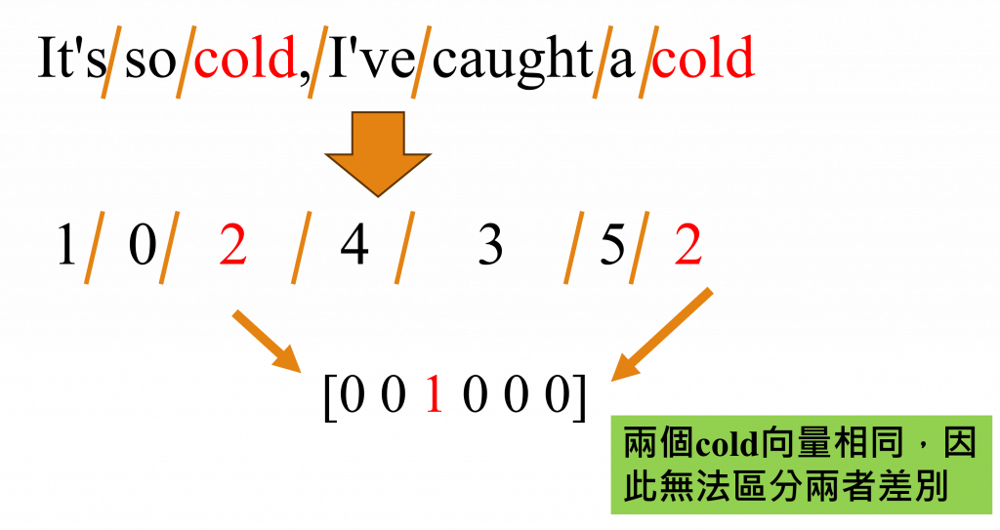
並且One-Hot Encoding的方法存在一些嚴重問題，我們以圖中的「It's so cold, I've caught a cold」這句為例，在這個句子裡，我們可以看出前一個「cold」的意思是代表「寒冷」，而後一個「cold」則代表「感冒」。
但在One-Hot Encoding的轉換中，每個詞彙都會被賦予一個獨一無二的向量，這就導致了文字之間並沒有關聯性與無法表達出一詞多意的概念等問題，於是出現了改良這中方式的技術，該技術的名稱就是詞嵌入(Word Embedding)
詞嵌入(Word Embedding)
詞嵌入是將文本中的詞彙轉變成連續向量的技術，這種技術將詞彙映射到高維度的向量空間中，使具有相似意義的詞彙能在同一個空間聚集。
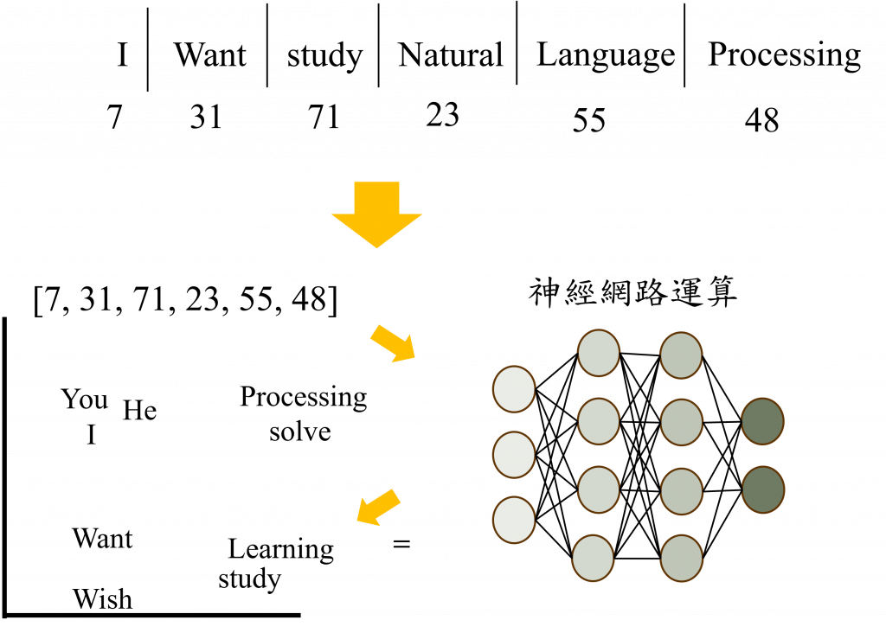
這點可能用說得過於抽象，所以我將以程式語言的方式，逐步介紹詞嵌入層在進行什麼樣的運作，首先我們需要先導入並安裝必須的函式庫。
【STEP 1】安裝&與使用函式庫
首先我們將初步安裝Pytorch與matplotlib，來幫助我們將詞彙映射至詞嵌入層(Embedding Layer)與可視化(Visualization)詞嵌入的動作，我們可以透過pip指令來安裝這兩個函式庫。
pip install torch
pip install matplotlib
當完成安裝後，我們可以透過import和from這兩種方式使用該函式庫的功能，而在以下的程式中我還會使用昨天在【Day 2】電腦該怎麼理解人類的語言 (上) - 文字怎麼輸入到模型中中創建的類別來做為我們的標註器。
import torch
import torch.nn as nn
import matplotlib.pyplot as plt
from tokenizer import Tokenizer # 昨日建立的類別
在我的GitHub上方已建立了
tokenizer.py這一檔案，你可以直接下載該檔案或到昨天的內容中取得該程式碼。
【STEP 2】建立正面與負面詞彙表
在建立完程式環境後，我們還需建立一些詞彙，並從類別中取得token2num與num2token兩個用於詞彙轉換建的字典，以便後續能在可視化詞嵌入中的計算結果。
negative_words = ["disappointed", "sad", "frustrated", "painful", "worried", "angry"]
positive_words = ["happy", "successful", "joyful", "lucky", "love", "hopeful"]
# 建立初始值
all_words = negative_words + positive_words
tokenizer = Tokenizer(all_words, special_token = ['[UNK]','[PAD]'], max_len = 1)
token2num, num2token = tokenizer.token2num, tokenizer.num2token
【STEP 3】將詞彙映射到詞嵌入層中
首先我們需要先取得num2token的字典，並將其轉換成張量(Tensor)。這樣做的原因是GPU和TPU等硬體加速器上進行張量計算效率極高，這對於深度學習中大規模的數值運算十分重要，並且神經網絡通常有著大量的參數和數據需要處理，這種方式還能夠追蹤每一個神經元的梯度變化，以達到優化模型的目的。
# 取得所有轉換後的詞彙
token_nums = torch.tensor([i for i in num2token])
# 創建一個詞嵌入層(Embedding layer)
emb = nn.Embedding(len(token_nums), 2)
# 將Token映射到詞嵌入層中
embedding_matrix = emb(token_nums).detach().numpy()
【STEP 4】可視化的建立方法
在這裡我們建立了一個函數，用於視覺化這些向量，而這個方式非常簡單，因為在建立詞嵌入的時候，我們只使用了兩個維度，所以可以直接將這兩個軸視為平面上的x和y軸，作為我們視覺化向量的方式，不過在當前我們的數據資料是數字型態，於是我們需要用到num2token字典，將已經轉換成數字的詞彙替換回來。
def visualization(embedding_matrix, num2token):
# 提取降維後的坐標
x_coords = embedding_matrix[:, 0]
y_coords = embedding_matrix[:, 1]
# 繪製詞嵌入向量的散點圖
plt.figure(figsize=(10, 8))
plt.scatter(x_coords, y_coords)
# 標註散點
for i in range(len(embedding_matrix)):
plt.annotate(num2token[i], (x_coords[i], y_coords[i]))
plt.xlabel('Dimension 1')
plt.ylabel('Dimension 2')
plt.title('Visualization of Embedding Vectors')
plt.show()
visualization(embedding_matrix, num2token)
從下圖中我們可以發現，在詞嵌入被建立的過程中，每一個文字初始都是隨機定位的，然而在深度學習模型的幫助下，我們可以通過調整這些文字在空間上的位置來找到最合適的向量，使電腦能理解與這些詞彙之間的相關性與涵義。
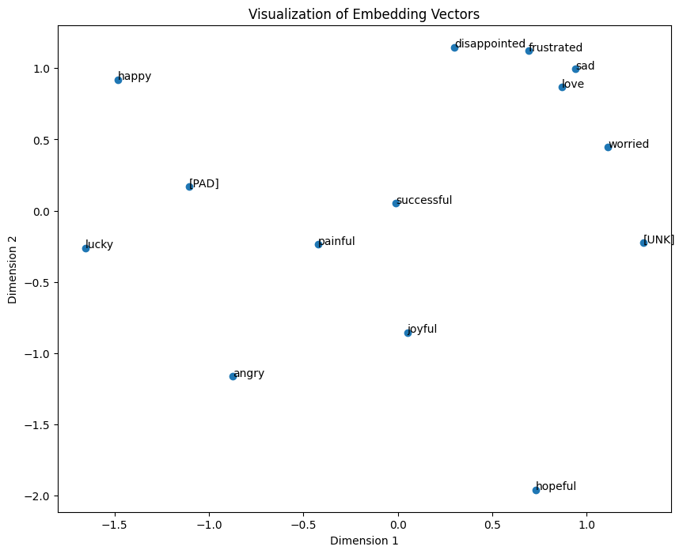
若詞嵌入的向量設定超過2時我們還需要使用到許多降維(Dimension Reduction)的技術， 例如:主成分分析(Principal Component Analysis, PCA)，t-隨機鄰近嵌入法(t-distributed Stochastic Neighbor Embedding, t-SNE)等，才能夠將這些維度顯示出來。
【STEP 5】讀取已訓練好的模型權重
因為並未在前文中提及模型訓練的概念，不過為了方便理解被訓練過後的詞嵌入向量究竟會長什麼樣子，所以我已經利用訓練模型的方式來調整這些詞嵌入的權重，該權重已公開於我的GitHub中，我們需要做的就是下載這些權重並放至指定的檔案路徑以方便我們進行讀取的動作。
emb = nn.Embedding(len(token_nums), 2)
emb.weight = nn.Parameter(torch.load('embedding_weights.pth')) # 讀取權重
embedding_vector = emb(token_nums).detach().numpy() # 建立向量
visualization(embedding_vector, num2token) # 視覺化
現在我們可以明確地看到正向詞彙如"happy"、"successful"、"joyful"和負向詞彙如"disappointed"、"sad"、"frustrated"被清楚地區分出來，這就是一個很好的詞嵌入層，通過這一層我們可以進行後續的運算，例如將這些向量透過某種時間序列模型(Time Series Model)來計算文字之間的語句上下文關係，而這種方法也能在後續運算中考量到向量中相近的詞彙特性，使模型能更全面的考量詞與詞之間的關係。

以上就是電腦理解文字的方式，在後續的內容中我將透過不同的模型來訓練詞嵌入層，以加深我們對詞嵌入層的理解。
完整程式碼
import torch
import torch.nn as nn
import matplotlib.pyplot as plt
from tokenizer import Tokenizer # 昨日建立的函式庫
negative_words = ["disappointed", "sad", "frustrated", "painful", "worried", "angry"]
positive_words = ["happy", "successful", "joyful", "lucky", "love", "hopeful"]
# 建立初始值
all_words = negative_words + positive_words
tokenizer = Tokenizer(all_words, special_token = ['[UNK]','[PAD]'], max_len = 1)
token2num, num2token = tokenizer.token2num, tokenizer.num2token
def visualization(embedding_matrix, num2token):
# 提取降維後的坐標
x_coords = embedding_matrix[:, 0]
y_coords = embedding_matrix[:, 1]
# 繪製詞嵌入向量的散點圖
plt.figure(figsize=(10, 8))
plt.scatter(x_coords, y_coords)
# 標註散點
for i in range(len(embedding_matrix)):
plt.annotate(num2token[i], (x_coords[i], y_coords[i]))
plt.xlabel('Dimension 1')
plt.ylabel('Dimension 2')
plt.title('Visualization of Embedding Vectors')
plt.show()
# 取得所有轉換後的詞彙
token_nums = [i for i in num2token]
# 轉換成Tensor
token_nums = torch.tensor(token_nums)
# 創建一個詞嵌入層(Embedding layer)
emb = nn.Embedding(len(token_nums), 2)
# 將Token映射到詞嵌入層中
embedding_matrix = emb(token_nums).detach().numpy()
# 顯示該向量
visualization(embedding_matrix, num2token)
emb = nn.Embedding(len(token_nums), 2)
emb.weight = nn.Parameter(torch.load('embedding_weights.pth'))
embedding_vector = emb(token_nums).detach().numpy()
visualization(embedding_vector, num2token)
後話
看到這裡我相信你對於電腦如何理解文字已經有了一定程度的了解，但你可能仍然對某些內容不太熟悉，因此我打算先讓你放鬆一夏，所以我在明天只教你如何安裝Pytorch的GPU版本以及一個在自然語言處理中非常重要的函式庫TorchText，你可以在這段時間中好好的統整這兩天的知識，以便更好理解後續章節的內容。
那麼我們明天再見！
內容中的程式碼都能從我的GitHub上取得:
https://github.com/AUSTIN2526/iThome2023-learn-NLP-in-30-days
Day 04｜【Day 4】Pytorch & TorchText的正確開啟方式
- 原文：https://ithelp.ithome.com.tw/articles/10322104
- 發佈時間：2023-09-19 23:18:27
今日學習重點
TorchText是PyTorch生態系統中的一個函式庫，它的主要目的是為了簡化文字資料的處理與NLP模型建構的過程，不過該函式庫基於PyTorch運行，因此在安裝TorchText時，可能會遇到兩者版本不同的相容性問題，今天我將教你如何正確地安裝PyTorch及TorchText，以避免這種問題的發生，今日的主要學習內容將包含以下三點:
- 檢查電腦GPU的CUDA版本
- 安裝GPU版本的Pytorch
- 查詢TorchText與Pytorch的對應版本
該怎麼安裝Pytorch GPU與TorchText呢?
我相信許多已熟悉Python的人都知道，我們可以使用pip指令來安裝函式，但如果你用pip的方式去安裝Pytorch，你只會安裝到CPU版本而非GPU版本。
雖然網路上有許多教學文章介紹如何安裝Pytorch的GPU版本，但你可能會發現大多數的文章中的做法在某些電腦上可能會遇到無法順利執行的問題。
而會發生這樣的原因是因為這些文章並未清楚告知安裝的前提條件和必備知識，所以在今天的內容中，我將詳盡地指導你如何成功於各種環境中安裝Pytorch的GPU版本與TorchText。
【STEP 1】檢查電腦GPU中的CUDA版本
首先我們需要確認自己的GPU中的CUDA版本，我們可以在CMD(命令提示字元)輸入下列指令，以獲取電腦中有關GPU的相關訊息。
nvidia-smi
當我們完成輸入後，可以在結果的右上方中發現CUDA Version XX.X的字眼，而這就是我們的GPU能支援的最高版本。

小提示:
截至目前為止Pytorch的CUDA最新版本是11.8，而絕大多數的中高階GPU皆能支援此一最新版的Pytorch，如果你的CUDA版本低於11.8，可以試試看更新顯卡驅動程式。
【STEP 2-1】安裝最新Pytorch GPU(CUDA版本足夠)
接下來我們需要前往Pytorch的官方網站尋找安裝指令，如果你的顯示卡高於目前支援的最新版本，可以直接在該網頁找到的安裝指令。

我們可以在Run this Command:後面找到我們所需要的安裝指令。
pip3 install torch torchvision torchaudio --index-url https://download.pytorch.org/whl/cu117
【STEP 2-2】安裝最新Pytorch GPU(CUDA版本不足)
不過對於CUDA版本過低的的人來說，該如何安裝Pytorch GPU版本呢?這時我們就需要尋找該頁面上方的install previous versions of PyTorch來轉跳到另一個頁面。

假設我們的顯示卡僅支援到CUDA 10.2版本，我們可以在該頁面下按下鍵盤中的CTRL+F，然後輸入CUDA 10.2後按下Enter，此時我們就能夠看到下圖中的畫面，該畫面是在Pytorch中對於較低版本CUDA的安裝指令。
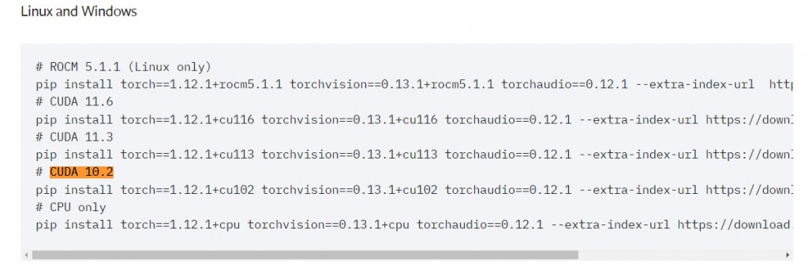
這時我們只需要找到比自己CUDA版本還要低或是相同的版本就能完成GPU版的安裝，而在CUDA 10.2版本的狀況下只需輸入以下指令，同樣的能安裝最新版本的Pytorch。
pip install torch==1.12.1+cu102 torchvision==0.13.1+cu102 torchaudio==0.12.1 --extra-index-url https://download.pytorch.org/whl/cu102
【STEP 3】檢查Pytorch GPU環境
當安裝完畢後，我們可以測試看看GPU的環境，這時我們可以先在 CMD 中輸入 python 來進入 Python 環境中，接下來輸入：
import torch
torch.cuda.is_available()

這個時候我們只需要觀察程式執行的結果是否為True，如果是True那就表示GPU環境已經準備好了。
【STEP 4】查看PyTorch與TorchText依賴源
在前幾步中我們花大量時間來安裝Pytorch的GPU版本，而在安裝TorchText時有很大的機率會遇到一個大坑，如果我們直接輸入pip install torchtext指令，你就會發現PyTorch被替換成CPU版本。
所以我們需要針對該函式庫的安裝還需要做特別的處理，因此我們需要到TorchText的GitHub頁面，找到README.rst說明文件，並到下圖中的相關區塊。
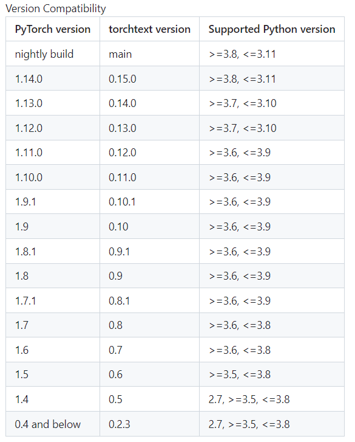
在該區塊中我們可以看到Pytorch與TorchText之間的相容性，在這邊我會先透過pip list來查找Pytorch的函式庫的版本，當我們輸入該指令後你可以看到與下列相似的結果：
tokenizers 0.13.3
tomli 2.0.1
torch 1.13.1+cu117
torchaudio 0.13.1+cu117
其中我們需要注意torch 1.13.1+cu117這一行，該行表示我們的Torch版本是1.13.1，所以我們可以通過這個版本號對應文件來找到TorchText版本，從以上結果得知我們需要安裝0.14.0版本的TorchText，這時我們可以輸入：
pip install torchtext==0.14.0
這樣子我們就能在維持PyTorch的GPU環境下，順利使用TorchText這個自然語言處理的函式庫了。
小提示:
當函式庫裝完畢後你可以在檢查看看GPU環境以免有未知的意外發生。
後話
到現在你應該已經理解了電腦是怎麼理解我們人類的語言以及建立在後續內容中所需要的環境了，而在明天我會使用深度神經網路來傳達深度學習的概念，在這過程中可能會有一些數學公式，如果你有不明白的地方可以私訊我或是在下方留言我都會很樂意幫你解答的。
那麼我們明天再見！
內容中的程式碼都能從我的GitHub上取得:
https://github.com/AUSTIN2526/iThome2023-learn-NLP-in-30-days
Day 05｜【Day 5】深度神經網路該怎麼改變Embedding向量(上)-揭密神經網路訓練的過程
- 原文：https://ithelp.ithome.com.tw/articles/10323386
- 發佈時間：2023-09-20 19:32:24
今日學習重點
訓練深度學習模型實質上就是計算答案與優化答案的過程，在此過程中常常涉及許多複雜的計算，而在今天我們將探討深度學習能自動抽取特徵的原因以及講講整個模型訓練的過程，今日的學習重點如下:
- 學習
深度神經網路(Deep Neural Networks, DNN)的原理 - 理解
前向傳播(Forward Propagation)與反向傳播(Backward Propagation)的目的 - 認識
優化器(Optimizer)、學習率(Learning rate)、損失值(Loss)之間的關係。
深度神經網路(Deep Neural Networks, DNN)
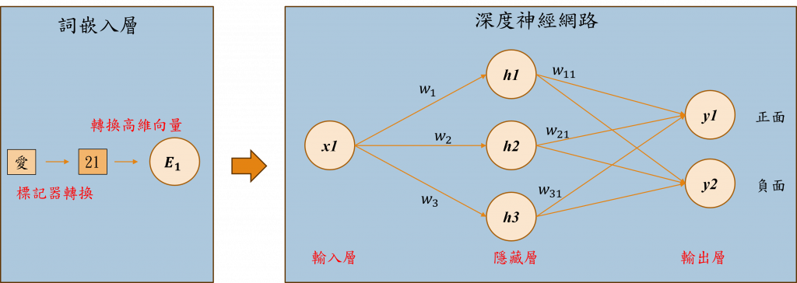
深度神經網路（Deep Neural Networks，DNN）是一種多層感知器（Multilayer Perceptron，MLP），由多層神經元（Neuron）組成。其目的是跨越不斷調整神經元之間的權重（Weight）來模仿人類大腦的功能。這種結構能夠自動學習複雜的輸入特徵和模式，以進行對未知資料的分類或預測。在上圖中的範例是通過創建1維的詞嵌入向量來進行深度神經網路的運算，使其能夠分類出該單字是正面評價還是負面評價的。
小提示:
通常詞嵌入層的維度都會是高維向量(BERT是768維)，在這裡使用1維的目的是為了方便後續的公式理解。
深度神經網路主要由三個部分組成，分別是輸入層(input layer)、隱藏層(hidden layer)以及輸出層(output layer)。其中隱藏層越多層能處理的輸入資料也就越複雜。但要注意的是，如果處理的資料相對簡單，那麼使用較少的隱藏層，模型的效果會更好。接下來讓我們深入了解這三個部分的各自角色。
輸入層(input layer)
深度神經網路的第一層被稱作輸入層，該層的主要目的是獲取外部數值資料，如在進行文字分類時，我們會將詞嵌入層的資料傳送至此。在這層中並無特殊的計算公式，僅負責將資料傳送至下一層。
隱藏層(hidden layer)
隱藏層是深度神經網路的關鍵部分，該層接收特徵x1、x2、x3...xn的輸入，並透過和各隱藏層中的權重w1、w2、w3...wn進行運算，來計算出每個隱藏層神經元的結果。以上圖為例各神經元的計算結果h1 = x1w1、h2 = x1w2、h3 = x1w3。當有了h1、h2、h3的值之後，我們就可以根據這些數據來算出模型的整體輸出結果。
輸出層(output layer)
當隱藏層將資料傳遞給輸出層後，該層會透過h1、h2、h3來計算出模型的結果，也就是y1 = h1w11 + h2w21+ h3w31的結果，這個結果便是模型預測的機率。這樣解釋可能不夠清楚，假設正面評價的標籤是y1，那麼y1的輸出結果應該更接近1；若反面評價的標籤是y2，那麼y2的輸出結果就應該更接近於0。如此一來我們就能夠根據最終的輸出y1、y2的結果來判斷最有可能的情況。
在以上的步驟中也就是深度學習的前向傳播(Forward Propagation)過程，所以我們也可以說前向傳播是模型計算結果的過程。
模型該怎麼修正輸出結果
在任何神經網路裡，兩個步驟都是不可或缺的，它們分別是前向傳播與反向傳播(Backward Propagation)，而我們已經掌握了前向傳播的概念，接下來需要解析的則是反向傳播的過程，此部分將會被分成以下幾步：
【STEP 1 對最後一層輸出進行Softmax】
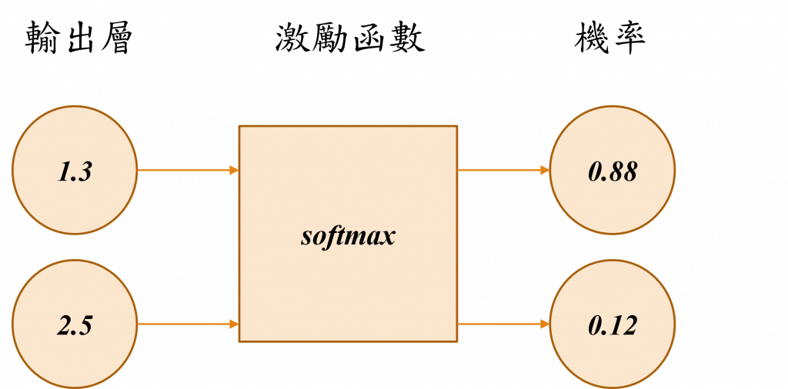
首先我們需要透過損失函數(Loss Function)來計算出模型在這次運算中的損失值，如同我們在前面的小節所提到的，輸出層的結果是模型的機率輸出，這需要透過名為Softmax的激勵函數(Activation Function)進行轉換，該函數能將輸出層的數字轉換為機率值，這個步驟的目的就是為了更精確地計算模型的損失值。
小提示
激勵函數是一種在模型不同層中所使用的數學函數，該函數的目的是為了將計算出來的線性結果轉換成非線性，這樣做的原因是因為現實中的數據通常是以非線性呈現的，因此我們加入激勵函數能夠使計算結果更符合現實。
【STEP 2 計算模型的損失】
接著我們就能夠通過該方式計算模型的損失，最簡單的計算模型方式，就是計算標籤(Lable)與預測機率的誤差。
這時我們能先將標籤進行One-Hot Encoding轉換的動作，讓正面評價的標籤為[1, 0]，並假設預測輸出是[0.88, 0.12]，那麼在計算模型的損失時，我們可以直接算出|1 - 0.88| + |0 - 0.12| = 0.24的損失結果。
小提示:
在前幾天，我們提到One-Hot Encoding在自然語言處理上的問題，這是針對詞彙轉換成向量時可能會遇到的問題，而這次我們選擇使用詞嵌入來進行詞彙轉換，而One-Hot Encoding則用於標籤的轉換過程。
【STEP 3 計算輸出層梯度】
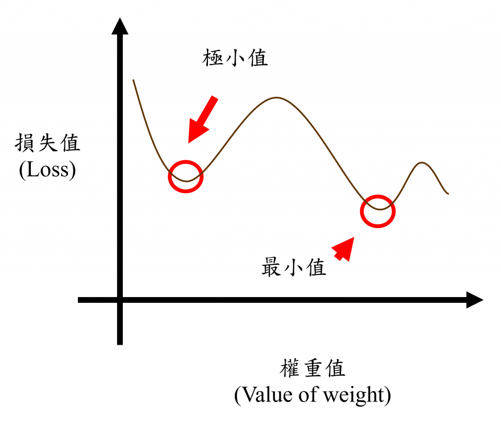
我們現在來到最困難的部分，那就是計算神經元梯度的過程，而我們計算梯度的目的就是為了找到各神經元的變化方向，以幫助我們找到最小值或極小值，而計算的第一步進行我們需要找到損失函數 L 對輸出層的輸出的梯度。
假設輸出層有n個神經元，我們計算每個神經元的梯度為:

其中ai(L)是輸出層的第i個神經元的輸出。
【STEP 4 計算隱藏層梯度】
接下來，我們需將梯度向後傳播至隱藏層，以計算出每一層的梯度，在這步驟我們可以透過輸出層梯度進行連鎖率運算，我們便可以得出第L層中第i個神經元的梯度。

這樣就會一直將梯度傳播到上一層的神經元，重複這個過程，直到計算出輸入層的梯度為止。
【STEP 5 計算各權重梯度】
最後我們可以計算每個權重的梯度，對於連接第L-1層第j個神經元與第L層第i個神經元的權重，我們可以透過以下公式來進行計算。
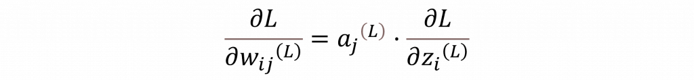
【STEP 6 更新權重】
當我們計算出各權重的梯度後，我們就能得知該曲線的變化程度，這時我們可以選擇使用梯度下降法(Gradient Descent)或其他優化器(Optimizer)來更新權重，以降低損失函數的數值。對於梯度下降法的更新規則，如下所示：

其中 𝜂 代表的是學習率，這是用來調整移動速率的值，若該值設定過大，會導致無法收斂的狀況。因此在大多數的優化器中，該值通常只設定為1e-3。
不過你可能聽到這裡會有些不太了解的地方，所以我在這裡簡單把整個訓練過程說明一遍：首先我們會通過模型計算結果(前向傳播)，接下來透過損失函數計算目標與預測結果的誤差，然後反向傳播計算各神經元的梯度，最後透過優化器調整權重。
按照這個過程來，模型將能夠不斷地通過調整權重的方式降低模型的損失值，以期算出最佳的目標，這就是我們所說的訓練模型實際上正在進行的動作，而在不同後神經網路中，不外乎都是通過這種方式進行訓練的。
後話
今天我們已經坦討並說明了在深度學習中會使用的一些數學公式，同時解釋了深度神經網路的模型架構，而在明天的內容中我將利用Pytorch程式碼來向你示範該如何使用深度神經網路訓練出我們在第三天所使用的詞嵌入層權重。
那麼我們明天再見！
內容中的程式碼都能從我的GitHub上取得:
https://github.com/AUSTIN2526/iThome2023-learn-NLP-in-30-days
Day 06｜【Day 6】深度神經網路該怎麼改變Embedding向量(下)-PyTorch訓練的策略和方法
- 原文：https://ithelp.ithome.com.tw/articles/10323930
今日學習重點
前幾日我們已經把自然語言處理的基礎知識都學習完畢了，所以在今日最主要的目的就是將這些理論都轉換成程式碼，而我會在撰寫這些程式碼的同時告訴你，該部分對應的理論內容，今日的學習重點如下:
- 建立訓練資料集和選擇適當的
資料型態(Data type) - 訓練模型程式碼與
批次量(Batch Size)對效能的影響 - 可視化詞嵌入層與儲存嵌入層權重
在深度學習的程式中，五個核心步驟包括讀取資料、資料前處理與資料正規化、定義模型/優化器/損失函數、前向傳播、以及反向傳播這幾個動作，而我為了解釋這些動作的涵義，我將逐一拆分這些步驟，來簡單解說程式碼中的內容。
【STEP 1】讀取/創建資料
首先我們要載入今天會使用到的所有函式庫，這些函式庫大部分都在【Day 3】電腦該怎麼理解人類的語言 (下) - 模型理解文字的方式中使用過，只有import torch.optim as optim是新引入的函式庫，這個函式庫內包含許多實用的優化器，所以我們需要用到它來幫助我們優化模型的損失。
import torch
import torch.nn as nn
import torch.optim as optim
import matplotlib.pyplot as plt
from tokenizer import Tokenizer # 昨日建立的函式庫
接下來我們會先建立正面與負面的詞彙資料，接著將它們合併，以便使用Tokenizer()建立詞彙表。
negative_words = ["disappointed", "sad", "frustrated", "painful", "worried", "angry"]
positive_words = ["happy", "successful", "joyful", "lucky", "love", "hopeful"]
# 建立初始值
all_words = negative_words + positive_words
tokenizer = Tokenizer(all_words, special_token = ['[UNK]','[PAD]'], max_len = 1)
token2num, num2token = tokenizer.token2num, tokenizer.num2token
在我們建立完成之後，就能透過tokenizer變數來進行詞彙轉換，同時也能從中呼叫出能映射詞彙與數字的兩個字典token2num和num2token。
【STEP 2】資料前處理與資料正規化
當我們獲取資料後就可以進行資料前處理和資料的正規化了，在這裡我們僅進行簡單的資料正規化操作，即將文字轉換為數字，並定義One-Hot Encoding標籤。
input_data = torch.tensor([token2num[i] for i in negative_words + positive_words])
labels = len(negative_words) * [[1., 0.]] + len(positive_words) * [[0., 1.]]
labels = torch.tensor(labels)
print('第0筆訓練資料:', input_data[0])
print('第0筆訓練標籤:', labels[0])
#---------------------輸出---------------------
第0筆訓練資料: tensor(3)
第0筆訓練標籤: tensor([1., 0.])
在上述程式中，我們先將負面和正面的詞彙數值化，然後轉化為張量格式，以配合模型的輸入和計算需求。接著，我們開始定義標籤。在標籤的定義部分，我們直接使用One-Hot Encoding的方式，將負面定義為[1,0]，正面定義為[0,1]
但我們需要注意這個標籤的型態必須定義為float，因為我們的模型輸出的機率是小數點(float)而非整數(int)，如果我們之後沒有加上「.」，模型在計算時就會發生錯誤。
【STEP 3】定義模型/優化器/損失函數
在Pytorch中建構模型需要兩個步驟，首先我們需要建立模型的結構，再來定義模型的前向傳播方式，在這過程中繼承nn.Module類別是關鍵一步，因為這個類別包含了許多模型常用的操作，如模型儲存、獲取參數、及凍結參數等功能。因此我們在初始化模型時，可以使用以下的寫法:
class EmbDNN(nn.Module):
def __init__(self, vocab_size, embedding_dim, output_size, padding_idx):
super().__init__()
self.embedding = nn.Embedding(
num_embeddings = vocab_size,
embedding_dim = embedding_dim,
padding_idx = padding_idx
)
self.fc = nn.Linear(embedding_dim, output_size)
在上述的程式中，我們先使用super()繼承nn.Module所定義的一些方法，接著我們就能夠定義模型的層，在今日的內容中，我們需要定義一層詞嵌入層和一層深度神經網路層，而在詞嵌入層中，我們需要知道以下幾個重要的參數:
| 參數名稱 | 說明 |
|---|---|
| num_embeddings | 詞彙表的總數量 |
| embedding_dim | 詞嵌入層的維度 |
| padding_idx | 填充字元的索引值 |
根據上表我們仍需要從外部輸入一些資訊進入模型中，為了能夠直接將詞嵌入層可視化，我們在這裡將其設定為2，同時我們也必須將詞彙表的總數量與填充字元的索引值一同輸入模型，因此我們可以用以下的程式取得必要的資料。 |
vocab_size = len(token_nums) # 詞彙表大小
embedding_dim = 2 # 詞嵌入層维度
output_size = 2 # 輸出大小（分類數量）
padding_idx = token2num['[PAD]'] # 取得PAD索引
model = EmbDNN(vocab_size, embedding_dim, output_size, padding_idx)
我們之前已經提到，除了定義模型結構外，我們還需要定義前向傳播的方式，因此我們將在這個類別中建立一個forward()方法，使模型能夠推理出答案。
class EmbDNN(nn.Module):
def __init__(self,...)
# 定義模型區塊
.
.
.
# 定義模型區塊
#定義前向傳播方式
def forward(self, x):
embedded = self.embedding(x)
out = self.fc(embedded)
return out
今天我不打算詳細討論我們所用的損失函數criterion和優化器optimizer這些實際的運算原理，我會在接下來的章節中向你們詳細解說。因為這部份的理論非常複雜，因此我認為有必要把它視為一個獨立的主題進行探討。
criterion = nn.CrossEntropyLoss()
optimizer = optim.Adam(model.parameters(), lr=0.001)
【STEP 4】顯示訓練過程
在訓練過程中，我們通常會參考Loss曲線來找出可能出現的問題，所以我們需要繪製一張訓練過程的折線圖作為參考。這時我們可以利用matplotlib這個工具來幫助我們繪製折線圖，而我們只需要撰寫一個函數，讓這個函數會接收每次訓練時的Loss值就可以了。
def show_training_loss(train_loss):
plt.plot(train_loss)
#標題
plt.title('Result')
#y軸標籤
plt.ylabel('Loss')
#x軸標籤
plt.xlabel('Epoch')
#顯示折線的名稱
plt.legend(['train'], loc='upper left')
#顯示折線圖
plt.show()
【STEP 5】訓練模型
在模型訓練時，最基本的單位稱為Epoch，我們稱一次完整的訓練過程為一個Epoch，通常在這個完整的Epoch中，會將資料拆分為多個批量(Batch Size)來進行訓練，這樣做的原因是因為電腦的記憶體空間有限，無法一次將大量資料輸入模型。
然而在今天的內容中，我們只有14筆輸入資料，因此並不需要將資料集拆分成批次，可以直接進行訓練。
loss_record = []
epochs = 30000
for epoch in range(epochs):
# 梯度初始化
optimizer.zero_grad()
# 前向傳播計算答案
outputs = model(input_data)
# Loss計算損失
loss = criterion(outputs, labels)
loss_record.append(loss) # 紀錄該次Epoch的損失值
# 反向傳播計算梯度
loss.backward()
# 優化器更新權重
optimizer.step()
# 每訓練1000次顯示Loss值
if (epoch + 1) % 100 == 0:
print(f'Epoch [{epoch+1}/{epochs}], Loss: {loss.item()}')
在以上的程式中，我們可以看到除了前向傳播、反向傳播、更新權重之外，還多了一個梯度初始化的步驟，這一步驟的必要性是因為程式的設計方式。
當我們將資料轉換成張量後，程式會自動追蹤神經元的權重梯度，讓我們能快速進行反向傳播操作，但在執行過程中，我們無法預知每一個Epoch將包含多少批量的運算，若我們沒有進行梯度初始化，程式會把每個批量的計算結果累加到下一次的運算中，導致運算錯誤，所以我們必須要在每一次運算前進行梯度初始化的動作。
show_training_loss(loss_record)
當模型訓練完畢後，我們可以將loss_record這個儲存模型訓練Loss值的變數，提供給STEP 4所完成的函數，這樣就能夠從該曲線中即可觀察到模型訓練的過程。
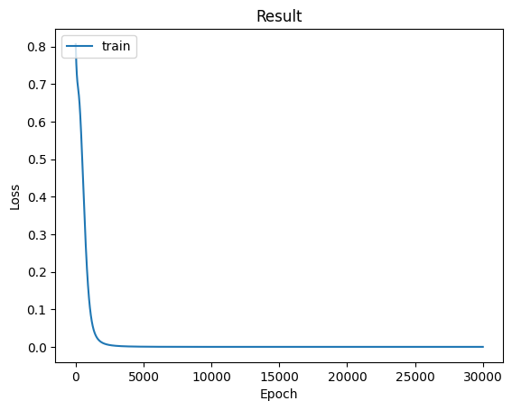
我們可以看到模型的收斂狀態顯示得非常良好，這是因為我們的任務較簡單，所以可以輕鬆的收斂。
【STEP 6】儲存詞嵌入權重與可視化
在Pytorch中，我們可以藉由呼叫模型的 __init__ 方法中的參數，來獲取該神經元層的資料，在這裡我們只需要得到模型中的詞嵌入權重，所以我們可以使用下列的程式碼來進行這個動作。
embedding_layer = model.embedding
embedding_weights = embedding_layer.weight.data
torch.save(embedding_weights, 'embedding_weights.pth')
此時我們就能夠通過【Day 3】電腦該怎麼理解人類的語言 (下) - 模型理解文字的方式的方式將最終結果可視化。
def visualization(embedding_matrix, num2token):
# 提取降維後的坐標
x_coords = embedding_matrix[:, 0]
y_coords = embedding_matrix[:, 1]
# 繪製詞嵌入向量的散點圖
plt.figure(figsize=(10, 8))
plt.scatter(x_coords, y_coords)
# 標註散點
for i in range(len(embedding_matrix)):
plt.annotate(num2token[i], (x_coords[i], y_coords[i]))
plt.xlabel('Dimension 1')
plt.ylabel('Dimension 2')
plt.title('Visualization of Embedding Vectors')
plt.show()
token_nums = [i for i in num2token]
token_nums = torch.tensor(token_nums)
emb = nn.Embedding(len(token_nums), 2)
loaded_embedding_weights = torch.load('embedding_weights.pth')
emb.weight = nn.Parameter(loaded_embedding_weights)
embedding_vector = emb(token_nums).detach().numpy()
visualization(embedding_vector, num2token)
上述程式碼執行完畢後，我們將能夠獲得如下圖中所示的結果。
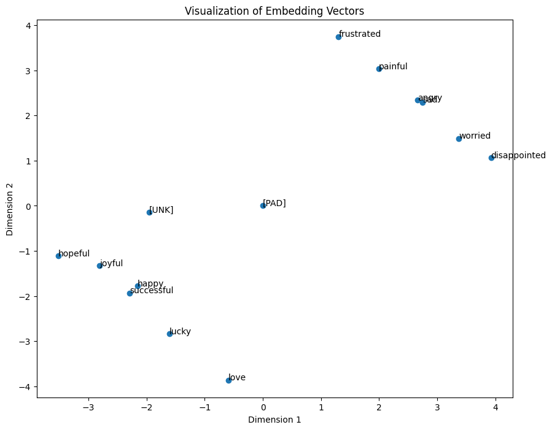
完整程式碼
import torch
import torch.nn as nn
import torch.optim as optim
import matplotlib.pyplot as plt
from tokenizer import Tokenizer # 昨日建立的函式庫
negative_words = ["disappointed", "sad", "frustrated", "painful", "worried", "angry"]
positive_words = ["happy", "successful", "joyful", "lucky", "love", "hopeful"]
# 建立初始值
all_words = negative_words + positive_words
tokenizer = Tokenizer(all_words, special_token = ['[UNK]','[PAD]'], max_len = 1)
token2num, num2token = tokenizer.token2num, tokenizer.num2token
input_data = torch.tensor([token2num[i] for i in negative_words + positive_words])
labels = len(negative_words) * [[1., 0.]] + len(positive_words) * [[0., 1.]]
labels = torch.tensor(labels)
print('第0筆訓練資料:', input_data[0])
print('第0筆訓練標籤:', labels[0])
class EmbDNN(nn.Module):
def __init__(self, vocab_size, embedding_dim, output_size, padding_idx):
super().__init__()
self.embedding = nn.Embedding(
num_embeddings = vocab_size,
embedding_dim = embedding_dim,
padding_idx = padding_idx
)
self.fc = nn.Linear(embedding_dim, output_size)
def forward(self, x):
embedded = self.embedding(x)
out = self.fc(embedded)
return out
vocab_size = len(token2num) # 詞彙表大小
embedding_dim = 2 # 詞嵌入層维度
output_size = 2 # 輸出大小（分類數量）
padding_idx = token2num['[PAD]'] # 取得PAD索引
model = EmbDNN(vocab_size, embedding_dim, output_size, padding_idx)
# 定義損失函數與優化器
criterion = nn.CrossEntropyLoss()
optimizer = optim.Adam(model.parameters(), lr=1e-3)
loss_record = []
epochs = 30000
for epoch in range(epochs):
# 梯度初始化
optimizer.zero_grad()
# 前向傳播計算答案
outputs = model(input_data)
# Loss計算損失
loss = criterion(outputs, labels)
loss_record.append(loss) # 紀錄該次Epoch的損失值
# 反向傳播計算梯度
loss.backward()
# 優化器更新權重
optimizer.step()
# 每訓練1000次顯示Loss值
if (epoch + 1) % 100 == 0:
print(f'Epoch [{epoch+1}/{epochs}], Loss: {loss.item()}')
def show_training_loss(train_loss):
plt.plot(train_loss)
#標題
plt.title('Result')
#y軸標籤
plt.ylabel('Loss')
#x軸標籤
plt.xlabel('Epoch')
#顯示折線的名稱
plt.legend(['train'], loc='upper left')
#顯示折線圖
plt.show()
show_training_loss(loss_record)
embedding_layer = model.embedding
embedding_weights = embedding_layer.weight.data
torch.save(embedding_weights, 'embedding_weights.pth')
def visualization(embedding_matrix, num2token):
# 提取降維後的坐標
x_coords = embedding_matrix[:, 0]
y_coords = embedding_matrix[:, 1]
# 繪製詞嵌入向量的散點圖
plt.figure(figsize=(10, 8))
plt.scatter(x_coords, y_coords)
# 標註散點
for i in range(len(embedding_matrix)):
plt.annotate(num2token[i], (x_coords[i], y_coords[i]))
plt.xlabel('Dimension 1')
plt.ylabel('Dimension 2')
plt.title('Visualization of Embedding Vectors')
plt.show()
token_nums = [i for i in num2token]
token_nums = torch.tensor(token_nums)
emb = nn.Embedding(len(token_nums), 2)
loaded_embedding_weights = torch.load('embedding_weights.pth')
emb.weight = nn.Parameter(loaded_embedding_weights)
embedding_vector = emb(token_nums).detach().numpy()
visualization(embedding_vector, num2token)
後話
今天我們初步探討了Pytorch中的訓練方式和模型堆疊方法，不過這次我們僅用了一些簡單的資料作為測試，結果使得程式碼顯得相對簡單，所以在接下來的幾天，我將開始使用網路上的經典資料集，並會向你展示如何編寫一個完整的Pytorch訓練程式。
那麼我們明天再見！
內容中的程式碼都能從我的GitHub上取得:
https://github.com/AUSTIN2526/iThome2023-learn-NLP-in-30-days
Day 07｜【Day 7】文字也是一種有時間序列的資料(上)-時間序列模型大揭密
- 原文：https://ithelp.ithome.com.tw/articles/10324660
前言
經過前幾日的訓練，我相信你已對自然語言處理有初步的理解，因此從今天開始，我將轉變教學方向，開始導讀現今NLP中常用的技術，而今天的主題我會介紹時間序列模型，今天我們會學習以下四個重點:
- 從數學公式理解時間序列模型的概念
- 理解
循環神經網路(Recurrent Neural Network, RNN)的優缺點 - 探討
長短期記憶(Long Short-Term Memory, LSTM)的各層功能 - 理解
門控循環單元(Gated Recurrent Unit, GRU)出現的目的
循環神經網路(Recurrent Neural Network, RNN)
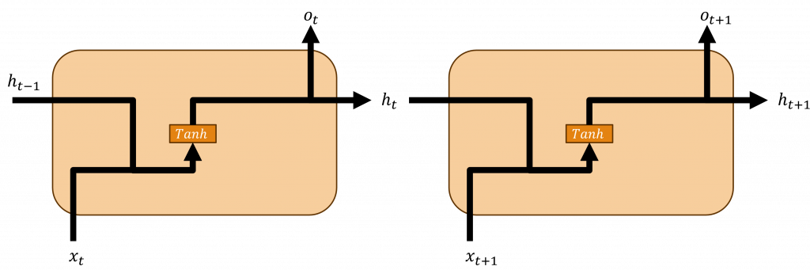
循環神經網絡（Recurrent Neural Network, RNN）的主要應用為處理序列數據，其特色在於其具備循環連接結構，可捕捉到序列數據中的時間依賴性與上下文資訊，我們可以透過比較下方兩個公式，來了解它與深度神經網路的不同點:
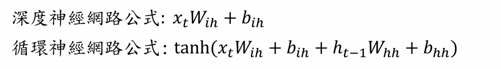
在上述兩個公式中，我們可以看到深度神經網路和循環神經網路之間的差異並不大，而循環神經網路最主要的概念就是，它能持續傳遞深度神經網路中的隱藏層結果並且與下一個序列進行運算，並且對該結果使用tanh函數，這個函數能返回一個介於-1與1的範圍，能有效地從而計算出下一隱狀態（Hidden State）的資料分布。
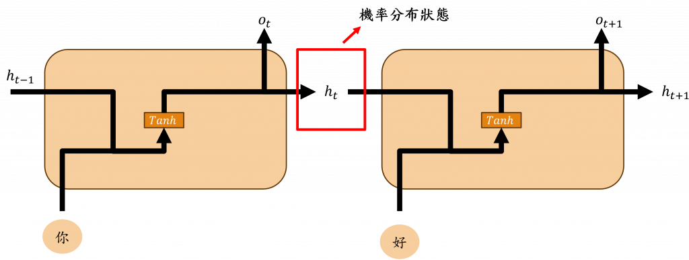
對於文字資料，我們能透過循環神經網路來計算前面文字的機率分布狀態，因此能夠考慮到文字的前後文關係，使我們在處理大量資料時，能更全面理解其文字訊息。
不過這種方式存在一個重大的問題，那就是當我們的輸入序列過長（一次輸入的文字太多）時，最初的序列資料可能會被遺忘，因為我們不斷的將資料傳送到下一層進行運算，這將導致在長時間的運算後，最初的序列資訊被稀釋掉，這種情況可能就會導致梯度消失（Gradient Vanishing）或梯度爆炸（Gradient Exploding）的問題發生。
小提示
梯度消失是指在深度神經網絡中，由於反向傳播算法計算出的梯度值變得極小接近於零，導致神經元的權重幾乎不會被更新，因此無法有效地進行訓練;梯度爆炸是指在深度神經網絡中，由於反向傳播算法計算出的梯度值變得過大，導致權重的更新變得極端，使得模型變得不穩定或無法達到收斂。
長短期記憶(Long Short-Term Memory, LSTM)

長短期記憶網絡(Long Short-Term Memory,LSTM)的設計就是為了解決循環神經網路中遭遇的梯度消失和梯度爆炸問題。它在原有的循環神經網路架構上新增了遺忘門(Forget Gate)、輸入門(Input Gate)、狀態保存層(Cell State)以及輸出門(Output Gate)，透過這些部分，使其能更有效地處理長序列數據。
其中狀態保存層的設計是為了儲存重要的資訊，並將這些資訊傳遞至整個時間序列中，這些資訊的加入和移除過程，則需要透過輸入門和遺忘門的運算來實現，所以接下來我將介紹這些層的運算過程與其原理。
遺忘門(Forget Gate)
遺忘門主要透過計算上一個時間序的隱狀態與當前的輸入來調整狀態保存層中的內容，其實現公式如下所示：

在該公式中代表著將輸入與上個時間序列的隱狀態進行計算，並利用σ(Sigmoid)轉換來獲取一個介於0和1之間的數值，這個數值用於決定哪些新的資訊需要被保留。當計算結果越接近1時，表示該數據較重要應該被保留；而當結果越接近0時則表示該訊息不夠重要可以被忽略，透過這樣的機制，使我們可以將重要的資訊保留，並將不重要的資訊剔除。
輸入門(Input Gate)
在輸入門中有兩個步驟，在兩個步驟中皆使用先前的隱狀態與當前的輸入進行計算，而在第一個步驟的計算公式與功能都與遺忘門相同，其計算公式如下:
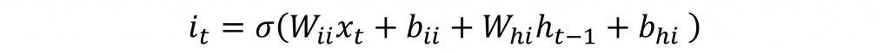
在該公式中的結果i(t)的計算與f(t)相同，只不過計算的權重是不相同的，因此它可以在計算上考慮更複雜的問題。

而在第二步驟，會先由先前的隱藏狀態和當前輸入串聯，接下來透過tanh來計算出h(t-1)與x(t)的資料分佈狀態，最後將這個分佈狀態與上述的i(t)進行計算，以確保該被遺忘的資訊不會被加入至狀態保存層中。
狀態保存層(Cell State)
一旦我們計算出遺忘門層的輸出後，我們就可以計算該神經元中狀態記憶保存層中的資料，因此我們可以用以下公式來表示該層的狀態。

該公式代表著遺忘門主要負責從狀態保存層中遺忘資訊，並將新的資訊從輸入層加入到狀態保存層中。
輸出門(Output Gate)
在所有上述結果計算完畢之後，我們就能得到模型輸出至下一層的結果，該層會利用狀態保存層和當前層的向量分布狀態來進行運算，同時該層會先運用σ來忽視一些資料，其計算公式如下：

最後只需通過狀態保存層的資料分布狀態，並與上述的o(t)進行運算，就能計算出下一層的隱狀態了。
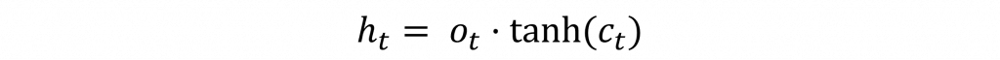
如此一來長短期記憶網絡便能夠計算出最終的答案，並通過狀態保存層傳遞重要的資料訊息，但該模型還存在一個問題，就是其計算公式過於複雜，導致運算速度極為緩慢。
門控循環單元(Gated Recurrent Unit, GRU)
門控循環單元(Gated Recurrent Unit, GRU)是一種長短期記憶的簡化版本，他簡化了一些不必要的公式，使在維持準確率的同時，增加計算的速度其架構主要由更新門（Update Gate）、重置門（Reset Gate）這兩個架構組成，並只使用單一隱狀態（Single Hidden State）傳遞資訊。
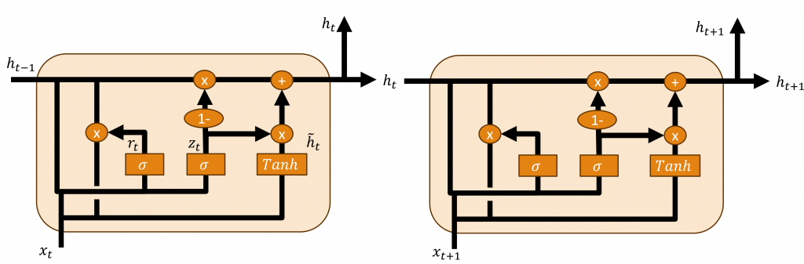
更新門（Update Gate）
在更新門中主要簡化了長短期記憶的輸出門與輸入門，因此再該層中主要會更新門控循環單元單一隱狀態與並將其輸入到下一個神經元中，而該層的計算方式就是通過先前的隱狀態與當前的輸入進行計算，其公式如下：

重置門（Reset Gate）
門控循環單元還設計了一個重置門，它的作用與長短期記憶相同，也就是透過當前的輸入與先前的隱狀態進行運算，以遺忘掉不重要的資訊，其公式也與長短期記憶相似。
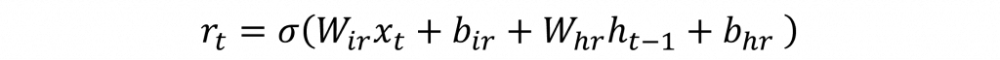
同樣的r(t)計算公式與z(t)相同主要就是權重不相同而已
單一隱狀態（Single Hidden State）
在門控循環單元中，並未採用狀態保存層，而是只使用單一隱狀態，這部分的設計，就是增加運算速度的主要原因，它通過公式的變化，簡化了遺忘、更新、輸出動作的過程。
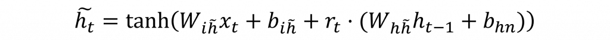
首先我們將先前計算出來的重製門結果r(t)與先前的隱狀態進行運算已計算出何種資料該被丟棄，接下來直接當前的輸入進行運算使這些新的資料能夠被加入到隱狀態中。
接下來因重製門的計算結果只保留了重要的資訊並遺忘掉無用的資訊並將該結果更新到單一隱狀態中，此時我們的單一隱狀態中包含了σ(h(t-1))與x(t)這兩個資訊，若我們再將更新門的資料透過σ運算時就會使單一隱狀態中σ(h(t-1))的數值變得更大，因此在此處更新時我們須透過z(t)的補數1-z(t)來遺忘該結果，使其能夠平均的傳遞到下一個神經元中。
在門控循環單元和長短期記憶之間的差別在於，門控循環單元在每一個神經元中進行完整的計算，而長短期記憶則是通過比對之前的序列資料來進行運算。
後話
你今天可能會覺得大腦非常的混亂，因為我在今天解釋三個模型的公式，雖然我原先計劃將這三個模型單獨講解，但我認為一次性學習會有最好的效果，主要是因為所有的時間序列模型都彼此相連繫，這樣的方式可以增加你學習模型的速度，而明天我將會展示這三個模型的訓練方式，以及在處理大型資料集時其執行速度與準確率的比較。
那麼我們明天再見！
內容中的程式碼都能從我的GitHub上取得:
https://github.com/AUSTIN2526/iThome2023-learn-NLP-in-30-days
Day 08｜【Day 8】文字也是一種有時間序列的資料(下)-用IMDB影評探索文字中的情緒
- 原文：https://ithelp.ithome.com.tw/articles/10324839
前言
今天的內容非常的重要，因為模型訓練與評估的方式，直接影響到了模型最終的效能，我們在【Day 6】深度神經網路該怎麼改變Embedding向量(下)-PyTorch訓練的策略和方法的作法只不過是最基礎的用法而已，而今天我將會告訴你最完整最有用的訓練方式，而這種方式也被廣泛運用於AI的比賽，今日的學習重點如下:
- 學習TorchText的基礎用法
- 理解固定
亂數種子(Random seed)的重要性 - 看懂模型的訓練曲線圖與訓練策略
過度擬合(Over fitting)與欠擬合(under fitting)對模型的影響
電腦該如何從文字中理解情緒?
首先讓我們回顧一下前幾天的文章，我相信有認真閱讀的讀者，對這部分已有所理解，但我們還是做個快速複習來回顧相關重點，你也可以趁這個時候看看還有那些知識是被遺漏的。在【Day 2】和【Day 3】的文章裡，我們探討了如何讓電腦理解人類的文字，並透過詞嵌入層進行解析。而【Day 5】和【Day 6】則展示了模型如何調整這些詞嵌入層。到了【Day 7】，我們學習了如何利用時間序列理解文字的前後文關係。
在這些文章中，我都用正面與負面這兩種情緒的例子來展示詞嵌入層的向量空間。這樣的設計就是為了銜接今日的主題：電腦如何從文字中理解情緒，透過先前這些學習你應該已經明白，相近的詞彙其向量空間也會相近，所以我們在先前訓練結果中也可以看到正負情緒被很好的區分出來，但這次我們的訓練目標是一段完整的句子，因此我們還需要考慮文字之間的前後關係，而今天我主要會將這部分拆成以下幾步，並告知你每一個步驟該知道的知識點。
【STEP 1】準備資料集
這次我們會使用在自然語言處理領域中極為熱門的IMDB情緒分析資料集，這個資料集是從IMDB網站上抽取的電影評論並以正面（positive）或負面（negative）的方式進行標註而成。該資料集包含50,000條電影評論，其中25,000條用於訓練（Train），另外的25,000條則分配給測試（Test）使用。
今天我們將透過這個資料集模擬自然語言處理時，最可能使用的數據儲存方式 - CSV檔案，而取得該資料的方式我們可以前往Kaggle進行下載。
當我們進入Kaggle網站後，先點擊【Data Card】選項，然後將頁面往下滑，這時我們就可以看到該檔案的下載按鈕(如下圖)，當我們檔案下載完畢只需要將該資料存入程式資料夾中即可。

【STEP 2】函式庫安裝與介紹
在取得資料集後，我們需要安裝一個名為Pandas的函式庫，該函式庫能夠幫助我們快速讀取CSV檔案，並且該CSV檔案並未幫我們分割訓練集(Train Dataset)及驗證集(Valid Dataset)，所以還需要另一個名為sklearn的函式庫，以協助我們快速切割資料集，而我個人會在訓練時觀看訓練的進度，因此還會額外安裝一個名為tqdm的函式庫，以上三個函式庫我們可以透過pip指令進行安裝。
小提示:
在深度學習的訓練中，我們通常將資料分為訓練、驗證、和測試三個部分，如果我們面對的是一個尚未被切割的資料集，通常會先將其劃分為訓練和驗證兩部分，用以評估模型的表現，接著再利用實際的測試資料進行二次評估。
而在AI比賽中，測試集通常是不會有標籤資料的，所以我們只能通過訓練與驗證來尋找最佳的模型，然後對測試集進行模型推理，以繳交最終的答案。
pip install pandas
pip install scikit-learn
pip install tqdm
今天我們將使用九個函式庫進行深度學習的運算，其中包含兩個我們以前未曾提及的函式庫，即numpy及collections。numpy是Python中一個極其重要的array(矩陣)操作函式庫，其主要目的是讓Python能透過矩陣來進行高效的運算;而collections是Python內建的高階函式庫，在我們後續的內容中，它將幫助我們計算詞彙的出現次數。
import torch
import torch.nn as nn
import torch.optim as optim
import numpy as np
import pandas as pd
from torch.utils.data import Dataset, DataLoader
from tqdm import tqdm
import matplotlib.pyplot as plt
import random
from torch.nn.utils.rnn import pad_sequence
from sklearn.model_selection import train_test_split
from collections import Counter
from torchtext.vocab import vocab
from torchtext.data.utils import get_tokenizer
【STEP 3】固定亂數種子(Random seed)
在深度學習的模型中，由於初始權重是隨機產生，並且運算結果也會採用一些隨機的方式，這都能夠為模型增加隨機性以此提升訓練效果。然而這種方式的一個副作用是使我們在訓練過程中難以確切理解問題所在，例如:在比較模型的效能優劣時，不同的亂數種子導致每次訓練的結果都不一樣，這就使我們難以進行有效的比較，所以我們可以通過以下程式將Python中的亂數種子固定住，使我們能比較RNN、LSTM、GRU之間的效能差距。
def set_seeds(seed):
random.seed(seed)
np.random.seed(seed)
torch.manual_seed(seed)
if torch.cuda.is_available():
torch.cuda.manual_seed(seed)
torch.cuda.manual_seed_all(seed)
torch.backends.cudnn.benchmark = False
torch.backends.cudnn.deterministic = True
set_seeds(2526)
【STEP 4】讀取文字資料 & TorchText資料前處理
接下來我們通過Pandas函式庫中的read_csv()讀取IMDB資料集中的檔案內容，該函數會將csv檔案轉換成一個DataFrame類別，使其能夠進行計算資料關聯性、取得某一欄(column)、取得某一列(row)...等多樣性的功能。
df = pd.read_csv('IMDB Dataset.csv')
reviews = df['review'].values
sentiments = df['sentiment'].values
在上述程式中，我們先通過欄位名稱作為索引來獲取相對應的資料，如【reviews】代表著在IMDB影評資料集中的文字訊息，而【sentiment】則表示該資料集的情緒標籤，同時我們也通過values功能將其從DataFrame類別轉換成array型態，以便後續的運算操作。
接下來，我們利用TorchText中的get_tokenizer()作為文本標記器，這個標記器的索引值與詞彙資料都是由TorchText預先定義的。
tokenizer = get_tokenizer('basic_english')
當我們有了標記器後，就可以開始計算這些文字的出現次數，這麼做的原因是因為若某個文字的出現次數過少，調整該詞彙向量時的難度就會提高，並起與其他較常見詞彙相比，其前後文的訊息相對匱乏讓向量調整錯誤，並且這種操作也會增加模型計算的複雜度，所以在這裡我們應該直接將這些低頻詞彙替換成<unk>，以確保保留一定訊息量的同時進行訓練。
counter = Counter()
for review in reviews:
token = tokenizer(review)
counter.update(token)
token_vocab = vocab(counter, min_freq=10, specials=('<pad>', '<unk>'))
token_vocab.set_default_index(token_vocab.get_stoi()['<unk>'])
在以上程式中，我們先通過了剛創立的標記器來切割文字(尚未轉換成數字)，接下來透過update()的方式來更新Counter()容器內該詞彙的出現次數，最後使用TorchText中的vocab()來將低於10次出現的詞彙給過濾掉，同時加入<pad>、<unk>這兩個特殊標籤，然而我們需要注意我們要將<unk>的索引設定為預設值，不然程式將會出現錯誤，並且不會有有任何的提示。
小提示:
在這個步驟中，你可以把它想像為我們之前使用的tokenizer.py的功能，之前我們是使用split()來進行分割，然後用tokenizer()進行初始化;但在這裡，我們則是直接使用tokenizer()進行分割，然後再透過vocab來初始化類別，為後續的轉換動作做好準備。
接下來我們就能夠進行轉換成數字與轉換張量的動作了，而在這裡我們需要注意，因今天會使用一個名為二元交叉熵損失(Binary Cross Entropy Loss)的損失函數來進行運算，而該公式需要讓輸出在0~1之間，因此我們需要將標籤轉換成float型態。
# 轉換詞彙
reviews_ids = [torch.tensor(token_vocab.lookup_indices(tokenizer(i))) for i in reviews]
# 轉換標籤
labels = (sentiments=='positive').astype('float32')
# 切割資料集
x_train, x_valid, y_train, y_valid = train_test_split(reviews_ids, labels, train_size=0.8, random_state=46, shuffle=False)
當資料都轉換完畢後，就能使用到sklearn中的train_test_split()進行切割了，在這裡我們採用了8:2比例進行切割，並且固定亂數結果，以確保每次程式的切割方式都相同。
【STEP 5】使用Dataset與DataLoader包裝資料
在Pytorch訓練中，我們通常會遵循一個模式，該方式就是先將原始資料用Dataset類別進行包裝，然後賦予給DataLoader()，這樣做的好處是DataLoader()能將Dataset所包裝的數據分割成固定批量的大小，並且提供打亂和多進程的功能。
class IMDB(Dataset):
def __init__(self, x, y):
self.x = x
self.y = y
def __getitem__(self, index):
return self.x[index], self.y[index]
def __len__(self):
return len(self.x)
trainset = IMDB(x_train, y_train)
validset = IMDB(x_valid, y_valid)
在以上的程式碼中的主要操作是透過__len__函數獲取所有檔案的大小，並利用__getitem__函數將定量的資料進行迭代。
而我們需要做的事情就是將訓練數據和對應的標籤提供給這個類別，然後再將整個Dataset類別送入DataLoader()裡，接下來我們先看一下以下的部分程式碼:
train_loader = DataLoader(trainset, batch_size = 64, shuffle = True, num_workers = 0, pin_memory = True, collate_fn=collate_fn)
valid_loader = DataLoader(validset, batch_size = 64, shuffle = True, num_workers = 0, pin_memory = True, collate_fn=collate_fn)
在程式碼中，我們首先對已經初始化完畢的Dataset類別trainset與validset進行包裝，並設定批量大小為64，接下來確保數據被打亂，且這些批量大小的記憶體位址被固定，以便提升運算速度。
但是我們需要特別注意的一點是，在先前的幾次訓練中，我們提到訓練時每批數據的大小必須相等，然而我們先前的處理中並未對此作出調整，雖然我們可以從一開始就針對該文本資料的最大長度來進行填充，但這會使模型的計算量大增，這是因為計算最大長度以外，程式還需要排除<PAD>這一個索引。
因此我們需要修改DataLoader中的collate_fn函數，實際上collate_fn所做的事情非常簡單，它只是負責回傳Dataloader()中的批量資料，我們可以看到以下程式:
def collate_fn(batch):
return batch
所以我們可以將這些批量資料取出，並透過pad_sequence()的方式進行動態填充，從而提升計算速度。
def collate_fn(batch):
(x, y) = zip(*batch)
return pad_sequence(x, padding_value=PAD_IDX, batch_first=True), torch.tensor(y)
【STEP 6】建立RNN & LSTM & GRU 模型
在模型初始化的部分，我們實際上是在之前做的詞嵌入層和深度神經網路之間插入了一層時間序列模型，在這裡為了便於通過修改參數來更換模型，我一次性地宣告了三個時間序列模型，並透過if...else語句來進行選擇。
class TimeSeriesModel(nn.Module):
def __init__(self, embedding_dim, hidden_size, num_layers=1, bidirectional=True, model_type = 'LSTM'):
super().__init__()
self.embedding = nn.Embedding(INPUT_DIM, embedding_dim, padding_idx = PAD_IDX)
if model_type == 'LSTM':
self.series_model =nn.LSTM(embedding_dim,
hidden_size = hidden_size,
num_layers = num_layers,
bidirectional = bidirectional,
batch_first=True
)
elif model_type =='GRU':
self.series_model =nn.GRU(embedding_dim,
hidden_size = hidden_size,
num_layers = num_layers,
bidirectional = bidirectional,
batch_first=True
)
else:
self.series_model =nn.RNN(embedding_dim,
hidden_size = hidden_size,
num_layers = num_layers,
bidirectional = bidirectional,
batch_first=True
)
hidden = hidden_size * 2 if bidirectional else hidden_size
self.fc = nn.Linear(hidden, 1)
self.sigmoid = nn.Sigmoid()
在以上的程式中可以發現，所有的時間序列模型中都有以下幾個參數:
| 參數名稱 | 說明 |
|---|---|
| hidden_size | 隱藏層數量 |
| num_layers | 指定要有幾個時間序列模型 |
| bidirectional | 是否要雙向計算 |
| batch_first | 批次量是否在第一維度 |
在該表格中，hidden_size代表每一層時間序列模型的隱藏層數量，num_layers則代表需要的時間序列模型層數。擁有這個參數後，我們就無需一直宣告模型的層數。
bidirectional和batch_first為我們的重點參數，當bidirectional=True時，意味著時間序列模型會先從左到右運算一次，再從右到左運算一次，使得hidden_size的數量變成兩倍，原因在於它考慮了兩個方向。
至於batch_first，在時間序列模型中，預設的輸入為(序列長度, 批量大小, 詞嵌入維度)，若選擇batch_first=True，則變為(批量大小, 序列長度, 詞嵌入維度)。
根據上述的資料，我們可以定義前向傳播的流程。首先我們需要將時間序列模型計算完畢後的結果中的最後一個時間步提取出來，然後傳入到深度神經網路中，在模型的最後我們使用了self.sigmoid()函數，將結果縮放到0~1範圍內，以符合二元交叉熵損失的計算要求。
def forward(self, x):
emb_out = self.embedding(x)
out, (h, c) = self.series_model(emb_out)
x = out[:, -1, :]
x = self.fc(x)
return self.sigmoid(x)
最後我們將這些模型類別進行初始化並宣告優化器與損失函數，但在此過程中我們使用了特殊的方式來動態判別Pytorch是否有GPU環境，如果環境設定無誤，那麼Pytorch將會透過to()的方式將資料放入GPU中。
device = torch.device('cuda' if torch.cuda.is_available() else 'cpu')
model = TimeSeriesModel(embedding_dim = 300, hidden_size= 128, model_type = 'RNN').to(device)
criterion = nn.BCELoss()
optimizer = optim.Adam(model.parameters(), lr=1e-3)
【STEP 7】模型訓練策略與結果判別
在模型訓練的過程中，我們會使用到tqdm這個函式庫來顯示訓練進度，使用方式非常簡單，只需用tqdm()來包裝DataLoader()。
而模型的訓練方式則與先前相同，只不過增加了些準確率計算的部分，由於輸出值是介於0~1之間，所以我們用0.5作為分界，將0.5以上的輸出值視為標籤1，反之則為0。
def train(epoch):
train_loss, train_acc = 0, 0
train_pbar = tqdm(train_loader, position=0, leave=True) # 宣告進度條
model.train() # 將模型切換成訓練模式
for input_datas in train_pbar:
features, labels = [i.to(device) for i in input_datas] # 將資料放入到GPU中
optimizer.zero_grad() # 梯度清零
outputs = model(features).view(-1) # 模型計算答案(前向傳播)
loss = criterion(outputs, labels) # 計算Loss值
loss.backward() # 返向傳播
optimizer.step() # 更新模型權重
train_pbar.set_description(f'Train Epoch {epoch}') # 顯示訓練次數
train_pbar.set_postfix({'loss':f'{loss:.3f}'}) # 顯示當下模型損失
pred = outputs > 0.5
train_acc += sum(pred == labels) # 計算預測成功的數量
train_loss += loss.item() # 模型總損失
return train_loss/len(train_loader), train_acc/len(trainset) # 計算一次訓練的Loss與準確率
在模型驗證的部分，我們只需要將調整權重相關的程式區塊移除便可。而為了提升計算速度，我還使用了torch.no_grad()這個函數，該函數的功能是忽略梯度的追蹤，因此可以使計算速度更快。
def valid(epoch):
valid_loss, valid_acc = 0, 0
valid_pbar = tqdm(valid_loader, position=0, leave=True)
model.eval()
with torch.no_grad():
for input_datas in valid_pbar:
features, labels = [i.to(device) for i in input_datas]
outputs = model(features).view(-1)
loss = criterion(outputs, labels)
valid_pbar.set_description(f'Valid Epoch {epoch}')
valid_pbar.set_postfix({'loss':f'{loss:.3f}'})
pred = outputs > 0.5
valid_acc += sum(pred == labels)
valid_loss += loss.item()
return valid_loss/len(valid_loader), valid_acc/len(validset)
最後我們還要使用plot()繪製折線圖以觀看最後的結果，這樣子基本的函數都定義完畢了
def show_training_loss(loss_record):
train_loss, valid_loss = [i for i in loss_record.values()]
plt.plot(train_loss)
plt.plot(valid_loss)
#標題
plt.title('Result')
#y軸標籤
plt.ylabel('Loss')
#x軸標籤
plt.xlabel('Epoch')
#顯示折線的名稱
plt.legend(['train', 'valid'], loc='upper left')
#顯示折線圖
plt.show()
在我們完成訓練函數的定義後，我們就可以開始制定訓練策略，我最常用的策略是在每一步的模型訓練過程中儲存歷史最低的Loss值或準確率，並進行提前停止（Early Stopping）的操作。這種操作的主要目的在於，一旦模型進入過度擬合(Over fitting)的狀態，Loss曲線將開始上升，而模型很可能不會再有進一步的下降，原因是模型已經過度熟悉訓練資料，導致在處理未見過的資料時，其泛化能力降低。
epochs = 15 # 訓練次數
early_stopping = 7 # 模型訓練幾次沒進步就停止
stop_cnt = 0 # 計數模型是否有進步的計數器
model_path = 'model.ckpt' # 模型存放路徑
show_loss = True # 是否顯示訓練折線圖
best_acc = 0 # 最佳的準確率
loss_record = {'train':[], 'valid':[]} # 訓練紀錄
for epoch in range(epochs):
train_loss, train_acc = train(epoch)
valid_loss, valid_acc = valid(epoch)
loss_record['train'].append(train_loss)
loss_record['valid'].append(valid_loss)
# 儲存最佳的模型權重
if valid_acc > best_acc:
best_acc = valid_acc
torch.save(model.state_dict(), model_path)
print(f'Saving Model With Acc {best_acc:.5f}')
stop_cnt = 0
else:
stop_cnt+=1
# Early stopping
if stop_cnt == early_stopping:
output = "Model can't improve, stop training"
print('-' * (len(output)+2))
print(f'|{output}|')
print('-' * (len(output)+2))
break
print(f'Train Loss: {train_loss:.5f} Train Acc: {train_acc:.5f}', end='| ')
print(f'Valid Loss: {valid_loss:.5f} Valid Acc: {valid_acc:.5f}', end='| ')
print(f'Best Acc: {best_acc:.5f}', end='\n\n')
if show_loss:
show_training_loss(loss_record)
當以上程式執行完畢代表訓練結束，因此我們來比對一下三個模型的效能差異，並觀察三個訓練的曲線圖。

| 模型名稱 | 準確率 |
|---|---|
| RNN | 69.54% |
| LSTM | 88.04% |
| GRU | 88.71% |
| 在以上的結果中，我們可以發現GRU與LSTM在初期並未有太大的波動，這是因為如同我們昨天所學，這兩個演算法會進行較複雜的資料計算處理。因此在初期調整詞嵌入空間時的行為接近隨機向量，但經過一段時間的訓練後，這個神經網路學習到了資料句子的上下文關係，因而詞嵌入空間逐漸被訓練得更為準確使準確率開始提升。至於RNN就因其對長時間序列的適應性較差，我們可以發現其Loss值變動起伏並不大，也造成最終的精確率並不理想。 |
而這些模型到後面也都產生了過擬合的狀況，也就是驗證數集損失上升而訓練損失下降（反之則是欠擬合），這時我們可以考慮降低early_stopping參數的數值，使之能在損失上升後立即中斷訓練，以減少訓練次數。
【STEP 8】實際應用
在模型訓練時，我僅儲存了模型的權重，所以我們需要在將這些權重導入回來前，先重新建構該模型的初始值。因此我們需要先執行以下的程式碼:
model = LSTM(embedding_dim = 300, hidden_size= 128).to(device)
model.load_state_dict(torch.load(model_path))
model.eval()
在模型的應用上，由於我們在訓練時第一個維度是批量大小，因此我們需在第一軸增加維度，以還原模型的輸入。
label_decoding = {0:'negative', 1:'positive'}
text = x_valid[0].unsqueeze(0).to(device)
output = model(text)
pred = (output.view(-1) > 0.5)
label = y_valid.tolist()[0] # 取得Label
print('Pred Label:',label_decoding[int(pred)]) # 顯示文字
print('Real Label:',label_decoding[label]) # 顯示文字
print('Reivew:\n', " ".join(token_vocab.lookup_tokens(x_valid[0].tolist())))
這時我們就能夠看到模型的預測結果如下:
Pred Label: negative
Real Label: negative
Reivew:
first off i want to say that i lean liberal on the political scale and i found the movie offensive . i managed to watch the whole <unk> disgrace of a film . this movie brings a low to original ideas . yes it was original thus my 2 stars instead of 1 . are our film writers that uncreative that they can only come up with this ? ? acting was horrible , and the characters were unlikeable for the most part . the lead lady in the story had no good qualities at all . they made her <unk> into some sort of a bad guy and i did not see that at all . maybe i missed something , i do not know . he was the most down to earth , relevant character in the movie . i did not shell out any money for this garbage . i almost wish peta would come to the rescue of this awful , offensive movie and form a protest . disgusting thats all i have to say anymore !
可以看到在該句子中出現了如garbage、awful、disgrace等負面詞彙，因此在情緒分析上，這些詞的向量空間將更接近於負面的區域，所以系統將會將這結果判斷為負面情緒。
後話
這次的程式碼內容較為龐大，可能會在學習過程中感到困難，然而這種訓練方式可以適用於大部分的模型，在AI比賽中，我們通常會變更亂數種子並進行多次訓練，以計算各模型的平均數值，從而使模型達到最大的效用。今天只是介紹了在自然語言處理中最基礎且有效的訓練方式，而明天我將開始教你如何擴展這些基本模型的結構。
那麼我們明天再見！
內容中的程式碼都能從我的GitHub上取得:
https://github.com/AUSTIN2526/iThome2023-learn-NLP-in-30-days
Day 09｜【Day 9】掌握文字翻譯的技術(上)-Seq2Seq與時間序列模型
- 原文：https://ithelp.ithome.com.tw/articles/10326701
- 發佈時間：2023-09-24 22:24:58
今日學習重點
昨天我們撰寫了大量的程式碼，所以現在你的大腦可能會有些混亂，因此今天我們不打算學習太多新知識，而是讓你讓心情先平復一下，所以我們來稍微了解一下時間序列模型的進階概念Seq2Seq吧，如果你已經瞭解時間序列模型，那麼對於今天的內容，你一定能輕易掌握，今日的重點如下：
- 理解
Seq2Seq(序列到序列)的數理公式 - 學習
Encoder(編碼器)與Decoder(解碼器)所扮演的角色 Teacher Forcing(教師強制)與貪婪解碼(Greedy Decoding)的策略
Seq2Seq(序列到序列)

Seq2Seq(序列到序列)是由Google的研究團隊於2014年開發的模型架構，其目的在於解決先前的DNN模型(包括LSTM、RNN)在輸入和輸出都是固定維度的問題，因在大多數的機器翻譯、文本摘要、語音辨識任務中，輸入與輸出都是不固定的，因此該模型的出現使自然語言處理領域取得了重大突破。
Seq2Seq模型由兩個部分組成：Encoder（編碼器）和Decoder（解碼器），這兩者的主要運作方式是透過時間序列模型進行組合與運算而成，接下來我將分別解釋這兩個部件的架構，讓你更清楚地理解他們各自的工作原理。
Encoder（編碼器）
Encoder（編碼器）的功能與我們昨日執行的行動類似，即透過時間序列模型來理解文字間的前後文關係，在Seq2Seq模型中，Encoder的最終狀態h(t)反映了模型對資料分布的狀況，因此也被稱作上下文向量（Context Vector）。整個步驟的核心目的在於將文字分布的訊息傳遞至Decoder，以產生新的目標序列。
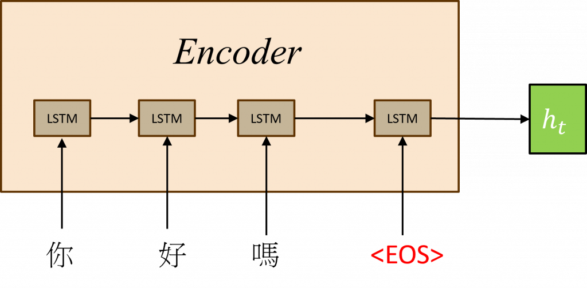
在Encoder的階段運用了一些特殊的技術，來幫助模型更有效地將上下文向量傳遞到Decoder中，首先我們需設定輸入序列的最後一個符號為<EOS>(End of Sequence)，這個策略的目的是使模型能在所有可能的序列長度中，瞭解其分布狀態。
這是因為在Decoder生成步驟中，是無法識別文字之間的長度的，所以在Encoder階段，我們讓模型學習何時能結束文字，這樣模型在Decoder階段便能做出判斷。
第二招則是逆向訓練文字，經過實驗結果表明將文字反向輸入至Encoder，效果會顯著提升，作者對此的解釋是因為RNN、LSTM、GRU等時間序列模型，並未能完美解決長時間序列的問題，因此這種訓練方式能讓模型的第一個輸入與第一個輸出更緊密地結合在一起。
Decoder（解碼器）

在Seq2Seq架構中，Decoder（解碼器）的角色是產生目標序列，這個生成過程會先將Encoder的上下文向量傳遞給Decoder的作為它的初始隱狀態，然後再配上<SOS>(Start of Sequence)來進行運算以計算出下一個文字，隨後不斷地將該文字與Decoder中的隱狀態hd(t)進行運算，直到產出<EOS>(序列結束標誌)時才停止。
這樣的說明可能比較抽象，我們可以從Decoder的生成公式來看（以下hat表示Decoder向量，並以LSTM為例）:

在這個公式中我們看到LSTM的時間序列輸出o(t)，是由Decoder的x(t)與hd(t)運算出來的，並且該狀態的 hd(0)會等同於Encoder的h(t)，這時我們就能取得每一層神經元的輸出結果。但是我們還需要從這些結果中運算出最可能的文字，因此我們可以用以下公式來表示每個時間序列輸出的文字:

如此一來我們就能夠從每一個神經元的輸出機率中選出機率最高的元素作為當前時間步的輸出，並且將此結果在與下一個時間步進行運算，已達到機器翻譯、文本摘要、語音辨識等效果。
Seq2Seq的訓練策略
在我們前面的內容中，我們提到一個深度學習模型除了輸入文字外，也要有對應的標籤，而這種方式稱之為監督式學習(Supervised learning)，那麼在機器翻譯的過程中，我們如何做到這一步呢?
在Seq2Seq最常用的方法稱為Teacher Forcing(教師強迫)，其運作方式就是在訓練階段時使用真實目標序列的元素作為Decoder的輸入，而非使用上一個時間步(上一個文字)的資料。
在這個做法主要包含兩個階段，分別為訓練階段與推理(inference)階段，以下我將會快速的告訴你這兩個步驟的目的。
訓練階段
在訓練期間的每個時間步驟，Decoder的輸入會被設定為實際的目標序列元素，例如:對於機器翻譯，我們會將待翻譯的目標文字設為輸入，並將其翻譯後的文字設為標籤，這樣做的用意是，當Decoder在每一步都知道自己應該產生什麼時，就能夠讓模型更快地學習目標序列的結構和模式。
推理階段
在模型訓練完成後，由於帶有先前目標序列元素的記憶，因此在產生新的序列時，Decoder不需要依賴真實的目標序列了，這時它會運用在訓練期間所獲得的知識來推理出新的序列，這時Decoder在產生每個時間步的輸出時，才會依賴前一個時間步產生的結果進行推理，而這種方式也被稱為貪婪解碼（Greedy Decoding）。
但Seq2Seq架構中仍存在一些缺點，產生問題的部分原因是其核心架構採用的是時間序列模型進行運算，因此當處理長序列時，我們可能會遇到梯度消失或梯度爆炸的問題，這也導致計算速度較慢。
並且在該架構中，Encoder與Decoder之間僅仰賴一個上下文向量傳遞資訊，所以Decoder只會獲得Encoder學習過的特徵，並忽視掉原始輸入特徵，這種特性使得訓練Seq2Seq需要大量的數據，而且如果採用貪心解碼策略，還會使得生成的序列並非全域的最佳解，僅是局部的最佳解。
小提示:
若要解出一個全域最優解，我們必須考慮整體的合理性，就像遊樂園一樣，如果我們憑著最短的路徑選擇每個遊樂設施，可能會因為排隊的時間而導致總消耗時間更長，同理使用貪婪解碼方案時，我們只考慮每次機率最高的文字，而並非組合最合理的文字。
後話
今天我們學習了Seq2Seq這項經典架構，很多強大的後續模型都源自於它的改良，因此Seq2Seq在自然語言處理中相當於基石的角色。但從現在的觀點看來，Seq2Seq存在許多問題，其中最嚴重的就是它只依靠一個上下文向量來傳遞資訊。因此，明天我會教你們另一項重要技術稱注意力機制(Attention)。
那麼我們明天再見！
內容中的程式碼都能從我的GitHub上取得:
https://github.com/AUSTIN2526/iThome2023-learn-NLP-in-30-days
Day 10｜【Day 10】掌握文字翻譯的技術(中)-為何需要注意力機制
- 原文：https://ithelp.ithome.com.tw/articles/10327536
- 發佈時間：2023-09-25 16:57:13
今日學習重點
現在你已經了解一些有關於Seq2Seq的知識，接下來我們要告訴你的是注意力機制(Attention)的特點，以及它如何解決僅通過上下文向量傳遞資訊的問題。
- 學習
注意力機制(Attention)的功能 - 理解Encoder與Decoder之間的訊息拼接方式
- 理解Decoder怎麼通過注意力機制生成文字
注意力機制(Attention)
注意力機制(Attention)模擬了人類的專注力特性，讓電腦在處理信息時有選擇地專注於某些部分，而忽略其他不重要的訊息，而注意力機制在Seq2Seq這種Encoder-Decoder模型架構裡的核心功能即是將各層Encoder的隱狀態h(t)選擇出最佳解，使其傳遞給Decoder進行比對後進行生成的動作，藉此讓Decoder能更深入地理解這些信息。

而在注意力機制，需要先計算注意力分數（Attention Scores）、注意力權重（Attention Weights）已產生更好的上下文向量（Context Vector），以下我將會用公式對此進行詳細的解析動作。
注意力分數（Attention Scores）
在採用注意力機制的Encoder架構中，我們不會僅用一個隱狀態讓Decoder進行生成，而是讓Decoder需要在每次生成文字時，都找出最有可能的Encoder的隱狀態，所以我們必須使其先行計算出注意力分數，使其能找到最有可能的結果，其計算公式如下:

在上述公式中，Encoder隱狀態h(i)將與每一個Decoder的隱狀態hd(t)進行對比與分析，其中score()有非常多的變化與形式，它可以透過內積、點積和拼接等方法進行計算，而大多數會用運以上公式來進行計算注意力分數的動作。
不過要如何選擇這些方式就需要進行實驗比對才能判別對當前任務的效用，而這些公式的含意接代表著將Encoder與Deceder兩者的隱狀態訊息完整的整合在一起。
注意力權重（Attention Weights）
在以上的公式中，我們只是計算出所有的排列組合分數，然而這個分數通常表示的是一個數值而不是機率，因此當我們計算出注意力分數後，還需要透過softmax函數來轉換為注意力權重，這樣能夠讓我們找出這些組合中機率最高的結果。

透過以上的公式透過不斷的迭代運算，使其能夠計算出h(i)與hd(t)之間的機率，這時我們就可以透過這個機率與Encoder中的h(i)進行運算，藉此找出輸入給Decoder的上下文向量。
上下文向量（Context Vector）
因此在計算上下文向量的過程中，我們需要將h(i)不斷的與所有的注意力權重at'(i)進行運算，其計算公式如下:
通過以上的計算流程，我們讓Encoder中的的隱狀態動態地調整注意力權重，使Decoder可以產生更準確的序列輸出，在模型訓練的過程中，將會訓練出Encoder-Eeocder的隱藏狀態與權重組合，進而提供了更多特徵輸入序列的資訊。
後話
在昨日與今天我們學習了Seq2Seq的完整架構以及其改善方法，你或許已經注意到與先前相比，這兩天的學習內容相對較少，原因在於我們才剛剛掌握了時間序列模型的基本理論，因此在學習Seq2Seq時，你可能會發現自己常常需要回頭檢視先前學過的公式內容。加上Seq2Seq與Attention的公式特別多，因此在撰寫程式時建構的複雜程度也相當的高，因此我決定用兩天的時間來詳細講解這個部分，並規劃在明天教你一個如何建立完整的機器翻譯模型。
那麼我們明天再見！
內容中的程式碼都能從我的GitHub上取得:
https://github.com/AUSTIN2526/iThome2023-learn-NLP-in-30-days
Day 11｜【Day 11】掌握文字翻譯的技術(下)-英法語言翻譯模型
- 原文：https://ithelp.ithome.com.tw/articles/10328763
今日學習重點
今天我們終於來到了文字翻譯技術的總結了，這次的內容會非常複雜，你可以將其想像為我們從第1天到第10天學習到的知識的綜合體，所以在今天我將把這些程式碼進行拆解，讓你理解Pytorch中該怎麼使用公式來實現Seq2Seq+Attention的架構，今天的學習內容如下：
- 加深你對Seq2Seq的印象
- 理解在文字翻譯上的前處理方法
- 學習Pytorch實現Decoder架構的方式
- 注意力機制可視化
掌握文字翻譯的技術
今日我們將透過Pytorch實現文字翻譯的技術，而這次選擇的語言對象是英語和法語。至於為何選擇英語和法語呢？這是因為英語和法語是全球使用範圍最廣的語言之一，所以已經有大量的線上及書面資源，並且英語和法語同為印歐語系，因此許多詞彙在某些層面上非常相似，所以選擇它們作為訓練的目標語言更為合適。
【STEP 1】準備資料集
首先我們需要先前往Pytorch官網下載今天將要使用的資料集，當然你可以用自己想要翻譯的語言集，但是在資料整理的步驟你就需要進行改良或參考以下的輸入格式。
在此資料集中的英語和法語儲存方式是透過一個txt檔案進行的，該資料集內容上，左側是英文，右側則是法語，其內容如下所示:
Go. Va !
Run! Cours !
Run! Courez !
Wow! Ça alors !
Fire! Au feu !
Help! À l'aide !
Jump. Saute.
我們所需要做的就是利用Python讀取該txt的內容，並建立英文與法語的標記器，確保能夠正常進行轉換。
【STEP 2】讀取檔案與計算詞彙出現次數
在該步驟中我們應該不會太陌生，因為我們在【Day 8】文字也是一種有時間序列的資料(下)-用IMDB影評探索文字中的情緒的學習過程中，我們就已經使用過這種方式了。但是這裡有些細節和會語之前不相同。
之前我們在TorchText中的get_tokenizer()的可以直接使用basic_english的方式呼叫標記器，但對於其他語言，我們必須採用其他函式庫的檔案，因此我們需要先安裝spacy的法語的資料包，可以透過以下指令進行安裝：
!pip install spacy
!python -m spacy download fr_core_news_sm
當安裝完畢後我們還需要建立兩個不同的標記器，已分別針對英語和法語斷詞的動作。
from torchtext.data.utils import get_tokenizer
# 建立標記器
french_tokenizer = get_tokenizer('spacy', language='fr_core_news_sm')
englisg_tokenizer = get_tokenizer('basic_english')
接下來我們將撰寫一個函數，此函數需要回傳每句話中詞彙的出現次數，但在此之前，我們需要先利用Python的open()函數讀取我們的資料集。
with open('data/eng-fra.txt', 'r',encoding='utf-8') as f:
text_datas = f.readlines()
在上述程式中，我們是利用readlines()讀取整份文件的資料，但該方式會在每行結尾預設一個\n作為換行符，並且該資料集的內容是以TAB鍵作分隔英語和法語，故會產生\t符號，因此每筆資料在程式中的結果如下所示。
[
Go.\tVa !\n,
Run!\tCours !,
\nRun!\tCourez !\n,
...
]
因此該函數的計算方式可以寫成下方這種格式，使其能夠幫助我們快速的統計出最終結果，並將被斷詞的詞彙回傳給主程式以方便後續的使用。
from collections import Counter
def preprocessing(french_tokenizer, englisg_tokenizer):
en_counter, fr_counter = Counter(), Counter()
english, french = [], []
for text_data in text_datas:
en, fr = text_data.strip('\n').split('\t')
en_tokens, fr_tokens = englisg_tokenizer(en), french_tokenizer(fr)
english.append(en_tokens)
french.append(fr_tokens)
en_counter.update(en_tokens)
fr_counter.update(fr_tokens)
return en_counter, fr_counter, english, french
en_counter, fr_counter, english, french = preprocessing(french_tokenizer, englisg_tokenizer)
在上述程式中，我們的主要處理步驟是先使用strip()來刪除文字前後的\n，然後再利用\t來分割文字。這樣我們將會得到一個包含兩個元素的串列資料，分別是英語和法語。
同時我們還可以取出相應的字串，並利用各自的斷詞器進行斷詞操作，使其能通過Counter()統計每個詞彙出現的次數。
【STEP 3】取得模型輸入與建立詞彙表
這次建立詞彙表的方式也是通過vocab()來處理，但在這裡要特別注意，我們這次需要加入4個特殊的詞彙標籤：<PAD>、 <SOS>、<EOS>、<UNK>，其中<SOS>和<EOS>是需要添加到每句話的開頭和結尾的特殊標籤，其目的是為了提醒模型知道何時該結束。
from torchtext.vocab import vocab
# 建立詞彙表
en_vocab = vocab(en_counter, min_freq=5, specials=('<PAD>', '<SOS>','<EOS>','<UNK>'))
en_vocab.set_default_index(en_vocab.get_stoi()['<UNK>'])
fr_vocab = vocab(fr_counter, min_freq=5, specials=('<PAD>', '<SOS>','<EOS>','<UNK>'))
fr_vocab.set_default_index(en_vocab.get_stoi()['<UNK>'])
接下來我們需要取得詞嵌入層的大小以及一些特定的索引值，以便後續直接使用這些索引進行超參數的設定。
# Ecoder與Decoder的Embedding輸入大小
INPUT_DIM = len(en_vocab)
OUTPUT_DIM = len(fr_vocab)
# 取得給予模型的索引值
SOS_IDX = en_vocab.get_stoi()['<SOS>']
EOS_IDX = en_vocab.get_stoi()['<EOS>']
PAD_IDX = en_vocab.get_stoi()['<PAD>']
【STEP 4】資料前處理與建立Dataloader
在資料前處理的步驟中，我們需要在英語和法語文本的尾端加上結束標記<EOS>，並且還需要確保每一批次的文本長度相同，因此我們必須在程式中將這兩種語言的文本維度統一。
from torch.nn.utils.rnn import pad_sequence
english_num, french_num = [], []
for i in range(len(english)):
en_num = en_vocab.lookup_indices(english[i]) + [EOS_IDX]
fr_num = fr_vocab.lookup_indices(french[i]) + [EOS_IDX]
english_num.append(torch.tensor(en_num))
french_num.append(torch.tensor(fr_num))
all_seq = english_num + french_num
pad_seq = pad_sequence(all_seq, padding_value=PAD_IDX, batch_first=True)
在這裡，為了方便處理我先將兩者文本進行相加，接下來我使用pad_sequence()使所有長度能夠統一，這一步在之前的情緒分析訓練時，我們是把它放入collate_fn()中處理。
但上次我們這樣處理，主要是因為文章長短相差過大，所以以最長的序列作為填充時就會導致訓練時間過長，但這次序列的差距並不大，所以我選擇在一開始就進行填充，如此一來，在訓練過程中不需要轉換資料，進而加快模型訓練的速度。
english_num, french_num = pad_seq[:len(english_num)], pad_seq[len(english_num):]
MAX_LEN = len(english_num[0])
x_train, x_valid, y_train, y_valid = train_test_split(english_num, french_num, train_size=0.8, random_state=46, shuffle=False)
接下來我們在處理完填充資料後還需要將其分割回來，在這裡我直接使用了英語資料的長度作為索引進行分割，當分割完畢後，還需要計算出每一個序列的長度，這是因為在Decoder產生的文字需要與我們的目標文字等長才能計算損失。當我們都執行完畢後就能夠將資料切分成訓練集與驗證集，並將其包裝為Dataset後接著交由Dataloader處理。
class TranslateDataset(Dataset):
def __init__(self, x, y):
self.x = x
self.y = y
def __getitem__(self, index):
return self.x[index], self.y[index]
def __len__(self):
return len(self.x)
trainset = TranslateDataset(x_train, y_train)
validset = TranslateDataset(x_valid, y_valid)
train_loader = DataLoader(trainset, batch_size = 1024, shuffle = True, num_workers = 0, pin_memory = True)
valid_loader = DataLoader(validset, batch_size = 1024, shuffle = True, num_workers = 0, pin_memory = True)
device = torch.device('cuda' if torch.cuda.is_available() else 'cpu')
【STEP 5】建立Encoder模型
這次的計算量相對較大，因此我選擇使用GRU作為時間序列模型，其模型的堆疊方式與先前情緒分析是一樣的，但在這裡，我們需要獲取完整的輸出狀態和隱藏狀態，因為這些狀態將會是注意力機制和Decoder的輸入資料。
import torch.nn as nn
class EncoderRNN(nn.Module):
def __init__(self, input_size, hidden_size, dropout_p=0.1):
super(EncoderRNN, self).__init__()
self.hidden_size = hidden_size
self.embedding = nn.Embedding(input_size, hidden_size, padding_idx=PAD_IDX)
self.gru = nn.GRU(hidden_size, hidden_size, batch_first=True)
self.dropout = nn.Dropout(dropout_p)
def forward(self, input):
embedded = self.dropout(self.embedding(input))
output, hidden = self.gru(embedded)
return output, hidden
encoder = EncoderRNN(input_size = INPUT_DIM, hidden_size = 128).to(device)
【STEP 6】建立注意力機制
這個步驟是我們在昨天的教學【Day 10】掌握文字翻譯的技術(中)-為何需要注意力機制注意力機制的程式碼，我們可以先看到以下程式:
import torch.nn.functional as F
class BahdanauAttention(nn.Module):
def __init__(self, hidden_size):
super(BahdanauAttention, self).__init__()
self.Wa = nn.Linear(hidden_size, hidden_size)
self.Ua = nn.Linear(hidden_size, hidden_size)
self.Va = nn.Linear(hidden_size, 1)
在初始化注意力機制的過程中，其實是透過一系列Linear()進行計算的，你可能會想到Linear()不就是深度神經網路的部分嗎？在這裡我們可以回憶一下【Day 7】文字也是一種有時間序列的資料(上)-時間序列模型大揭密這篇文章的內容。
我們曾提到在LSTM等模型的公式中，將會分為x(t)和h(t)兩部分，這兩個部分會分別與其對應的權重進行乘法運算，然後再加總後透過tanh函數進行計算其資料分布。在這個過程中，某個輸入與其權重的乘法運算實際上就是深度神經網路的計算原理。
因此針對Decoder的注意力機制來說，公式主要是將hd(t)和h(t)這兩部分的數據進行運算，並將結果的前向傳播計算，其實際方式可以看下方的程式碼（下方程式有公式代號可供參考）。
def forward(self, query, keys):
# v * tanh(query(hd) * w + keys(h) * w) Score的其中一種計算方式(可自行修改)
# 注意力分數的計算方式
scores = self.Va(torch.tanh(self.Wa(query) + self.Ua(keys))) # a(t)
scores = scores.squeeze(2).unsqueeze(1)
# 注意力權重的計算方式
weights = F.softmax(scores, dim=-1) # a'(t)
# 兩個矩陣後兩個維度需相同大小
context = torch.bmm(weights, keys) # c(t)
return context, weights
在以上的程式中，我們首先計算出注意力分數，並利用softmax()將其轉換為注意力權重，但在後續計算c(t)時你可能會發現，似乎沒有計算每個隱狀態之間的結果的這一個步驟。
這正是我要說明的bmm()計算方式的用途，這種方式類似於矩陣相乘的動作，但不會進行加總，因此在過程中每一個元素都會被完整計算，所以我們可以用這種方法快速計算每個隱狀態之間的結果。
【STEP 7】建立Decoder
我們終於進行到今天最複雜的部分Decoder了，要開始這個步驟錢，因為需要將先前所完成的每一個動作都放在Decoder中，因此前向傳播時我們還需處理許多細節，首先我們來看看初始化的部分。
class AttnDecoderRNN(nn.Module):
def __init__(self, hidden_size, output_size, dropout_p=0.1):
super(AttnDecoderRNN, self).__init__()
self.embedding = nn.Embedding(output_size, hidden_size, padding_idx=PAD_IDX)
self.attention = BahdanauAttention(hidden_size)
self.gru = nn.GRU(2 * hidden_size, hidden_size, batch_first=True)
self.out = nn.Linear(hidden_size, output_size)
self.dropout = nn.Dropout(dropout_p)
在這部分，我們只是將先前的注意力機制層引入到解碼器層中。然而，前向傳播方式較為複雜，所以接下來我將把程式碼仔細拆解，以讓你更清楚這程式的具體意義。
首先我們需要創建一個與當前批次大小相等的<SOS>標籤，該標籤是Decoder的第一個輸入資料，使其能夠進行推理的動作，接下來我們也需建立decoder_outputs這個串列，用以儲存每次生成的文字，讓其能被損失函數所使用，attentions則是可視化注意力機制時所用到的結果。
def forward(self, encoder_outputs, encoder_hidden, target_tensor=None):
batch_size = encoder_outputs.size(0)
decoder_input = torch.empty(batch_size, 1, dtype=torch.long, device=device).fill_(SOS_IDX)
decoder_hidden = encoder_hidden
decoder_outputs = []
attentions = []
另外在Decoder的部分由於需要考慮到Encoder的隱狀態h(t)與decoder的隱狀態hd(t)，以及為了滿足注意力機制的需求，所以我們必須考量Encoder中的所有隱狀態encoder_outputs。
為此我需要新增一個forward_step()方法，該方法的目的是讓這些參數可以給注意力機制進行運算來定位最適合的上下文向量c(t)，並將這個上下文向量c(t)與Decoder的輸入<SOS>...<EOS>透過cat()函數結合之後，再提供給GRU進行運算，來計算出文字的生成結果。
def forward_step(self, input, hidden, encoder_outputs):
embedded = self.dropout(self.embedding(input))
query = hidden.permute(1, 0, 2)
context, attn_weights = self.attention(query, encoder_outputs)
input_gru = torch.cat((embedded, context), dim=2)
output, hidden = self.gru(input_gru, hidden)
output = self.out(output)
return output, hidden, attn_weights
當完成上述步驟後，我們就能透過迴圈不斷生成文字，直至達到設定的最大值，在這裡我所採用的訓練策略是Teacher forcing，也就是透過將實際標籤給予Decoder生成，因為此方法能有效加快收斂速度。
for i in range(MAX_LEN):
decoder_output, decoder_hidden, attn_weights = self.forward_step(
decoder_input, decoder_hidden, encoder_outputs
)
decoder_outputs.append(decoder_output)
attentions.append(attn_weights)
if target_tensor is not None:
# Teacher forcing
decoder_input = target_tensor[:, i].unsqueeze(1) # Teacher forcing
else:
# 不使用Teacher forcing(不給予標籤進行訓練)
_, topi = decoder_output.topk(1)
decoder_input = topi.squeeze(-1).detach() # detach from history as input
decoder_outputs = torch.cat(decoder_outputs, dim=1)
# 計算文字機率
decoder_outputs = F.log_softmax(decoder_outputs, dim=-1)
attentions = torch.cat(attentions, dim=1)
return decoder_outputs, decoder_hidden, attentions
decoder = AttnDecoderRNN(hidden_size = 128, output_size = OUTPUT_DIM).to(device)
小提示:
在這個階段因為我一步步地分解並說明程式碼，可能會導致你不知道實際的排版狀快，所以我建議你可以到我的GitHub上對照這些程式碼的位置，避免在邏輯上產生混淆。
【STEP 8】建立訓練函數
訓練模型的方式與先前相同，然而這次我們有兩個模型，因此需宣告兩個優化器，而這次我們使用的是 NLLLoss()，這是一種多分類的損失函數，它與CrossEntropyLoss()相似，但不同之處在於CrossEntropyLoss() 是用 softmax 來計算機率，而NLLLoss()是使用 log softmax（softmax 的結果再取對數）。
import torch.optim as optim
encoder_optimizer = optim.Adam(encoder.parameters(), lr=1e-3)
decoder_optimizer = optim.Adam(decoder.parameters(), lr=1e-3)
criterion = nn.NLLLoss()
模型訓練的方式與先前相同，差異在於這次有兩個模型，因此在這部分我們需要分別調整兩個模型的權重，並且需要將Encoder所產生的最後一個狀態h(t)與完整的h(0)~h(t)給予Decoder進行生成，並且在損失函式計算時將所有維度攤平，使其能夠符合NLLLoss()的計算方式。
def train(epoch):
train_loss = 0
train_pbar = tqdm(train_loader, position=0, leave=True)
encoder.train()
decoder.train()
for input_datas in train_pbar:
inputs, targets = [i.to(device) for i in input_datas]
encoder_optimizer.zero_grad()
decoder_optimizer.zero_grad()
encoder_outputs, encoder_hidden = encoder(inputs)
decoder_outputs, _, _ = decoder(encoder_outputs, encoder_hidden, targets)
loss = criterion(
decoder_outputs.view(-1, decoder_outputs.size(-1)),
targets.view(-1)
)
loss.backward()
encoder_optimizer.step()
decoder_optimizer.step()
train_pbar.set_description(f'Train Epoch {epoch}')
train_pbar.set_postfix({'loss':f'{loss:.3f}'})
train_loss += loss.item()
return train_loss/len(train_loader)
同樣地對於驗證的方式，我們只需將全部有關梯度的部分移除即可，其他部分皆與訓練相同。
def valid(epoch):
valid_loss = 0
valid_pbar = tqdm(valid_loader, position=0, leave=True)
encoder.eval()
decoder.eval()
with torch.no_grad():
for input_datas in valid_pbar:
inputs, targets = [i.to(device) for i in input_datas]
encoder_outputs, encoder_hidden = encoder(inputs)
decoder_outputs, _, _ = decoder(encoder_outputs, encoder_hidden, targets)
loss = criterion(
decoder_outputs.view(-1, decoder_outputs.size(-1)),
targets.view(-1)
)
valid_pbar.set_description(f'Valid Epoch {epoch}')
valid_pbar.set_postfix({'loss':f'{loss:.3f}'})
valid_loss += loss.item()
return valid_loss/len(valid_loader)
【STEP 9】訓練模型與評估
接下來我們將進行100次的模型訓練並評估模型，此部分基本上不會有太大的修改空間，因為這就是訓練模型時所使用到的策略，所以在下方的程式碼中，你將看到與我們情緒辨識時的程式碼非常相似。
epochs = 100 # 訓練次數
early_stopping = 10 # 模型訓練幾次沒進步就停止
stop_cnt = 0 # 計數模型是否有進步的計數器
model_path = 'model.ckpt' # 模型存放路徑
show_loss = True # 是否顯示訓練折線圖
best_loss = float('inf') # 最佳的Loss
loss_record = {'train':[], 'valid':[]} # 訓練紀錄
for epoch in range(epochs):
train_loss = train(epoch)
valid_loss = valid(epoch)
loss_record['train'].append(train_loss)
loss_record['valid'].append(valid_loss)
# 儲存最佳的模型權重
if valid_loss < best_loss:
best_loss = valid_loss
torch.save(encoder.state_dict(), 'e' + model_path)
torch.save(decoder.state_dict(), 'd' + model_path)
print(f'Saving Model With Loss {best_loss:.5f}')
stop_cnt = 0
else:
stop_cnt+=1
# Early stopping
if stop_cnt == early_stopping:
output = "Model can't improve, stop training"
print('-' * (len(output)+2))
print(f'|{output}|')
print('-' * (len(output)+2))
break
print(f'Train Loss: {train_loss:.5f}' , end='| ')
print(f'Valid Loss: {valid_loss:.5f}' , end='| ')
print(f'Best Loss: {best_loss:.5f}', end='\n\n')
if show_loss:
show_training_loss(loss_record)
這次的訓練量可能會較大，因此可能需要稍待一些時間，不過程式順利完成執行後，我們就能看到以下的結果。
Train Epoch 87: 100%|████████████████████████████████████████████████████| 107/107 [00:25<00:00, 4.18it/s, loss=0.087]
Valid Epoch 87: 100%|██████████████████████████████████████████████████████| 27/27 [00:03<00:00, 8.95it/s, loss=0.570]
Train Loss: 0.08440| Valid Loss: 0.55161| Best Loss: 0.54151
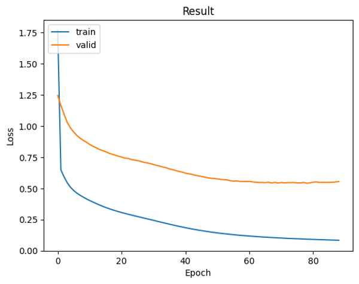
我們可以看到，當該模型訓練進入後期階段時，曲線會微微上升，在這裡其時就有過擬合的現象了，而我們所設定的訓練模式是只要連續10次loss值沒有改變，那麼模型就會停止訓練，這樣一來就能夠省下後續Epoch的時間。
但在這裡我們能發現一個問題，就是訓練資料的Loss值與驗證資料相比，訓練的Loss值低很多，這個情況主要是由於我們的資料集範圍不夠廣泛，因此在驗證時模型經常無法預測到資料裡的文字，而這種改善的方式就需要輸入更多的歷史資料，使訓練和驗證的Loss值達到平衡。
【STEP 9】使用模型進行翻譯
當模型訓練完成後，我們將採用貪婪解碼的方式生成文字，使用方法相當簡單，首先透過x_valid取得驗證集的資料(或是自行輸入一段文字)，然後提升其維度並傳給Encoder進行解析，然後將其狀態給予Deocder進行解析。當程式生成完畢後我們每次將選取這些文字分布中機率最高的topk文字，並持續的迭代直到遇到<EOS>為止。
input_tensor = x_valid[0].to(device)
with torch.no_grad():
encoder_outputs, encoder_hidden = encoder(input_tensor.unsqueeze(0))
decoder_outputs, decoder_hidden, decoder_attn = decoder(encoder_outputs, encoder_hidden)
_, topi = decoder_outputs.topk(1)
decoded_ids = topi.squeeze()
decoded_words = []
for idx in decoded_ids:
if idx.item() == EOS_IDX:
break
decoded_words.append(idx.detach().cpu().tolist())
encoder_text = " ".join([en_vocab.lookup_token(i) for i in input_tensor if i!= PAD_IDX])
decoder_text = " ".join([fr_vocab.lookup_token(i) for i in decoded_words])
print("EN:", encoder_text)
print("FR:", decoder_text)
我們可以看到以下模型的輸出結果，該結果表明了我們的模型在文字理解上已有不錯的效果，如果我們增加更多的資料量，那麼在文字翻譯的任務上就會表現得更好。
EN: she went shopping with him last monday . <EOS> # 上週一她和他一起去購物
FR: Elle est allée faire les courses avec lui , au soir . # 晚上她和他一起去購物
【STEP 9】注意力機制可視化
在今天的最後一步，我將教你們如何將注意力機制作可視化。還記得我們在Decoder中所儲存的注意力權重嗎? 其實，我們存放這些數據的目的，就是為了現在的這一步。
在這裡所需做的動作相當簡單，因注意力權重是一個經過softmax的分數，所以只需將給予Encoder的序列資料與Decoder的序列資料進行比對，至於<PAD>標籤的部分我們忽略即可。而我們的注意力權重目前會是一個[1, 64, 64]的向量，然而我們的Encoder的向量只有[12]，Decoder的向量只有9，因此我們需要將注意力權重轉變為[12, 12](第一個12對應Encoder，第二個對應Decoder)，使其能夠忽略掉不重要的訊息。
import matplotlib.ticker as ticker
def showAttention(input_sentence, output_words, attentions):
fig = plt.figure()
ax = fig.add_subplot(111)
cax = ax.matshow(attentions.cpu().numpy(), cmap='bone')
fig.colorbar(cax)
# Set up axes
ax.set_xticklabels([''] + input_sentence.split(' '), rotation=90)
ax.set_yticklabels([''] + output_words.split(' '))
# Show label at every tick
ax.xaxis.set_major_locator(ticker.MultipleLocator(1))
ax.yaxis.set_major_locator(ticker.MultipleLocator(1))
plt.show()
showAttention(encoder_text, decoder_text, decoder_attn[0,:len(decoded_words),:len(decoded_words)])
當我們完成上述程式後，可以看到生成出來的法語文字所對應的英文單字，其詞彙意思與基本位置皆相同，而Decoder中不需要生成向量的部分顏色則接近於0。
且這張圖片中，我們可以得知是哪些字的隱狀態讓模型獲得一個較佳的效果，所以我們還可以根據這些結果來調整模型的訓練方式。
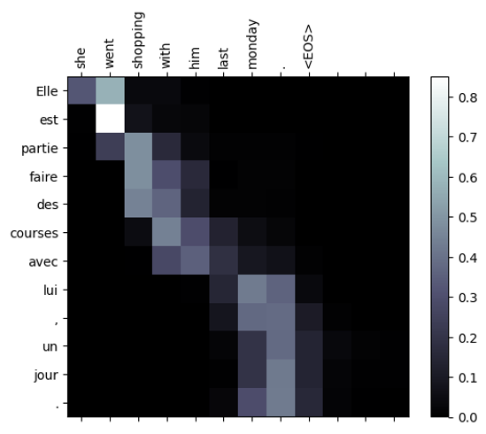
後話
經過前幾日的理論學習與今天的程式的一連串砲轟之下，我想你可能會覺得快累死了。因此，明天我不再為你加碼難題，而是將這11天以來我提到名詞但未解釋知識，全部在明天補充給你，這些知識不會太過複雜。例如：損失函數和激勵函數的講解、以及中文的斷詞方式等，這些我都會從明天開始慢慢補充。
那麼我們明天再見！
內容中的程式碼都能從我的GitHub上取得:
https://github.com/AUSTIN2526/iThome2023-learn-NLP-in-30-days
Day 12｜【Day 12】該如何選擇損失函數與激勵函數?中文該如何斷詞?
- 原文：https://ithelp.ithome.com.tw/articles/10329094
今日學習重點
先前有些重要的知識我們尚未完全補充，因此我在今天我將會把這些部分都告訴你，讓你知道我們為何選擇使用此種損失函數與激勵函數，同時也會實作我一直未提及的中文斷詞方式，今天的主要內容包括以下幾點：
隱藏式馬可夫模型(HMM)斷詞方式- 損失函數的應用場景與解析
- 激勵函數解析與可視化
隱藏式馬可夫模型(HMM)
在中文斷詞的處理上，存在許多不同的方法，其中最基本的方式就是使用預先建立的詞彙字典來匹配文本中的詞語，這種策略稱為字典匹配法(Dictionary Matching Method)，但然而這種方法在處理廣大的中文字時，可能會遇到因異體字而導致該詞彙不在字典中的問題，或者遇到過多的生僻字等相關問題。
不過在中文的文法中，有些任務可能需要包含這些生僻字，因此許多方法傾向於採用統計學的做法，其中最常見的一種方法就是隱藏式馬可夫模型(HMM)。

在隱藏式馬可夫模型中，我們將每一個文字稱之為S，並將連接兩個文字序列的稱為a，當進行文字處理時，該模型會發放出三個邊，其中包括自我連接a11、與下一個序列的連接a12以及與上一個序列的連接a13，這三個邊的總和將會等於1。
在演算的方式上，我們會隨機選擇一個狀態作為起點S0~Sn，然後按照設定的邊a進行移動，直到達到預先設定的最大步數，這樣我們便可以計算每一條路徑的機率值，擁有這個機率值後，我們能設定一個閾值，用來將可能文字路徑儲存下來。
雖然理論看起來相當簡單，可是實際上程式碼的應用稍微複雜一些，畢竟該演算法主要工作內容是計算出所有的路徑，並針對所有序列的概率進行估算，以從中找出最有可能的文字解析，因此還會衍生出更多的演算法，但這可能跟深度學習關聯性不大，在這裡我們只需瞭解該演算法的基本原理即可。
在實現程式碼的部分，Python中有個名為Jieba的中文斷詞函式庫，其可以幫助我們進行這些複雜的計算。在以下的程式中你將會看到，只需執行該段程式碼，就能輕鬆地完成斷詞工作。
# 需先執行pip install jieba
import jieba
text = "我喜歡自然語言處理"
seg_list = jieba.cut(text, HMM=True)
print("/".join(seg_list))
#---------------輸出------------
我/喜歡/自然/語言/處理
損失函數
我們在訓練模型時，使用了多種不同的損失函數來進行訓練，但對於剛開始學習這些知識的你，可能對於其用法並不十分理解，因此當時我並未深度講解，而現在我決定將我們使用過的所有損失函數進行整理並解析，並指出在哪些情況下需要使用這些損失函數。
二值交叉熵损失(Binary Cross-Entropy Loss, BCEloss)
二值交叉熵損失（Binary Cross-Entropy Loss)是一種針對二分類問題的損失函數，該函數主要對模型在二分類任務中的最後輸出結果進行評估，其計算方式如下：
在計算公式中，y是我們賦予模型的標籤，它通常是0或1，而p則是模型最終的輸出結果，常常會使用sigmoid函數來將其縮放至0~1的範圍內。當y等於1時，我們希望「(p)越接近1越好」，這對映的是公式ylog(p);當y等於0時，我們則希望「(p)越接近0越好」，這對映的是公式(1 - y)log(1 - p)。透過這樣的調整方式，使p的數值能越來越接近實際的標籤數值。
交叉熵損失（CrossEntropyLoss）
交叉熵損失（CrossEntropyLoss）主要適用於分類任務，包含二分類與多分類，它常見於多類別分類任務中，交叉熵損失的基本概念是去評估模型預測輸出和標籤之間的差距，對於一個使用One-hot encoding編碼的樣本，交叉熵損失的計算是如下進行的：
此公式中我們進行了不同的類別機率的對比，通過p(i)以及log(p(i))的相乘，我們可以嚴懲預測機率和標籤1之間的差異，同時也對其他類別的預測機率與0之間進行處置，如果模型的預測趨近於真實標籤。
在Pytorch中，該公式已經內含了softmax與One-hot encoding的運算，因此針對我們的模型輸出，就不應該再進行softmax處理，以免產生計算上的錯誤。
NLLLoss (Negative Log Likelihood Loss)
NLLLoss (Negative Log Likelihood Loss)與交叉熵損失都專門用於多類別分類任務且十分相似。不過NLLLoss的公式不需要進行One-hot encoding的轉換，所以在運算速度上會較快。
因此在處理輸出量大的情況時，我們通常會使用NLLLoss，該方法的計算原理非常直觀，它透過-log來衡量預測值與實際值之間的差距，透過這樣的方法，可以使數值更穩定，下列是它的計算公式:

小提示:
-log是一種常用的方法，用來簡化機率分佈的變異數，當我們選擇使用對數概似函數作為損失函數，它可輕易的與其他損失函數進行對比及組合，以滿足不同問題的需求，因此在損失函數中常常會看到-log的身影。
激勵函數
我們先前已經介紹過許多激勵函數，所以你應該對此有基礎的認識了，而現在我將進一步地將這些函數可視化，並解釋它們的使用場合，但在開始之前我們需要先定義一個函數，讓我們能接收外部輸入的激勵函數公事以及x軸範圍為參數，以便進行可視化的動作。
def draw(x, label, activation):
# 標題
plt.title(f'{label} Function')
# X Y軸名稱
plt.xlabel('Input')
plt.ylabel('Output')
# 圖表大小
plt.figure(figsize=(8, 6))
# 繪製折線圖
plt.plot(x, activation(x), label=label, color='b')
# 格線樣式
plt.axhline(0, color='black',linewidth=0.5)
plt.axvline(0, color='black',linewidth=0.5)
# 顯示格線
plt.grid(True)
plt.legend()
plt.show()
ReLU
ReLU函數的主要功能在於協助神經網路學習非線性關係，在處理複雜數據和任務時，這維度的重要性不言而喻，這原因可以歸結為Wx+b的最終計算結果均為線性，因此使用該函數能更破壞掉這種線性關係，使其更有效地產出接近實際狀態的輸出，讓我們一起看下方的公式：

該公式代表著，當輸x大於零時ReLU函數傳回x本身，當x小於或等於0時ReLU返回0，這同時也代表著該神經元並不會被啟用，這種方式有助於神經網路進行強化特徵和剔除特徵的功能，該曲線我們可以透過以下程式來生成:
def relu(x):
return np.maximum(0, x)
x = np.linspace(-5, 5, 100)
draw(x, 'ReLu', relu)

但這種方式也存在一些問題，當輸入為負數時，輸出平均值為零，於是會產生所謂的死亡神經元問題(Dead ReLU Problem)，也就是某些神經元可能永遠無法被激活，不過ReLU的效能仍然十分強大，因此仍然是神經網路中最常用的激活函數之一。
Softmax
softmax的作用主要是將一組原始分數z(i)轉換成表示機率分佈，該函數能夠將每個z(i)轉換為介於0到1之間的機率值，並同時確保所有類別的機率總和等於1。

該公式我們有在【Day 10】掌握文字翻譯的技術(中)-為何需要注意力機制中，曾經簡單提及過注意力分數的計算方式，其實現方式如下。
def softmax(x):
e_x = np.exp(x - np.max(x))
return e_x / e_x.sum()
x = np.linspace(-5, 5, 100)
draw(x, 'Softmax', softmax)
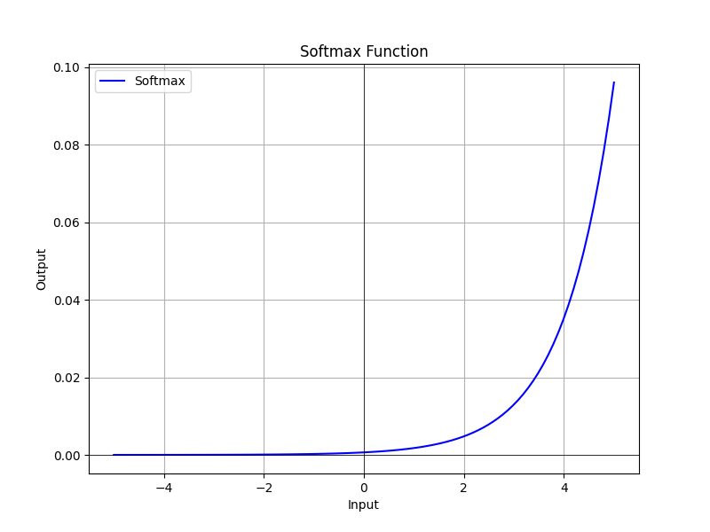
tanh
tanh函數的輸出範圍在-1~1之間，這表示對於任何實數輸入，輸出都會在這個範圍內，並且該函數輸出均值為0。這意味著當輸入接近0時，tanh的輸出接近0，所以它包含正負值的資料更具區分性(中心化性質)，所以該函數常見於時間序列模型中，作為計算資料機率分布的狀態，該曲線的公式如下。

它通常被應用在神經網路的隱藏層，因中心化性質與S曲線的特色使其能夠處理各種資料分佈，進而解決一些梯度消失的問題，在許多情況下它被認為是sigmoid函數的替代選擇，以下是該曲線的實現方式：
def tanh(x):
return np.tanh(x)
x = np.linspace(-5, 5, 100)
draw(x, 'tanh', tanh)
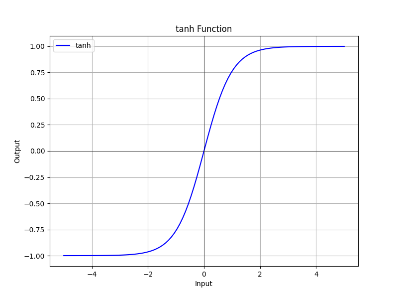
sigmoid
Sigmoid函數的輸出範圍介於0~1之間，這對於處理二元分類問題極為實用，因為我們可以將該輸出直接作為機率值，同時Sigmoid是一種平滑曲線函數，意味著它在整個輸入範圍內都可以連續求導，此特性對於梯度下降等最佳化演算法的運作非常重要，其數學函數公式如下：

Sigmoid也有一些缺點，其中一個主要問題是當輸入遠離零時，梯度會接近於零，這與ReLU所造成的問題相同，因此他也會產生梯度消失問題，其實現曲線的方式如下:
def sigmoid(x):
return 1 / (1 + np.exp(-x))
x = np.linspace(-5, 5, 100)
draw(x, 'Sigmoid', sigmoid)
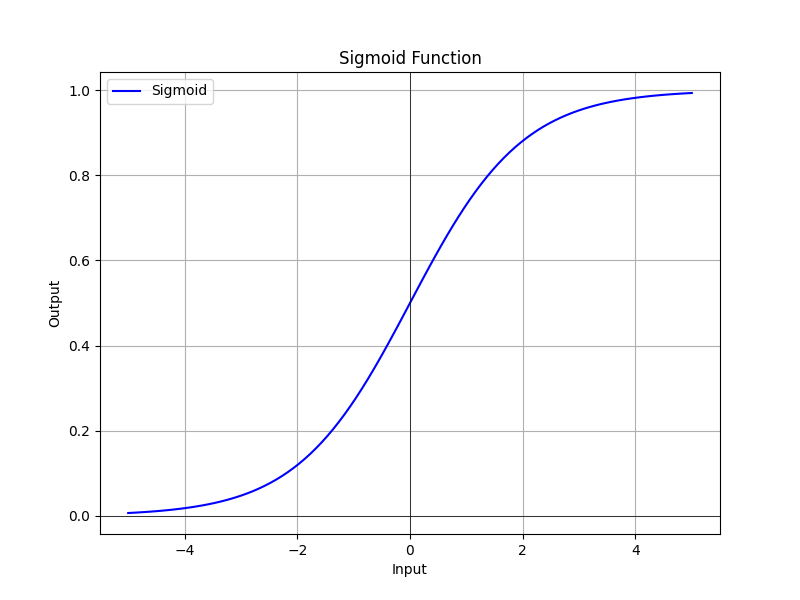
從以上的激勵函數中，我們可以瞭解到雖然不同的激勵函數對應的動作各有所異，並也都存在各自的優缺點，因此在設計神經網路時，我們必須考慮這些函數的特性，並進行實驗以決定什麼樣的設計最合理才是最正常的模型設計方式。
後話
這次我將介紹了一些在深度學習中至關重要但之前未提及的概念和技術，深入理解這些內容對於掌握神經網路的調整與訓練過程十分關鍵，如果你已經掌握了我們到目前為止所學習的內容，那麼對於當下市面上的自然語言處理模型，你應有一定程度的認識，不過你還需要進一步強化模型訓練策略，所以我將會陸續介紹一些在自然語言處理領域中，市場上的經典模型。
那麼我們明天再見！
內容中的程式碼都能從我的GitHub上取得:
https://github.com/AUSTIN2526/iThome2023-learn-NLP-in-30-days
Day 13｜【Day 13】預訓練模型的強大之處? 我們要怎麼使用它?
- 原文：https://ithelp.ithome.com.tw/articles/10330137
- 發佈時間：2023-09-28 21:48:33
前言
現在許多企業都不是從零開始訓練模型，而是使用大型企業提供的預訓練模型(pre-trained model)以實現企業自身的目標，而在這個步驟中，接著他們會微調(Fine-tune)這些模型，讓模型的權重更適合自身的具體需求，在今日的學習內容中，我們主要探討的就是以下幾個主題:
- 理解
遷移學習(Transfer Learning)的原理 源資料(Source Data)與源模型(Source Model)的用處目標資料(Target Data)與目標模型(Target Model)的用途
預訓練模型(Pre-trained Model)

預訓練模型（Pre-trained Model）通常是由大型數據集上的大量訓練過程得來，這個動作讓模型已經初步掌握了豐富的語言或圖像特徵，並且該模型在訓練期間常會透過一些特殊訓練策略使模型更能應對後續的調整或目標。
而這種訓練方法也被稱為遷移學習(Transfer Learning)，我們可以將遷移式學習分為兩大部分：源模型(Source Model)/源資料(Source Data)和目標模型(Target Model)/目標資料(Target Data)。
預訓練階段(源模型/源資料)
在預訓練階段，強大的模型架構（源模型）通常被頂尖的資料科學家們所開發，並在大量的資料集（源資料）上進行訓練，這個過程通常需要消耗非常多的電腦資料並且該步驟非常耗時，我們在【Day 11】掌握文字翻譯的技術（下）-英法語言翻譯模型這篇文章中，僅用MB級別的資料以及一個較為複雜的神經網路就已經花去了許多時間，對於搭載有RTX 3090與i9第10代處理器的電腦來說，這樣的訓練過程大概需要50分鐘。
但當我們以GPT3(ChatGPT的老祖宗)這類大型語言模型（Large Language Model, LLM)來看，其模型參數量大約是我們模型的16500倍，資料集的大小更擁有上萬倍以上的差距，若我們只用一張顯卡來進行訓練，就有可能需要好幾百年才能完成，因此這種類型的模型訓練，通常需要用到多張GPU或TPU，以GPT-3為例，OpenAI訓練過程使用了10000張A100顯卡，但即便如此卻還是需要大約15天的時間完成訓練，所以訓練這種大型模型通常只有頂尖的科學家與公司能力所及。
那麼使用大量的資料與模型來進行訓練的目的到底是什麼呢?你可以將模型想像成一個箱子當參數量越大時，模型的「箱子」就越大。而我們所設計的模型架構，則可以被想像成「箱子內部的配置」。當這個配置越合理，我們就能更有效地利用和理解這些資料，所以增加模型的參數量和優化其結構是深度學習模型上兩個相當重要的部分。
小提示:
除了模型與資料之外，預訓練模型在訓練過程中的策略也佔有重要之地，這一點我將在後續的內容中逐步詳述，讓你能夠理解這些模型的訓練方式是如何形成的。
微調階段(目標模型/目標資料)

圖片來源:從零開始的AI程式設計養成之路 作者:我自己
當源模型完成訓練後，許多公司會選擇將其開源，例如 「Google 的 BERT」、「OpenAI 的 GPT-J」，以及 「Facebook 的 Llama2」，這些都會被稱為預訓練模型，簡單來說預訓練模型就是是透過大型資料訓練一個模型來獲得豐富的特徵，然後再進行第二次的訓練，因此在這個階段我們通常需要做的工作就是對模型進行微調（Fine-tune）。那為何我們稱預訓練模型的這一步驟為微調，而非訓練呢？原因在於原始資料量通常是目標資料量的上千倍，這意味著當我們為模型提供目標資料時，模型只會對權重作微小的調整，其影響就好比在大海中加入幾滴自來水，基本上並不會引起太大變化。
但微調的效果自然有其限制，當模型使用源資料訓練時所對應到的標籤並不涵蓋我們目標資料所需的標籤，那麼無論我們如何努力訓練，都無法有效調整模型的權重，所以通常情況下，我們會直接將最後一層的輸出層權重進行隨機初始化，這樣一來當我們的目標資料輸入給模型時，可以透過前幾層的特徵進行判斷並大幅調整輸出層的結果，這種方式好比我們已經學習到了許多動物的特徵，但遇到新的動物，我們就會通過以前學習到的這些特徵來形容這個新動物，從而理解這個動物的真實樣貌。
後話
現在你已經了解預訓練模型和自主訓練模型的差異，因此在後續的內容中，我將逐步告訴你自然語言處理領域中，有那些具有劃時代意義的預訓練模型，並深入介紹他們如何實行強大且有效的訓練策略，這一點是我們學習自然語言處理不可或缺的一部分，因為許多預訓練策略不僅僅只用在預訓練階段，而是被大量運用在自然語言任務中，因此掌握這些策略能夠在我們開發自己的模型時，提供極佳的參考價值。
那麼我們明天再見！
內容中的程式碼都能從我的GitHub上取得:
https://github.com/AUSTIN2526/iThome2023-learn-NLP-in-30-days
Day 14｜【Day 14】解析詞嵌入預訓練模型的奧秘(上)-深度探索Word2Vec的奧妙之處
- 原文：https://ithelp.ithome.com.tw/articles/10330450
前言
我們之前有學過要訓練一個優質的自然語言處理模型，必須打造出一個良好的詞嵌入向量，因此在今天的文章裡，我將為你介紹Word2Vec預訓練模型的訓練原理以及其模型架構在Pytorch中的實現方法，當然我們不是直接呼叫的函式庫而是手動的將模型給建構出來這樣子就能夠加深你對這模型的理解度我們今天的學習重點如下:
- 學習
Word2Vec的基礎理論 - 實現
Skip-gram與CBOW - 理解
Word2Vec所產生的問題
Word2Vec是一種將單個詞彙轉換為連續向量的詞嵌入技術，其目的是更有效地捕捉詞彙之間的語義相似度。這種技術與我們先前使用的時間序列模型有所不同。在我們過去的方法中，我們嘗試透過某一方向的文字推斷下一個的文字，而Word2Vec則採用了Skip-gram或CBOW兩種方法，這些方法都能使詞嵌入層能夠學習到從詞彙中心擴散出的文字機率，從而產生出一個更完整的詞嵌入，接下來我們將詳細探討這兩種方法的實現方式。
Skip-gram
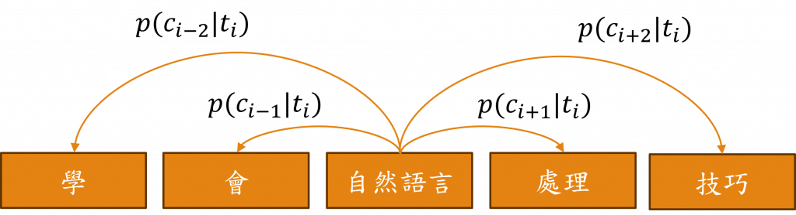
Skip-gram的目標是根據特定詞彙來預測上下文詞彙機率，該模型的運作方式是先輸入一個目標詞彙t(i)，然後輸出與該詞彙上下文c(i±j)相關的詞彙機率，並且學習到最大化上下文的機率，這可以用以下的公式來表示：
整體的模型架構與我們先前的相比，實際上非常簡單，我們只需建立兩個詞嵌入層，來轉換目標詞彙與其詞彙上下文，第一個詞嵌入層負責將t(i)轉換為t'(i)，而第二個則負責將c(i±j)轉換為c(i±j)，此時我們只需計算這兩個詞嵌入層之間的機率即可。
score()的計算方式與注意力機制相同有非常多種算法，這些算法的只要能結合兩者之間的訊息並計算出機率，都可以被適用作為score()的算法，在這裡我將列舉三種常見的方法：
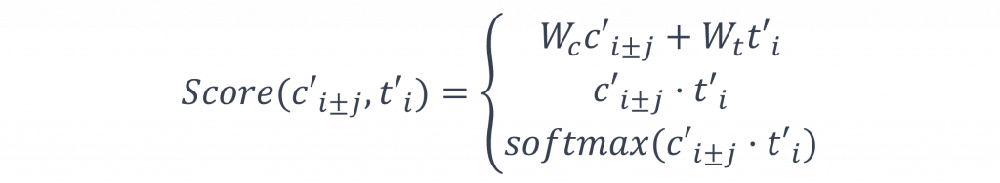
我相信你學習了關於注意力機制的算法後，應能理解上述這三個公式在Pytorch中的實現方式，然而為了讓你有更深入的理解，我將通過以下程式碼詳細介紹如何構建這些公式，程式碼中的return對應的是整個詞彙表中的機率，而標籤為1代表該詞彙存在於上下文中反之則為0，例如當標籤是[0, 1, 1]，輸出可能為[0, 0.8, 0.4]，如此一來就可以透過損失函數計算損失了。
(1) 加總方式
class SkipGram(nn.Module):
def __init__(self, vocab_size, embed_size):
super().__init__()
self.emb_in = nn.Embedding(vocab_size, embed_size)
self.emb_out = nn.Embedding(vocab_size, embed_size)
self.in = nn.Linear(embed_size, output)
self.out = nn.Linear(embed_size, output)
def forward(self, target, context)
in_embeds = self.in_embedding(target)
out_embeds = self.out_embedding(context)
return self.in(in_embeds) + self.out(out_embeds)
(2) 相乘方式
class SkipGram(nn.Module):
def __init__(self, vocab_size, embed_size):
super().__init__()
self.emb_in = nn.Embedding(vocab_size, embed_size)
self.emb_out = nn.Embedding(vocab_size, embed_size)
def forward(self, target, context)
in_embeds = self.in_embedding(target)
out_embeds = self.out_embedding(context)
return torch.matmul(in_embeds, out_embeds.t())
(3) 機率計算方式
class SkipGram(nn.Module):
def __init__(self, vocab_size, embed_size):
super().__init__()
self.emb_in = nn.Embedding(vocab_size, embed_size)
self.emb_out = nn.Embedding(vocab_size, embed_size)
def forward(self, target, context)
in_embeds = self.in_embedding(target)
out_embeds = self.out_embedding(context)
matmul_emb = torch.matmul(in_embeds, out_embeds.t())
return F.softmax(matmul_emb, dim = 1)
透過上述的方法，我們就能讓這些文字學習到目標文字周遭的關聯性。
CBOW(Continuous Bag of Words)

CBOW(Continuous Bag of Words)和Skip-gram是相反的方法，CBOW是基於上下文來預測目標詞彙，換句話說，Skip-gram是通過對每個上下文t(i)進行規划以導出c(i±j)的機率，而CBOW則是由c(i±j)反推出t(i)的機率，因此對於每個機率我們可以如此表示:

與Skip-gram不同的是因Skip-gram需要從t(i)中比對c(i±j)的機率，所以需要將兩者訊息拼接後計算出最後的機率，但CBOW的作法則相反因為我們只需要取得c(i±j)整體的語義資訊即可作為score()的計算公式，這邊我也簡單的舉出三種作法。

同樣的我們將以上的結果透過Pytorch將其實現出來，已加深你對該公式的印象。
(1) 加總方式
class CBOWModel(nn.Module):
def __init__(self, vocab_size, embedding_dim):
super().__init__()
self.embeddings = nn.Embedding(vocab_size, embedding_dim)
self.linear = nn.Linear(embedding_dim, vocab_size)
def forward(self, context):
embedded = self.embeddings(context)
summed = torch.sum(embedded, dim=1)
output = self.linear(summed)
return output
(2) 平均方式
class CBOWModel(nn.Module):
def __init__(self, vocab_size, embedding_dim):
super().__init__()
self.embeddings = nn.Embedding(vocab_size, embedding_dim)
self.linear = nn.Linear(embedding_dim, vocab_size)
def forward(self, context):
embedded = self.embeddings(context)
embedded_avg = torch.mean(embedded, dim=1)
output = self.linear(embedded_avg)
return output
(3) 機率計算方式
class CBOWModel(nn.Module):
def __init__(self, vocab_size, embedding_dim, context_size):
super().__init__()
self.embeddings = nn.Embedding(vocab_size, embedding_dim)
self.linear = nn.Linear(embedding_dim, vocab_size)
self.context_size = context_size
def forward(self, context):
embedded = self.embeddings(context)
embedded_avg = embedded.mean(dim=1)
output = self.linear(embedded_avg)
return F.softmax(output, dim=1)
這兩種方法各有其優劣如word2vec的作者Mikolov所述，Skip-gram能有效處理較少數量的數據，並且能更好地表達罕見的詞語。然而CBOW的計算速度卻更迅速，並且對於頻繁出現的詞語具有更佳的表達能力。
小提示:
Skip-gram的方法由於是基於少數推理大部分的思考方式，因此輸入的特徵訊息相對較少，相反地CBOW則是從大量資訊推理細節，因此它需要的輸入訊息相對較多，這也使得CBOW可以更好地獲得並理解文字周遭的情境訊息
而模型相較於現今的預訓練模型相比擁有較為簡單的結構，這是因為該模型出自2013年，當時的電腦設備並不如現今強大，因此我們現在仍有訓練出Word2Vec的可能性，而使用這種類型的預訓練模型時，我們主要會將其詞嵌入向量，取代我們自身的詞嵌入層，並對模型進行微調訓練，已取得一個更好的結果。
不過Word2Vec在句子中忽視了詞彙的順序信息，僅依據詞彙在文本語料庫中的共現頻率來學習詞向量，這樣的方式使得所有詞彙被視為具有相同的語義，導致在處理多意詞的效果上相較於時間序列模型表現較差，因此這也使後續的人針對這些問題對Word2Vec模型進行改良。
後話
今天我主要講解了Word2Vec這個詞嵌入預訓練模型，而在這次的主題中我將主要闡述三種不同的詞嵌入預訓練模型，並在最後的部分透過實際任務，比較這三種模型的效能。因此內容將會分為（上）、（中）、（下）、（末）四個環節，其中（末）的章節中將會是一系列的程式學習環節，明天我將會告訴你另一個詞嵌入預訓練模型GloVe的特性與原理。
那麼我們明天再見！
內容中的程式碼都能從我的GitHub上取得:
https://github.com/AUSTIN2526/iThome2023-learn-NLP-in-30-days
Day 15｜【Day 15】解析詞嵌入預訓練模型的奧秘(中)-全域統計的重要性GloVe技術解析
- 原文：https://ithelp.ithome.com.tw/articles/10331153
- 發佈時間：2023-09-30 19:49:08
前言
我們昨天提到，Word2Vec在分析句子時忽視了詞彙的順序信息，這是因為它並未考慮到整體詞彙的訊息而僅集中於局部，並且我們在講解Seq2Seq+Attention的階段，也曾經提到這種問題。
你可能會問為什麼這些方式都沒有考慮這些問題呢？其實原因很簡單，通常只考慮局部解的方法就能創造出大多數的有效演算法，然而全域解的產生往往是在優化這些局部解的基礎上得出的，所以今天我將會介紹優化Word2Vec的預訓練模型GloVe。
Glove介紹與實踐共現矩陣(Co-occurrence Matrix)的建構- Glove損失函數的建構過程
Glove
Glove（Global Vectors for Word Representation）是由史丹佛大學的研究團隊開發的詞嵌入技術，它透過統計大規模文本語料庫中詞彙之間的共現關係來學習詞嵌入層的權重，它的建立思想源自源我們先前所提及的Word2Vec還有將文件詞項矩陣(Document-term matrix)的SVD分解法，透過將這兩種方式進行結合與改良，使其能提升捕獲語義關係的能力，Glove的主要工作階段可以分為兩部份：共現矩陣的建立以及最佳化目標，接下來我將為你詳細介紹這兩項工作階段的原理。
小提示:
文件詞項矩陣是一種根據詞彙的出現頻率與詞彙的逆向檔案頻率（TF-IDF）所產生的矩陣，該方法透過將詞彙與其逆向檔案頻率進行計算從而得出詞彙的加權指數，而對其進行SVD分解的主要目的是將文件詞項矩陣進行降維處理，已提取區該矩陣中的詞彙特徵，該方法也是一種全局特徵的矩陣分解方法
共現矩陣的建立
在我們昨天探討t(i)與t(j)兩個字之間的關係時，是通過統計兩者附近相關訊息的方式進行的，然而正如我們昨日所提，這種方法難以解決一字多義的問題。因此GloVe依此進行了一些改良，它將數據輸入的計算不再依賴於單個詞彙，而是依賴於t(i)與t(j)的共現矩陣，使其更有助於考慮全域特徵，因此在第一步我們需要進行將詞換轉換成共現矩陣的動作，其詳細方式如下方的程式碼所示:
import numpy as np
# 1. 建立詞彙表
corpus = ["I like to play soccer", "Soccer is a fun sport", "I enjoy playing soccer"]
words = ' '.join(corpus).split()
vocab = list(set(words))
# 2. 初始化共現矩陣
co_occurrence_matrix = np.zeros((len(vocab), len(vocab)))
# 3. 定義前後窗口
window_size = 2
# 4. 計算數值並更新共現矩陣
for sentence in corpus:
tokens = sentence.split()
for i in range(len(tokens)):
for j in range(max(0, i - window_size), min(len(tokens), i + window_size + 1)):
if i != j:
word_i, word_j = tokens[i], tokens[j]
if word_i in vocab and word_j in vocab:
index_i, index_j = vocab.index(word_i), vocab.index(word_j)
co_occurrence_matrix[index_i][index_j] += 1
print(co_occurrence_matrix)
在上述程式碼中我們首先遍覽所有詞彙，並設定一個window_size用於記錄該詞彙前後文的出現次數，接下來透過這種方式統計不斷的加總結果並紀錄到共現矩陣中，當我們完成共現矩陣的建立時，就能夠找到第i個詞彙與第j個詞彙的共現次數。
最佳化目標
在優化目標的過程中，該模型採用了一種全新的損失函數，具體操作方法是隨機抽取一個詞彙樣本k，並計算它和目標詞彙t(i)以及t(j)的關聯。

出自於:GloVe論文
我們以圖片中的solid(堅硬的)、gas(氣體)、water(水)及fashion(時尚)為例，分析它們與ice(冰)、steam(蒸氣)的詞頻關係，而我們能發現若詞彙k的關聯性數值與目標詞彙t(i)和t(j)數值較高，那麼該詞的則能作為第三方指標進行評估。
基於這原因我們可以計算P(k|t(i))與P(k|t(j))的比值，如果這比值接近於1，則代表詞彙k與t(i)和t(j)有正關聯或沒有關聯;反之如果比值遠超過1，則k可能與其中一個目標詞彙有較強的相關性，因此在進行模型訓練時，我們可以使用以下公式來表示這些文字的權重。
不過在上述的步驟中這些權重都是由k決定的，並且該方式無法在目標詞彙t(i)與t(j)之間形成明顯的線性關係，而一個有效的詞嵌入向量應當讓相似度越高的詞彙向量越接近，而相似度較低的則相對疏遠，但這種方法只考慮了與k的關係，卻忽視了t(i)和t(j)之間的線性關係，因此為了在這兩者間形成線性關係，論文中採用了以下的公式：
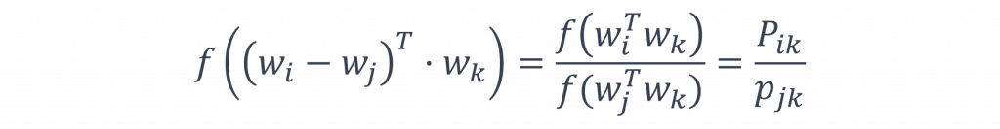
而在這公式中我們讓w(i)-w(j)使其能夠計算出兩者之間的距離，若w(i) > w(j)整體的向量空間會傾向於正軸移動，反之如果w(i) < w(j)則會向負軸移動，其中w(k)主要控制這兩種情況下目標詞彙間的移動距離，進而影響整體的向量空間
此外而在這個公式還有一個特別的地方就是它具有指數特性，因此基於這點我們可以如下表達該函數：

而在上述的公式中我們將會發現去掉log(X(i))後，該函式將會顯現出對稱性，其中log(X(i))因與k無關，因此我們可以將log(X(i))這一個定值轉換到w(i)的偏移量b(i)中，最後我們只需補上w(k)的對應偏移量b(k)，便可以完成整個損失函數的設計。
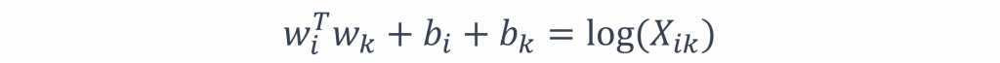
小提示:
log(X(i))能被轉入到偏移量b(i)中，這是由於X(i)和b(i)都是固定值。X(i)代表著我們的輸入，因此不會變動，其次b(i)是模型的偏移量，此值是模型的選擇條件，如同我們在經濟拮据的時候，我們會選擇較為價廉的餐廳，而b(i)就是模擬出這種拮据狀況的條件。
那麼在程式中該怎麼設計呢?在這邊我幫你把整個GloVe的模型用Pytorch重現出來了，我們可以看到以下的程式結果
class GloVe(nn.Module):
def __init__(self, vocab_size, embedding_dim):
super().__init__()
self.embeddings = nn.Embedding(vocab_size, embedding_dim)
self.bias_target = nn.Embedding(vocab_size, 1)
self.bias_context = nn.Embedding(vocab_size, 1)
def forward(self, target, context):
embed_target = self.embeddings(target)
embed_context = self.embeddings(context)
bias_target = self.bias_target(target).squeeze()
bias_context = self.bias_context(context).squeeze()
dot_product = torch.sum(embed_target * embed_context, dim=1)
log_co_occurrences = torch.log(co_occurrence_matrix[target, context])
loss = torch.mean((dot_product + bias_target + bias_context - log_co_occurrences))
return loss
co_occurrence_matrix = torch.LongTensor([[0, 0, 1, 0, 1],
[0, 0, 0, 1, 0],
[1, 0, 0, 1, 1],
[0, 1, 1, 0, 0],
[1, 0, 1, 0, 0]])
vocab_size = co_occurrence_matrix.shape[0]
model = GloVe(vocab_size, embedding_dim)
target, context = np.where(co_occurrence_matrix > 0)
model(target, context)
在以上程式中，我們使用self.embeddings來表示w(i)和w(k)，這樣做的原因是我們向模型提供的是一個共現矩陣，至於該模型的偏移量b(i)和b(k)，我們分別使用了bias_target和bias_context來表示，最後我們透過sum()來將將i和k向量的信息重新整合，這時就能夠透過GloVe的損失函數進行計算，使其能夠達到最佳化目標值。
後話
從程式設計的角度來看，GloVe所做的事情其實非常簡單，就是將輸入變成了共現矩陣，但也因為這樣我們必須考慮不同的損失函數計算方式，為此GloVe利用了第三個詞彙k來調整共現矩陣的資料分布，由此兩點疊加使能考慮到全面的訊息，不過這種方法有當然也有缺點，就是無法理解資料的詞性，所以我將在明天介紹另一種詞嵌入的預訓練模型，以理解文字中的詞性。
那麼我們明天再見！
內容中的程式碼都能從我的GitHub上取得:
https://github.com/AUSTIN2526/iThome2023-learn-NLP-in-30-days
Day 16｜【Day 16】解析詞嵌入預訓練模型的奧秘(下)-fastText中Subword建立的重要性
- 原文：https://ithelp.ithome.com.tw/articles/10332218
- 發佈時間：2023-10-01 21:13:03
前言
今天我們將結束對詞嵌入預訓練模型理論的討論，在前面的幾天中你可能會發現範例程式碼中，有些部分和公式有所出入，這是因為這些詞嵌入預訓練模型原本並非「深度學習」模型，而是屬於「機器學習」的範疇，並且最一開始是採用非監督式學習(Unsupervised Learning)來進行任務，也就是在無標籤的情況下進行學習。不過這些技術已被廣泛運用於「深度學習」的詞嵌入層中，因此我採取了一些方法將其轉換成深度學習模型。
那為何要這樣做呢？因為我們可以運用這些已經被訓練過的詞嵌入預訓練模型，並通過時間序列模型來更全面地調整這些文字的權重。而今天我們將會學習這些詞嵌入預訓練模型的最後一項重要技術fastText，今天的學習重點如下:
- 理解
子詞（Subword）的建立方式 - 理解
子詞（Subword）的向量合併方法 - 學習
層次Softmax（Hierarchical Softmax）的原理
fastText
相較於我們前幾天所講解的兩種詞嵌入預訓練模型，FastText的效能表現出類拔萃，它是基於Word2Vec中的CBOW方法進行變化的方法，使其不僅考慮每個字的上下文訊息，還能分析詞彙內部的子詞（Subword）訊息，因為這樣的設計FastText能夠理解並處理詞彙中的詞綴，對於處理稀有詞彙或罕見詞彙也有極其出色的表現，所以這項技術非常適合處理特定領域的文本或高度專業化的任務，而它的主要技術特點包括了子詞嵌入（Subword Embeddings）和層次Softmax（Hierarchical Softmax）。
子詞嵌入（Subword Embeddings）
在Word2Vec與GloVe的模型中，我們都是透過滑動一個視窗來找尋文字的前後詞彙，這種動作的專有名詞叫做N-Gram，它這是語言模型的一種演算法，其基本概念是按照文字內容的位元組順序進行大小為N的滑動視窗操作，最終生成長度為N的位元組片段序列。
而在模型fastText中就會先對每一個詞彙進行N-gram的切割，然後將其放入到詞嵌入向量空間中，我們可以先看到以下的簡易程式碼:
def create_subwords(word, min_length=3):
subwords = []
length = len(word)
for start in range(length):
for end in range(start + min_length, length + 1):
subword = word[start:end]
subwords.append(subword)
subwords[0] = "<" + subwords[0]
subwords[-1]= subwords[-1]+ ">"
return subwords
word = "apple"
subwords = create_subwords(word)
print(subwords)
#----------------輸出----------------
['<app', 'appl', 'apple', 'ppl', 'pple', 'ple>']
在上述的程式碼中，我們可以看到<代表文字的開頭，而>代表文字的結尾，而在fastText模型中apple這個詞彙的向量表達就是這六個詞彙向量的整合（我們可以透過torch.mean來整合向量訊息），當然在實際模型運作中，詞彙的切割方式可能會更加繁複，這裡我們只是提供一個簡化的範例程式。
層次Softmax（Hierarchical Softmax）
我們先前所使用的Softmax需要透過不斷的迭代計算出每一個結果的機率，導致在計算效率上極度緩慢，其時間複雜度達到O(N)，然而在fastText中，它選擇使用層次Softmax（Hierarchical Softmax）的方式來將時間複雜度降至O(logN)，而能讓它降低複雜度的方法就是透過霍夫曼樹（Huffman Tree）來找出每個解的最短路徑，現在讓我們來看看這種方式的具體操作。

假設我們有一個向量z，包含四個類別(葉節點)N，而每一個類別都有其對應的權重資訊。

接下來我們將運用霍夫曼樹來建立一個二元樹結構，在此過程中會將兩個最小的葉節點N合併成一個新的內部節點，而這個新節點的權重將等於原先兩個葉節點的權重相加。
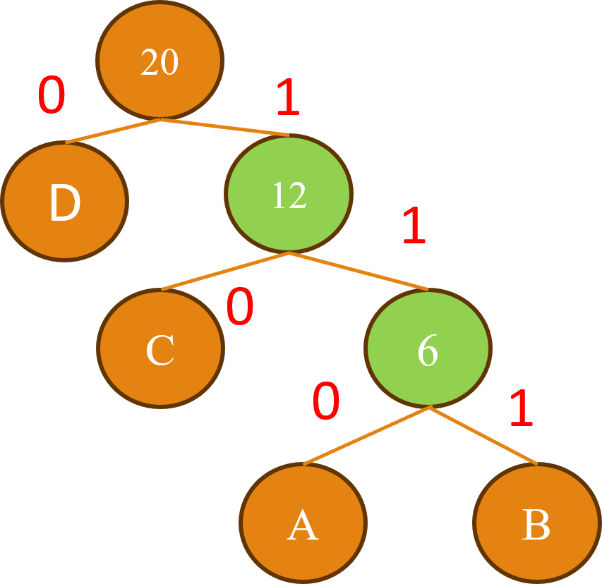
接下來不斷的重複這個合併的過程直到所有節點都被合併完畢，當樹建立完畢後我們將右節點編號作為1，左節點編號作為0，藉此建立了一個霍夫曼樹的結構。
而我們對於層次Softmax需要計算從根節點到每個葉節點的路徑機率，當計算到達葉節點的機率時，就代表得出了一個特定的類別，我們可以使用以下公式來進行計算：

在這個公式中我們首先將向量z與每個內部節點的權重W(i)進行內積運算，然後將結果通過Sigmoid函數σ，來將其轉換為範圍在0~1之間的機率值，根據這個機率值，我們便可以決定是選擇左子節點或是右子節點，而我們會持續這樣的操作，直到到達葉節點為止，最終則會輸出該葉節點所對應的類別機率。
這也就是層次Softmax的運作原理，簡單來說它就是透過利用霍夫曼樹的結構，來降低計算時間的複雜度，以簡化多類別分類的計算過程，以下是該方法程式碼實作的實際結果：
class HierarchicalSoftmax(nn.Module):
def __init__(self, input_size, num_classes):
super(HierarchicalSoftmax, self).__init__()
self.num_classes = num_classes
self.tree = self.build_tree(input_size)
def build_tree(self, input_size):
tree = nn.ModuleList()
for i in range(self.num_classes):
tree.append(nn.Sequential(
nn.Linear(input_size, 1),
nn.Sigmoid(),
))
return tree
def forward(self, x):
outputs = []
for i in range(self.num_classes):
output = self.tree[i](x)
outputs.append(output)
return torch.cat(outputs, dim=1)
在上述程式碼中，因建立一個葉節點需要知道模型的輸出大小，但我們不確定模型的輸出大小，因此我們可以使用ModuleList()來動態建立葉節點，而整體計算過程相單簡單，我們只需分別針對各類別使用不同的σ(W(i)z+b)進行計算，並將計算結果存入outputs串列中，最後將這些串列結合，就能代表每個葉節點的機率。
後話
你是否發現FastText的算法看起來比其他兩種更簡單一些呢？這是因為FastText的出現時間要晚於Word2Vec和GloVe，（分別是在2016年、2013年及2014年），較晚的發展給FastText帶來了一個優勢，就是可以直接以深度學習的角度來進行計算，因此與基於機器學習的Word2Vec和GloVe相比它的算法公式更為精簡，如果你想深入瞭解如何簡化Word2Vec和GloVe的公式，你可以參考我過去寫的程式碼，那裡有詳細地實現了用深度學習方法簡化複雜機器學習公式的過程，明天我將正式比較這三種模型的效能差異。
那麼我們明天再見！
內容中的程式碼都能從我的GitHub上取得:
https://github.com/AUSTIN2526/iThome2023-learn-NLP-in-30-days
Day 17｜【Day 17】解析詞嵌入預訓練模型的奧秘(終)-利用預先訓練的詞嵌入來保護隱私
- 原文：https://ithelp.ithome.com.tw/articles/10332582
前言
首先我要為你們先打好預防針，因為今天的程式碼量非常龐大，這次我們將會一次性地處理Word2Vec、FastText、GloVe各模型的文字前處理方式，並且今天進行對文本資料的去識別化(De-identification)的動作，在該動作中我們需學習以下的知識。
去識別化(De-identification)的程式建構方式B-I-O標籤理解與使用- 預訓練詞嵌入權重微調與載入
去識別化(De-identification)
去識別化（De-identification）是一種技術，主要用來去除文章中可能會識別出個人身份的資訊，此技術的目的在於，確保資料在分享或分析時，不會被聯想到特定的組織、人名、或者地址等資訊，這樣的過程可以保護資料主體的隱私權，讓研究、分析和數據工作能在不洩露個人身份的情況下進行。這種技術通常會使用的方法，叫做B-I-O標籤。這種方案將文本序列中的每一個詞語都劃分為三個類別：B（開始）、I（內部）、O（其他），B標籤一般用於標示實體的開始，I標籤用於接續該實體的部分，而完全不相關的部分則會分類為O。而今天我們將會使用CoNLL-2003這一個去識別化資料集來進行比對，我們先來看看以下步驟:
【STEP 1】載入資料集
當我們下載CoNLL-2003這一個資料後應該會有train.txt、valid.txt、test.txt這三個資料集，而每一份檔案應該都會跟下述格式相似:
SOCCER NN B-NP O
- : O O
JAPAN NNP B-NP B-LOC
GET VB B-VP O
LUCKY NNP B-NP O
WIN NNP I-NP O
, , O O
CHINA NNP B-NP B-PER
IN IN B-PP O
SURPRISE DT B-NP O
DEFEAT NN I-NP O
首先讓我們慢慢解析這些資料的格式，在這份資料集的首行SOCCER NN B-NP O，我們可以看到註記了一個詞彙SOCCER，而在該詞彙後方的部分則表示該詞彙相關的實體註記，例如:名詞 (NN) 、名詞片語 (B-NP)，其中O 代表這並非一個命名實體。
而在這次的程式實作中，我們需要的是最後一部分的標記，舉例來說第三行的JAPAN NNP B-NP B-LOC，我們只需要JAPAN作為輸入B-LOC(地點)作為標籤即可，所以在這裡我們可以撰寫一個簡單的函式將這些結果拆分開來。
def load_data(file_path):
sentences, labels = [], []
sentence, label = [], []
with open(file_path, 'r', encoding='utf-8') as file:
for line in file:
if not line.strip():
if sentence and label:
sentences.append(sentence)
labels.append(label)
sentence, label = [], []
else:
parts = line.strip().split()
sentence.append(parts[0])
label.append(parts[-1])
return sentences, labels
在該程式中我們首先將每個資料讀進來，並將每個標籤與對應的文字內容儲存起來，而該資料集的每一段句子都設定用\n來做分隔，因此我們需要建立兩個暫存串列sentence和label來處理這部分，這樣每當碰到\n符號時，我們就將這兩個暫存串列的內容分別放入到完整的串列sentences和labels中。
【STEP 2-1】資料前處理(非預訓練)
因為我們這次需比較4個模型的優劣，因此會用到2種不同的前處理架構，而第一種前處理架構是不經過預訓練模型的資料進行，在這裡同樣的可以使用我們的TorchText函式庫進行處理。這裡的處理方式與先前相同，直接使用Counter進行計數後，交付給vocab處理即可。
def torchText(all_sentences, all_labels, specials = ('<PAD>', '<UNK>')):
token_counter, label_counter = Counter(), Counter()
for sentence, labels in zip(all_sentences, all_labels):
token_counter.update(sentence)
label_counter.update(labels)
token_voc = vocab(token_counter, specials=specials)
token_voc.set_default_index(token_voc.get_stoi()['<UNK>'])
label_voc = vocab(label_counter)
return token_voc, label_voc
小提示:
在資料前處理的階段，我們通常會預先定義所有需要去識別化的標籤。因此對於
label_voc，我們並不需執行加入特殊符號的步驟，只需直接進行轉換就能達成我們的目標。
【STEP 2-2】資料前處理(Word2Vec、GloVe、fastText)
而在預訓練模型的過程中我們則需要完成兩項工作，第一點當然是首先是下載模型了，所以這時我們需要先安裝gensim這個函式庫，我們可以透過以下程式安裝它
pip install gensim
在這個函式庫中我們可以透過gensim.downloader.load()方法來取得大量的預訓練模型，而在這次的實作中，我們將使用word2vec-google-news-300、glove-wiki-gigaword-100以及fasttext-wiki-news-subwords-300這三個預訓練模型來進行訓練。當我們取得這些模型後，還需要進行從目標資料集中提取出詞彙的動作，所以我們需要撰寫一個函數，使其通過這個函數方便地切換這些預訓練模型的向量。
import gensim.downloader as api
def pre_trained_model(model_name, all_sentences, all_labels, specials = ('<PAD>', '<UNK>')):
# 下載模型
model = api.load(model_name)
# 通過上面的torchText函述進行詞彙的切割
token_voc, label_voc = torchText(all_sentences, all_labels, specials = specials)
# 取得<UNK>的索引
unk_idx = token_voc.get_stoi()['<UNK>']
# 建立串列與一個紀錄詞彙的字典
pretrained_voc, word2vec_voc = [], {}
for word in token_voc.get_stoi(): # 取得所有詞彙
idx = model.key_to_index.get(word, unk_idx) # 當無法轉換時返回<unk>
if idx != unk_idx: # 不加入無法轉換的詞嵌入向量
pretrained_voc.append(model[idx])
word2vec_voc.update({word:1})
word2vec_voc = vocab(word2vec_voc, specials=specials) # 更新詞彙表
word2vec_voc.set_default_index(word2vec_voc.get_stoi()['<UNK>'])
pretrained_emb = torch.tensor(pretrained_voc) # 建立新詞嵌入向量
pretrained_emb = torch.cat((torch.zeros(len(specials), pretrained_emb.shape[1]), pretrained_emb))
return word2vec_voc, label_voc, pretrained_emb
然而在程式中我們還需要執行新增向量的操作，這是因為我們在這些預訓練模型中並未使用到特殊標籤，所以在取得該詞彙的資料時，還需對其進行向量的組合，在程式裡我們先通過了torch.zeros創建出一個與specials長度相等的向量空間，接下來再使用torch.cat將此向量與已創建完畢的pretrained_emb向量進行拼接，使其向量能夠與我們的輸入長度相等。
小提示:
為了方便觀看，在這裡並未將fastText的輸入轉換成subword的格式，如果你需要找到轉換的方式可以參閱昨天的【Day 16】解析詞嵌入預訓練模型的奧秘(下)-fastText中Subword建立的重要性，或是直接到我的GitHub中查看程式碼，已找到最正確的切割方式。
【STEP 3】轉換數字並取得必備超參數
我們在建立完這些預訓練詞向量與詞彙表之後，還需將這些詞轉換成數字，這部分我們應該都非常熟悉了，只需要用lookup_indices就能實現。
def tokens2nums(sentences, labels, token_voc, label_voc):
token_nums, label_nums = [], []
for word, label in zip(sentences, labels):
token_num = token_voc.lookup_indices(word)
label_num = label_voc.lookup_indices(label)
token_nums.append(torch.tensor(token_num))
label_nums.append(torch.tensor(label_num))
return token_nums, label_nums
小提示:
我已將這步前的所有程式碼都整合成一個名為
Preprocessing.py的檔案，這是因為由於我們需要訓練四種模型，這些程式碼將會被多次呼叫，所以將其整合到單一檔案中不僅可以增加視覺美觀性，也能提高重複利用性。
在這個步驟中，我們還需要獲取一些超參數，以便作為模型後續的輸入參數。
PAD_IDX = token_voc.get_stoi()['<PAD>']
O_IDX = label_voc.get_stoi()['O']
INPUT_DIM = len(token_voc)
OUTPUT_DIM = len(label_voc)
embedding_dim = 300
在這裡我們必須獲取兩個填充索引值PAD_IDX及O_IDX，前者主要用來設定詞嵌入層的參數，而後者則是在去識別化時的重要參數，而這項餐數是因為O這個標籤在資料集中的數量最多，因此在評估模型的準確率時，這些O的出現常會對我們的結果造成影響，所以我們需要在計算時忽略這些結果。
【STEP 4】建立Dataset與Dataloader
在這個步驟裡，因資料長度較短所以我們同樣會先使用pad_sequence來進行序列填充的動作。
from torch.nn.utils.rnn import pad_sequence
x_train, y_train = pad_sequence(x_train, padding_value=PAD_IDX, batch_first=True), \
pad_sequence(y_train, padding_value=PAD_IDX, batch_first=True)
x_valid, y_valid = pad_sequence(x_valid, padding_value=PAD_IDX, batch_first=True), \
pad_sequence(y_valid, padding_value=PAD_IDX, batch_first=True)
接下來將這些訓練與驗證資料集一同放入到pytorch中的Dataset與DataLoader中，這樣子我們就可以開始訓練模型了
from torch.utils.data import Dataset, DataLoader
import torch
class NERDataset(Dataset):
def __init__(self, x, y):
self.x = x
self.y = y
def __getitem__(self, index):
return self.x[index], self.y[index]
def __len__(self):
return len(self.x)
trainset = NERDataset(x_train, y_train)
validset = NERDataset(x_valid, y_valid)
train_loader = DataLoader(trainset, batch_size = 1024, shuffle = True, num_workers = 0, pin_memory = True)
valid_loader = DataLoader(validset, batch_size = 1024, shuffle = True, num_workers = 0, pin_memory = True)
device = torch.device('cuda' if torch.cuda.is_available() else 'cpu')
【STEP 5】建立模型與導入預訓練權重
在這個步驟中，我們使用了一個LSTM模型來實現去識別化的功能，不過不同於先前的操作，這次不再只使用模型中的最後一個隱狀態進行訓練，而是運用了整個LSTM的隱狀態，而也因為這樣的改動，所以在模型後續的訓練過程中，還需要做出一些調整才能夠正常運作。
import torch.nn as nn
import torch.optim as optim
class NERModel(nn.Module):
def __init__(self, vocab_size, embedding_dim, hidden_dim, tagset_size):
super(NERModel, self).__init__()
self.embedding = nn.Embedding(vocab_size, embedding_dim, padding_idx = PAD_IDX)
self.lstm = nn.LSTM(embedding_dim, hidden_dim, batch_first=True, bidirectional=True)
self.hidden2tag = nn.Linear(hidden_dim * 2, tagset_size)
def forward(self, sentence):
embeds = self.embedding(sentence)
lstm_out, _ = self.lstm(embeds)
tag_space = self.hidden2tag(lstm_out)
return tag_space
hidden_dim = 100
model = NERModel(INPUT_DIM, embedding_dim, hidden_dim, OUTPUT_DIM).to(device)
try:
model.embedding.weight.data.copy_(pretrained_emb)
except:
pass
optimizer = optim.Adam(model.parameters(), lr=1e-3)
criterion = nn.CrossEntropyLoss()
而在這時我們也可以將這些預訓練的詞嵌入權重通通導入到該模型中了。
【STEP 6】模型訓練的方式
在模型訓練時，我們需要處理兩件重要事情，首先由於我把所有的隱狀態都輸出了，這導致輸出維度多出了一個維度，為解決此問題，我們需要採用view方法將其攤平進行計算，當然你也可以選擇其他的計算方式，只需要每次攤平後的序保持相同就可以了。
from sklearn.metrics import f1_score
def train(epoch):
train_loss, train_acc = 0, 0
train_pbar = tqdm(train_loader, position=0, leave=True)
model.train()
all_preds, all_true = [], []
for input_datas in train_pbar:
features, labels = [i.to(device) for i in input_datas]
optimizer.zero_grad()
outputs = model(features)
loss = criterion(outputs.view(-1, OUTPUT_DIM), labels.view(-1))
loss.backward()
optimizer.step()
train_pbar.set_description(f'Train Epoch {epoch}')
train_pbar.set_postfix({'loss':f'{loss:.3f}'})
_, preds = torch.max(outputs, dim = 2)
train_loss += loss.item() # 模型總損失
all_preds.extend(preds.cpu().numpy())
all_true.extend(labels.cpu().numpy())
all_true = np.concatenate(all_true, axis=0)
all_preds = np.concatenate(all_preds, axis=0)
idx = all_true != O_IDX
return f1_score(all_true[idx], all_preds[idx], average = 'micro'), train_acc/len(trainset)
再來就是有關於Loss值這項指標的問題，因在去識別化的任務中的輸出標籤中出現的太多的O，所以在這部分我們很難去計算出它的實際Loss值，當然我們也能夠直接忽略到O的Loss值給清除掉，但這樣做的結果可能就會導致模型的調整時發生錯誤，此在這裡我們需要使用到一個全新的指標F1-Score，該公式的計算方式如下

該公式中主要有兩個部分需要解釋，第一個是精確度（Precision），它表示實際為陽性的樣本中被正確預測為陽性的比例，另一個是召回率（Recall），它代表的是所有陽性樣本中被正確預測為陽性的比例。
讓我們以一個例子來解釋這兩者之間的區別，精確度可以用來評估門禁系統，因為該指標強調了不能誤放非法人員，而召回率則適合用在逃犯檢測系統中，該指標代表即使誤抓了許多人，也不能放過任何一名逃犯，不過這兩種評估方式都可能偏極端，因此有了F1-Score，它是一種在兩者之間取得平衡的算法
因此我們在進行去識別化的任務時，時常使用這個指標，而對於該算法，我們不需要自己手動進行計算，僅需要使用sklearn中的函式，就能輕易地求得該公式但是我們需要特別留意的是，在去識別化的任務中應該要忽略O_IDX，以免導致計算上的錯誤。
【STEP 6】模型訓練與比較
在這裡，我們依然使用原有的訓練程式進行訓練，但不同的是，我們將儲存指標的方式改為F1-Score，同時忽略了最後生成的Loss圖(因為無效)。
epochs = 10000 # 訓練次數
early_stopping = 10 # 模型訓練幾次沒進步就停止
stop_cnt = 0 # 計數模型是否有進步的計數器
model_path = 'model.ckpt' # 模型存放路徑
show_loss = False # 是否顯示訓練折線圖
best_f1 = 0 # 最佳的準確率
loss_record = {'train':[], 'valid':[]} # 訓練紀錄
for epoch in range(epochs):
train_f1, train_loss= train(epoch)
valid_f1, valid_loss = valid(epoch)
loss_record['train'].append(train_loss)
loss_record['valid'].append(valid_loss)
# 儲存最佳的模型權重
if best_f1 < valid_f1:
best_f1 = valid_f1
torch.save(model.state_dict(), model_path)
print(f'Saving Model With F1 {best_f1:.5f}')
stop_cnt = 0
else:
stop_cnt+=1
# Early stopping
if stop_cnt == early_stopping:
output = "Model can't improve, stop training"
print('-' * (len(output)+2))
print(f'|{output}|')
print('-' * (len(output)+2))
break
print(f'Train Loss: {train_loss:.5f} Train F1: {train_f1:.5f}', end='| ')
print(f'Valid Loss: {valid_loss:.5f} Valid F1: {valid_f1:.5f}', end='| ')
print(f'Best F1: {best_f1:.5f}', end ='\n\n')
if show_loss:
show_training_loss(loss_record)
當你執行這個程式時，你會注意到F1-Score幾乎都是0，而會發生這種情況其實是因為在訓練這些預訓練模型時，並未將去識別化這個因素考量進來，所以我們先在使用LSTM進行訓練時，其實就是在微調這些權重，這樣子我們將能夠讓該權重更適合我們的任務，現在我們來看一下表格中這些模型訓練出來的成果:
名稱 | LSTM | Word2Vec| GloVe| fastText
------------- | -------------
F1-score |0.69471|0.75022 |0.77032|0.83053|
在以上結果中，我們可以看到fastText的訓練結果在比較與其他三個模型後顯示了最佳的效能，這個優異的成果主要要歸功於subword的特性，因為在處理去識別化的過程中，我們經常會遇到像是HWSI-1246(ID)這類的資訊，而這些ID基本上是不可能被組成詞彙的，所以這些標籤並不會被Word2Vec和GloVe這兩個模型所建立，因此該部分將被轉換成<UNK>這一個特殊字元，所以這些模型都是通過前後文的關聯來推斷這個<unk>詞彙的出現時間來進行去識別化的動作。
而fastText與之不同的是，它會透過使用subword特性來將這些向量進行分割和重組，因此它不會出現太多的<UNK>字元，所以在最終的結果展示上，fastText模型表現得最為出色。
後話
我們可以從這項實驗中我們發現，導入預訓練模型的LSTM模型其效能可以大幅超越獨立訓練的結果，並且每一個模型的演進，都會比原先的模型再更好一些，因此我們更應著重學習這些模型的理論，這樣在遭遇問題時，才能熟練地修改模型中的演算法。然而還有一個我們要重視的預訓練模型ELMO，它的這項技術正是當今熱門模型的基礎，因此明天我將花些時間為大家詳細介紹ELMO這個預訓練模型。
那麼我們明天再見！
內容中的程式碼都能從我的GitHub上取得:
https://github.com/AUSTIN2526/iThome2023-learn-NLP-in-30-days
Day 18｜【Day 18】會根據上下文改變的詞嵌入向量 (上) - 預訓練模型ELMo震撼登場
- 原文：https://ithelp.ithome.com.tw/articles/10333583
- 發佈時間：2023-10-03 22:40:06
前言
我們之前提到的幾項技術都有其獨特的問題，例如word2vec常常會忽視詞彙的順序信息，而GLoVe則無法充分理解資料的詞性，至於時間序列模型則只能學習到下一個詞彙表示，不過在這些模型中還有一個相同的問提就是他們無法根據上下文調整詞嵌入向量，雖然他們能將相似語意的詞放在一起，但最終還是會偏向於特定向量，以GLoVe中的「Play」詞彙為例，該詞的向量會傾向於「運動」的語意。
而在理想的狀況應是根據上下文來動態的調整每個詞彙的向量位置，而這種概念也是最新的自然語言處理技術中的關鍵之一，因此我們今天的重點將會如下:
ELMo中的詞嵌入方式Contextualized Word Embedding(上下文詞嵌入)的理解- 模型中權重共享的對象
基於特徵(base-feature)與微調(fine-tine)的預訓練模型區別
ELMO（Embeddings from Language Models）

ELMO（Embeddings from Language Models）是一種利用雙向雙向LSTM來學習每個詞彙在特定上下文中的向量的方法，它與一般的雙向LSTM不同的是它的LSTM層具有權重共享的特性，並且每一個詞彙都自己的詞嵌入向量，因此每一個詞彙能夠根據它的上下文能計算出不同詞嵌入空間，現在我們來看看該模型的實現方式。
ELMo中的詞嵌入層
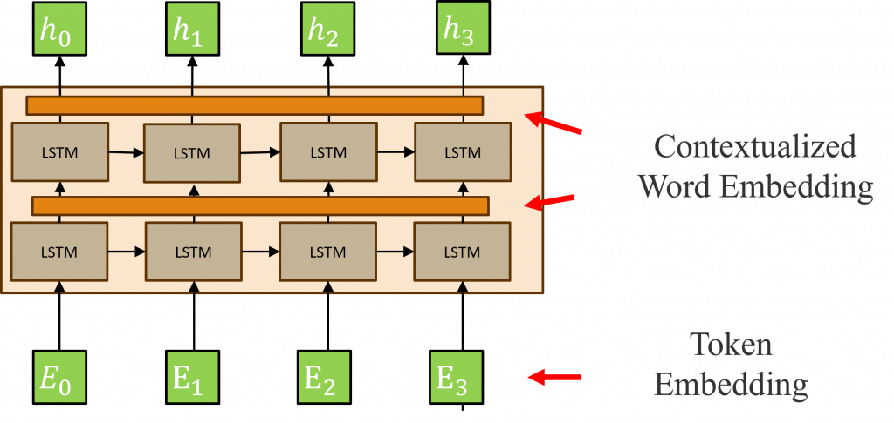
ELMo的詞嵌入與先前的詞嵌入層不同，它主要具備三個詞嵌入層以對應這些不同的特性，最底部的詞嵌入層被稱為Token Embedding(詞彙的詞向量)，它針對每一個詞彙產生出不同的詞嵌入向量。
第二、第三的詞嵌入層則是分別對應該詞彙經過第一與第二層LSTM計算出來的隱狀態的詞向量，在這兩層中主要學習的是每一個隱狀態所理解的上下文意義，也就是說ELMo的預訓練過程不僅學會單字的Token Embedding，還會學習到一個雙層雙向的LSTM網路結構，而這兩層的詞嵌入被稱為Contextualized Word Embedding(上下文詞嵌入)。
ELMo中的目標生成方式
由於ELMo的詞嵌入層是針對每個詞彙建構，因此在模型輸出時一個詞彙會有多個Contextualized Word Embedding，但這樣做會導致單個詞彙的表示變得更加豐富，因此ELMo的方法是將這些Contextualized Word Embedding進行加權總和以結合它們的訊息，其作法如下:
- 根據LSTM的層數n建立出參數
Wc(n) - 將每一層的
Contextualized Word Embedding與該層的Wc(n)進行計算 - 將
Token Embedding與每一層的Contextualized Word Embedding進行加總
對於一個雙層的ELMo模型，詳細的計算過程如下：首先我們將一個詞彙轉換成Token Embedding向量，然後將這個向量交給LSTM進行計算，這部分的操作與我們在【Day 6】深度神經網路該怎麼改變Embedding向量(下)-PyTorch訓練的策略和方法中的作法相同。在這一階段每一個文字都會產生一個相對應的隱狀態h(t)。
接下來在ELMo模型中，由於它採用的是雙向的LSTM模型，所以我們需要將正反LSTM計算出來的兩個相同時序的隱狀態h(t)合併再傳遞給詞嵌入層，而這個新生成的詞嵌入就稱為Contextualized Word Embedding。接著該Contextualized Word Embedding會與參數Wc(1)進行運算，然後將這個結果傳遞到下一層的LSTM中，並重複上述的過程。
直到在ELMo模型的最後一層時，我們會將Token Embedding與兩個Contextualized Word Embedding進行加總，以產生最終的輸出結果。
小提示:
每一個Contextualized Word Embedding都會學習到上一個階段中更抽象的特徵，因此若直接將Contextualized Word Embedding作為最後一個輸出結果，將會導致原始的訊息丟失，因此再加權總合階段時我們必須將Token Embedding的資訊加入回來，才不會導致模型無法收斂。
權重共享的對象
這種複雜的計算可能導致模型無法收斂，因此需要將部分權重需要進行共享，其中最需要共享的參數便是正反兩個LSTM層中的Contextualized Word Embedding與Token Embedding權重，其原因很簡單若Token Embedding的權重與Contextualized Word Embedding在進行權重加總時不同，則可能導致序列位置與詞彙相同，卻有不一樣的輸出涵義。
這種狀況就好像一個我們已知的文字（Token Embedding）被水打翻而變模糊（Contextualized Word Embedding），但我們想要知道這個字時卻因為左側人告知的文字（左側LSTM）與右側人告知的文字（右側不同）而不同，造成你還是不知道該文字到底是什麼，而這種狀況就會造成語意混亂的情形。
預訓練詞向量的使用方式
不過你有沒有想起我們所說的，ELMo其實只是一種詞嵌入的預訓練模型，因此我們應該只會使用到它的詞嵌入層，雖然上述的模型架構看起來非常完整，但該模型的作用只是為了培養出好的Contextualized Word Embedding而已，而這種預訓練模型其實就是一種基於特徵(Base-feature)的方式，不會完整將這個預訓練模型給予到自己的模型中，而是指使用部分的權重，這種方式這包括我們所介紹的Word2Vec、GloVe、fastText。
而將這些詞嵌入層進行後續訓練時作者們發現在所有層級中，ELMo的第一層Contextualized Word Embedding的效果最佳，尤其在找出代詞和解答這兩個任務上其表現更是突出。
後話
當我寫到這裡時才突然想到，我忘記在【Day 13】預訓練模型的強大之處? 我們要怎麼使用它?解說基於特徵的預訓練模型的概念了，因為這類模型的概念叫簡易，就是將已經訓練好的權重放入到自己的模型中，並且這種方式已經越來越少見了，所以我那天主要只解釋了微調方式的預訓練模型，所以我在今天將這方面的知識補充近來，不過剛好今天是基於特徵的預訓練模型的最後一個理論章節，這樣子應該會更讓你能記住這些基於特徵的模型概念，而在明天我將教導你如何使用這個ELMo模型。
那麼我們明天再見！
內容中的程式碼都能從我的GitHub上取得:
https://github.com/AUSTIN2526/iThome2023-learn-NLP-in-30-days
Day 19｜【Day 19】會根據上下文改變的詞嵌入向量 (下) - ELMo該如何使用與Embedding可視化
- 原文：https://ithelp.ithome.com.tw/articles/10334221
- 發佈時間：2023-10-04 23:47:32
前言
過去我們已經完成了情緒分析、文字生成、去識別化等等的NLP任務，這些任務分別代表分類、生成、及命名實體(NER) 這些也就是自然語言處理中的三大任務，基本上市面上的90%模型都是通過這三大任務完成的，但我們仍有一項任務未有詳細解釋，所以我計劃在介紹ELMo模型之後，將會馬上告訴你這個任務的詳細訓練方式。而在今天的目標中的詞向量使用方法與前幾天相似，所以不會在執行訓練的動作，所以在今天中主要舊視教會大家如何在Pytorch中使用到ELMo，並將其可視化。
- ELMo的下載方式
- ELMo的詞向量取得方式
- ELMo的詞向量可視化
ELMo的使用方式
今天的程式碼雖然只有短短幾行，但這裡有一點需要留意，由於ELMo所處的時代較為老舊所以大多函式庫並未支援，所以我們今天所使用的函式庫會先將GPU版本的Torch解除安裝，不過不會影響到我們今天的使用。
首先下載的就是ELMo這個模型，可以在vectors.nlpl.eu中找到該模型的json檔案與權重hdf5兩個檔案，該模型的使用方式如下程式碼所示:
# pip install allennlp
from allennlp.modules.elmo import Elmo, batch_to_ids
options_file = "options.json"
weight_file = "weights.hdf5"
elmo = Elmo(options_file, weight_file, 1, dropout=0)
sentence_lists = [['I', 'love', 'you', '.'], ['Sorry', ',', 'I', 'don', "'t", 'love', 'you', '.']]
character_ids = batch_to_ids(sentence_lists) # (2, 8, 50)
當我們載入模型後，我們可以將被斷詞的文本一次性地輸入到batch_to_ids()函數進行轉換，此時我們可以得到一個(2, 8, 50)大小的character_ids，其中，2代表輸入了兩句話，8代表輸入文本的最大長度，而50則代表該詞彙透過詞彙建立之Embedding的輸入形式。
在這兩個例句中:I Love You. 和 Sorry, I don 't love you，傳統的詞嵌入方式會將I、Love、You的詞嵌入都放在相同的維度，然而我們之前提到ELMo會根據上下文的關係來整合詞嵌入，因此為了驗證該模型的結果，我們將編寫一段詞嵌入可視化的程式碼。
但在進行此步驟之前，我們需要用PCA方法對ELMo的Embedding進行降維，因為其維度為1024，而不是我們之前設定的2維。
from sklearn.decomposition import PCA
import matplotlib.pyplot as plt
pca = PCA(n_components=2, random_state=2526)
v1 = tsen.fit_transform(embeddings[0].detach().numpy())
v2 = tsen.fit_transform(embeddings[1].detach().numpy())
all_vec = np.concatenate((v1,v2), axis = 0)
flattened_list = ['I', 'love', 'you', '.', 'None', 'None', 'None', 'None', 'Sorry', ',', 'I', 'don', "'t", 'love', 'you', '.']
接下來我們將以前寫的程式碼呼叫回來，在這一步中加入我們上述的文字向量和對應的文字。
def visualization(embedding_matrix, flattened_list):
# 提取降維後的坐標
x_coords = embedding_matrix[:, 0]
y_coords = embedding_matrix[:, 1]
# 繪製詞嵌入向量的散點圖
plt.figure(figsize=(10, 8))
plt.scatter(x_coords, y_coords)
# 標註散點
for i in range(len(embedding_matrix)):
plt.annotate(flattened_list[i], (x_coords[i], y_coords[i]))
plt.xlabel('Dimension 1')
plt.ylabel('Dimension 2')
plt.title('Visualization of Embedding Vectors')
plt.show()
visualization(all_vec, flattened_list)

在此我們可以觀察到，其中一個Love的向量更接近don't，另一個Love則更接近I，這種特性正是ELMo模型最重要的部分。
這時這些詞向量也就是我們在Word2Vec等章節中所需要的詞嵌入向量了，我們需要使用它時只需將這些向量拼接回來後方入到模型即可。
後話
我們今天學習了如何使用ELMo模型，同時將每個詞彙的結果可視化，不過你可能會發現這次的詞嵌入向量與先前相比，格式似乎有所差異，這種狀況導致在訓練ELMo模型時，讓我需要不斷地依據上下文轉換這些向量，並且這些轉換後的結果還要放入模型中進行運算並與時間序列模型的進一步計算結合，這將會使推理速度降低，因此我將在明天介紹你目前自然語言處理中最強的架構Transformer是如何解決這些問題的。
那麼我們明天再見！
內容中的程式碼都能從我的GitHub上取得:
https://github.com/AUSTIN2526/iThome2023-learn-NLP-in-30-days
Day 20｜【Day 20】萬物皆可Transformer(上)-Transformer中所使用的技巧解析
- 原文：https://ithelp.ithome.com.tw/articles/10334540
前言
昨天我們以精簡的內容來加深你對ELMo的理解，而內容簡短的原因除了其訓練方式與Word2Vec等相似之外，最主要的理由在於今天將介紹的內容極為重要，所以我希望你能將所有精力放在此次學習上，因這種語言模型在後續的發展中極具影響力，許多熱門的語言模型都是其的衍生的，包括當今最強的語言模型ChatGPT（更精確的說，是GPT-4）也使用這種架構，今天的學習重點如下:
Transformer架構與公式理解Self-Attention的實現方式- 自然語言中常看到的
Query、Key、Value之理解
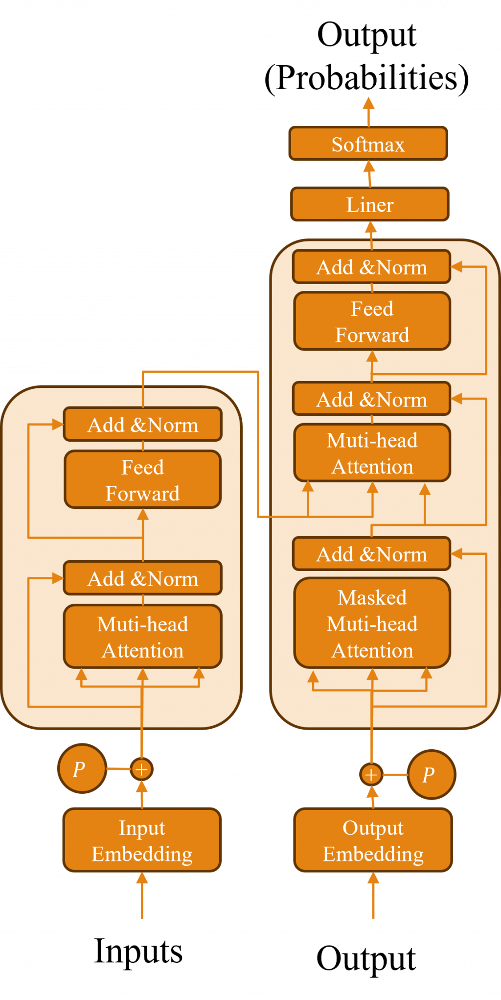
Transformer是一種衍生自Encoder-Decoder架構的變化方式，它於2017年最初出現在Attention Is All You Need（注意力機制就是你全部所需）的期刊論文中，它的設計理念具有革命性地影響了人工智慧領域，因為它不再依賴於傳統的時間序列模型，並且正如論文的名稱所述，這種架構能適用於音訊、文字、圖像等不同的場域，而這一點特性這都歸功於他所建立的Self-Attention（自注意力機制）概念，現在讓我們深度的解析該模型的架構吧。
小提示:
該架構需要具備Seq2Seq中的Attention知識，若有內容不清楚或不瞭解的，建議先看我在掌握文字翻譯的技術中所提到Attention理解與實作。
Positional Encoding

在Transformer中，由於其與時間序列模型模型不同，採取的是平行運算方式，所以對於每一個輸入的詞彙，該架構無法得知順序，因此我們需要在此步驟利用Positional Encoding對每個輸入進行編碼。讓我們先來看以下的公式:
其中dmodel是指詞嵌入層的維度，i則代表該詞向量的第i個維度，而POS則表示輸入詞彙的位置，而該公式這樣的設計主要基於sin()和cos()函數的周期性特性，因為這兩種函數特別適合表現循環性的特徵，由於這種方法能讓數值的最初的序列與最後的序列在性質上更接近，因此能夠解決因詞彙距離過遠而產生的稀疏問題，進一步使模型能夠更好地學習詞與詞之間的相對位置關係。
Self-Attention
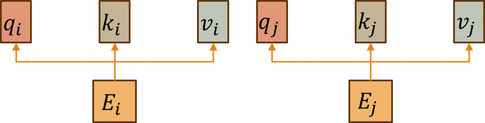
在我們開始介紹Transformer Encoder之前，必須先理解Self-Attention這個機制，不過先讓我們來回顧一下Attention的概念，該方式是透過注意力權重a(t)來計算出Enocder隱狀態h(t)與Decoder的隱狀態hd(t)，對於時間序模型能有最佳表現，而在這裡他將會跨足Encoder與Decoder兩個架構，因此在訊息上的結合就會比較困難。
這次所使用的Self-Attention被稱為「Self」，是因為其運算中使用的是文字內部的向量，讓我們來看看圖片中的k、q、v這三個參數，這三個向量是經過Positional Encoding計算過後，再與Wk、Wq、Wv三個權重進行的運算的新結果，而這三個新向量分別代表了該詞彙之後將進行的動作，我們先看到下圖中的簡易的例子。
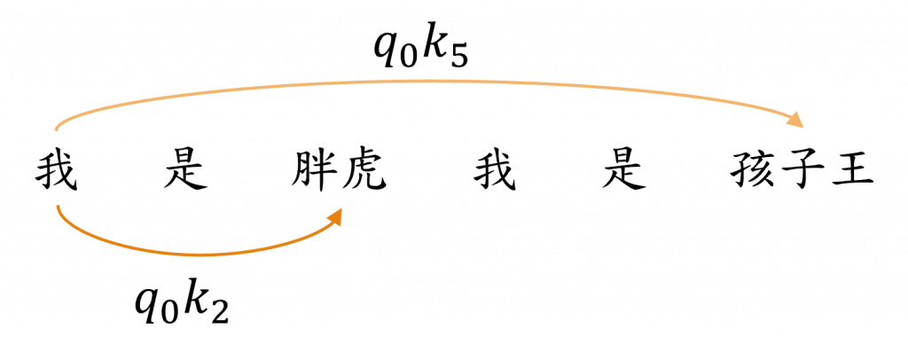
當我們進行尋找代詞的命名實體任務時，必須要留意代詞可能的特性，在LSTM任務中我們通常只會觀察到下一個詞彙的文字資料，因此這樣子可能會讓較遠的資料的注意力權重變得更低，而在Self-Attention中的做法，就是先把每一個詞彙q(我)向量，與其他剩餘詞彙的k(是)...k(胖虎)向量進行比對運算，接下來我們根據q(我)向量去決定哪一個k向量與該向量的關聯性最高，來計算出注意力權重a(t)，其詳細作法非常簡單直接將softmax(q·k)就能夠計算出該權重了。
而這樣做的目的是希望讓每個文字能動態地鎖定其應有的焦點，在我們圖片中透過這種方式找出了詞彙「我」與接下來的「胖虎」和「孩子王」的注意力連接強度(透過顏色深淺呈現)，這也代表著每個詞彙都會產生出需要的注意力對象，不過該方式還要考慮其他更多的因素，我們先來看到下面的公式:

可以發現在該公式中多出了除上√(𝑑(k))的動作，其原因是在q與k向量進行運算時，數值可能會變得過大，從而導致經過Softmax的輸出梯度可能會過小。
你可能會感到好奇，既然Transformer被設計來取代時間序列模型，那麼它是如何產生類似於時間序列模型的隱狀態h(t)的資料呢？在時間序列模型中我們輸出的資料即為該時序的隱狀態，因此當你察看上述的公式，會發現還多了一個與v相乘的部分，這個向量v的作用，就是呈現出該詞彙本身的特性，因此我們可以認為這個運算結果就是由向量v所算出的狀態。
Transformer Encoder
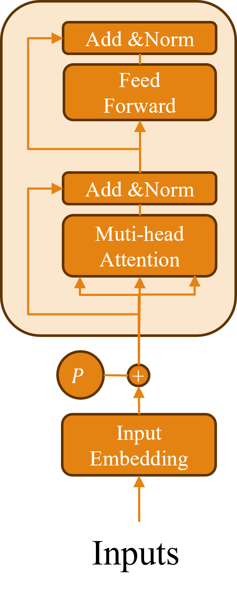
但在實際的Transformer中，是使用了一種名為Muti-Head Attention(多頭注意力機制)的技術，而這樣的目的是因為在Self-Attention中，每一組q、k向量都只會對同一個詞彙的語意有所注意，然而我們在ELMo的學習過程中，明白到每一個詞彙都應該被分割出多種語意，這樣才能得到更好的結果，因此我們在這裡的作法是在Self-Attention中加入更多組的k、q、v向量，使每一個詞彙能對應到不同的語意環境中。

該動作的執行方式與Self-Attention相同，只不過在計算出最後結果時，因為會對同一個時序的資料產生多個輸出b，因此我們需要將其轉換成一個完整的向量，在這裡我們只需要將此輸出b進行維度結合的動作，在與其權重Wb進行矩陣運算，這樣子就完成了Muti-Head Attention的計算方式。
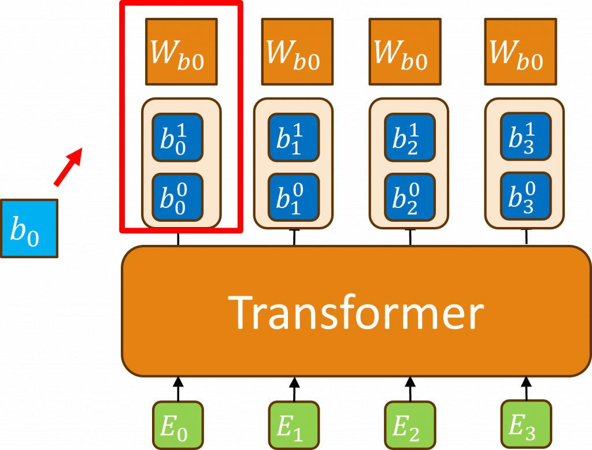
在Transformer的輸出結果中，還會增加了一層Layer Normalization，這個設計的目的是要減少Internal Covariate Shift(內部協變量偏移)的問題。
Internal Covariate Shift的發生，是因為在神經網路裡每一層的輸入分佈都會不斷的變化，這樣會導致訓練過程不穩定，而為了解決這個問題，我們需要一種方式來穩定每層中數值，而在Layer Normalization中就是通過輸入的x、均值E[x]與方差Var[x]來轉換每一層的輸出結果，其計算公式如下:
其中𝜖的用途主要是為了防止出現除以零的情況，因此其數值通常會設定得非常小，至於𝛾則是用來控制縮放輸出的幅度，而𝛽則是代表該層的偏移量，這樣子模型每一層的訊息會比較穩定，使其收斂效果更佳。
Transformer Decoder

在Transformer的Decoder中，多出了一個Masked Multi-head Attention(遮蔽式多頭注意力機制)的層，這層的目的出現是由於Transformer是使用平行運算的，但我們在Decoder中通常是採用Teacher Forcing的訓練方式，這時如果我們將完整的序列傳入，Transformer就會考量到尚未出現的字元，從而導致運算錯誤。
這裡讓我們先回憶一下Teacher Forcing的訓練方式，當我們在進行翻譯任務時，若Decoder的輸出的資料是法文的J'ai un chat <EOS>，而Decoder的輸入資料是<SOS> I have a cat，在這種情況下<SOS>這個序列輸入給Decoder後應該要生成J'ai這個詞彙，而<SOS> I生成un這個詞彙，以此類推直到出現<EOS>。

但在Transformer中，當我們輸出J'ai這個詞彙時，它會完整地將<SOS> I have a cat考慮在內，這可能導致在Decoder未完成訓練時就接收了過多的信息，使模型難以收斂，因此對於Decoder的第i個輸出，我們需要對i+1之後的文字位置進行Mask的操作，

換句話說，當生成'J'ai'這個詞彙時，Decoder的輸入會是<SOS> I have a cat和[1, 0, 0, 0, 0]運算後的結果，這一點就是Masked Multi-head Attention中新增的部分，其餘的部分則與相同。
後話
這次的Transformer的架構與Seq2Seq+Attention非常類似，只是做了一些細微的變動和設計，例如他使用Self-Attention來取代時間序列模型中的複雜運算，並用Positional Encoding來賦予文字時序的概念，而對於ELMo針對詞彙的詞嵌入向量，Transformer則在內部加入了Multi-Head Attention來改進詞嵌入的計算過程，現在你已經用Seq2Seq+Attention的概念來理解Transformer模型了，感覺是不是簡單許多呢？明天我將進一步加深你對這個模型的印象，這次我會Pytorch來教你如何建立一個Transformer模型。
那麼我們明天再見！
內容中的程式碼都能從我的GitHub上取得:
https://github.com/AUSTIN2526/iThome2023-learn-NLP-in-30-days
Day 21｜【Day 21】萬物皆可Transformer(下) - 使用Transformer找出文本中重要的訊息
- 原文：https://ithelp.ithome.com.tw/articles/10335390
前言
今天我們將主要實現出Transformer的完整的Encoder與Decoder架構，而這次的程式碼可說是我們在這30天內接觸的最複雜程序，因為他不僅需要非常清楚了解Transformer的理論，還要有矩陣操作的能力，因此我會盡可能詳細解釋程式碼中的每一部分，來協助你理解每段程式的對應理論。
Transformer所需要做的資料前處理Mask的矩陣創立方式與使用Encoder與Decoder建立方式
Kondalarao Vonteru文本摘要
這次我們將使用Kondalarao Vonteru的數據集的擴展包進行文本摘要的工作，這個資料集含有約9.8萬條由專業作家所撰寫的新聞及文本摘要，而我們的目的即是利用此資料集來訓練Transformer模型，使我們能夠快速理解文章中的重點，接下來讓我們透過以下的程式碼來建構這個模型:
【STEP 1】讀取資料

這次我們將資料儲存於CSV檔案中，將其劃分為Train與Valid兩個資料夾，每一個資料夾中，我們都存放了三個CSV檔案，為了讀取這些資料，我們需要透過迴圈操作來執行。在這些CSV檔案中，資料分成了summary(摘要)與text(原始資料)兩個部分，因此我們需要將這兩個欄位分開處理，其中text將會被用作Encoder的輸入，而summary則會被用作Decoder的輸入。
import pandas as pd
import os
def load_data(path):
x_train, y_train, x_valid, y_valid= [], [], [], []
for types in os.listdir(path):
classes_path = f'{path}/{types}'
for classes in os.listdir(classes_path):
file_path = f'{classes_path}/{classes}'
df = pd.read_csv(file_path).values
input_text, summary = df[:,1], df[:,0] # summary 欄位0 text欄位1
if types == 'Train':
x_train.extend(input_text)
y_train.extend(summary)
else:
x_valid.extend(input_text)
y_valid.extend(summary)
return x_train, y_train, x_valid, y_valid
x_train, y_train, x_valid, y_valid = load_data('SummaryData')
在這次的程式處理過程中，我們無需手動將數據分割成訓練集和驗證集，就像上述程式所展示的，我們可以簡單地通過資料夾名稱迅速切割CSV文件的內容，該程式主要是利用listdir()方法來取得所有資料夾或文件的名稱，然後在最底層的文件夾中使用read_csv()來讀取資料。
【STEP 2】建立詞彙表與超參數
這一步我相信大家都很熟悉，我們首先透過get_tokenizer()來進行英文的斷詞工作，然後用vocab統計這些詞彙已建立起詞彙表，而在這種Encoder-Decoder架構中，我們還需要加入特殊的標籤<SOS>、<EOS>，使讓模型能學會這部分的特性，這和我們先前【Day 11】掌握文字翻譯的技術(下)-英法語言翻譯模型使用的技術相同，不過在這裡我並未先用pad_sequence()來填充這些詞彙，因為這次的資料詞彙量非常大，高達8000個以上如果一次全部填充，那麼會大大增加模型的運算時間。
from torchtext.data.utils import get_tokenizer
from torchtext.vocab import vocab
from collections import Counter
def get_vocab(inputs, tokenizer, train_len, special = ('<PAD>', '<SOS>','<EOS>','<UNK>')):
counter = Counter()
new_inputs = []
for sentence in inputs:
tokens = tokenizer(sentence)
counter.update(tokens)
new_inputs.append(tokens)
token_vocab = vocab(counter, min_freq=5, specials=special)
return token_vocab, new_inputs[:train_len], new_inputs[train_len:]
all_input = x_train + x_valid
all_target = y_train + y_valid
tokenizer = get_tokenizer('basic_english')
input_vocab, x_train, x_valid= get_vocab(all_input, tokenizer, len(x_train))
traget_vocab, y_train, y_valid= get_vocab(all_target, tokenizer, len(y_train))
input_vocab.set_default_index(input_vocab.get_stoi()['<UNK>'])
traget_vocab.set_default_index(traget_vocab.get_stoi()['<UNK>'])
# Ecoder與Decoder的Embedding輸入大小
INPUT_DIM = len(input_vocab)
OUTPUT_DIN = len(traget_vocab)
# 取得給予模型的索引值
SOS_IDX = input_vocab.get_stoi()['<SOS>']
EOS_IDX = input_vocab.get_stoi()['<EOS>']
PAD_IDX = input_vocab.get_stoi()['<PAD>']
【STEP 3】將詞彙轉換成數字
為了讓電腦能理解文字，我們先把詞彙轉換成數字。這項轉換過程我們可以透過lookup_indices()來完成，但在此步驟中我們還需於每一個句子對的最末句中加入<EOS>這種特殊符號。並且為了節省計算資源，我們還讓單個句子的詞彙數量上限為5000個（如果電腦處理能力不足，可將此數量縮減），若超過此數量的部分，將會直接被切除。
import torch
def token2num(inputs, targets):
encoder_input, decoder_input = [], []
for i in range(len(inputs)):
encoder_in = input_vocab.lookup_indices(inputs[i])[:4999] + [EOS_IDX]
decoder_in = traget_vocab.lookup_indices(targets[i])[:4999] + [EOS_IDX]
encoder_input.append(torch.tensor(encoder_in))
decoder_input.append(torch.tensor(decoder_in))
return encoder_input, decoder_input
x_train, y_train= token2num(x_train, y_train)
x_valid, y_valid= token2num(x_valid, y_valid)
【STEP 4】建立訓練與驗證資料集
當我們建立好訓練資料與驗證資料後，我們先使用Dataset()來封裝這些資料。
from torch.utils.data import Dataset, DataLoader
class SummaryeDataset(Dataset):
def __init__(self, x, y):
self.x = x
self.y = y
def __getitem__(self, index):
return self.x[index], self.y[index]
def __len__(self):
return len(self.x)
trainset = SummaryeDataset(x_train, y_train)
validset = SummaryeDataset(x_valid, y_valid)
接下來我們將進行一些特別的處理，在這次的資料前處理中步驟中，因我們並未使用pad_sequence()，所以我們必須在模型訓練時進行該步驟，由於我們採用的是Encoder-Decoder架構，所以Encoder的輸入大小必須與Decoder的輸入大小相同。因此我們需要先將資料組合起來再使用pad_sequence()，接著通過split()將Encoder和Decoder的輸入資料分開。
from torch.nn.utils.rnn import pad_sequence
def collate_fn(batch):
(x, y) = zip(*batch)
pad_data = pad_sequence(x + y, padding_value=PAD_IDX, batch_first=True)
src, tgt = torch.split(pad_data, split_size_or_sections=[len(x), len(y)], dim=0)
return src.permute(1, 0) , tgt.permute(1, 0)
train_loader = DataLoader(trainset, batch_size = 2, shuffle = True, num_workers = 0, pin_memory = True, collate_fn = collate_fn)
valid_loader = DataLoader(validset, batch_size = 2, shuffle = True, num_workers = 0, pin_memory = True, collate_fn = collate_fn)
在這裡我們需要注意幾個細節，當我們填充完資料後，return時使用了permute(1, 0)這個動作，這是因為我們的原始輸入維度是(batch_size, seq_len)，而在Pytorch裡，時序相關的參數大多需要在該模型中設置batch_first=True才能用這種輸入維度，但這個參數的預設值通常是False，因此我選擇直接將輸入維度轉變為(seq_len, batch_size)，這樣在建立複雜的模型時，我們就可以避免過度使用batch_first=True參數。
【STEP 5】建立Positional Encoding
建立Positional Encoding的部分主要是實踐該公式的方式，不過我們在這裡仍選擇將整個程式分成多段來講解，以防你無法理解程式的內容。
class PositionalEncoding(nn.Module):
def __init__(self, emb_size, dropout, maxlen = 5000):
super(PositionalEncoding, self).__init__()
首先我們需要理解在Positional Encoding中，一個重要的dmodel參數，這個參數決定了我們在Encoder及Decoder中給予Positional Encoding的維度大小，因此我們需要傳寫一個emb_size來獲取該參數，並且在Positional Encoding中我們通常會設置dropout和maxlen兩個參數。
dropout的設置主要是為了防止模型過度擬合。至於maxlen它的設置源於一個實際問題，由於我們的電腦通常無法負擔過大的計算量，因此當我們無法將輸入的大小合理調整時，我們就需要將它直接截斷，並且該大小的上限必須大於等於我們在【STEP 3】時所設置的長度設定。
den = torch.exp(- torch.arange(0, emb_size, 2)* math.log(10000) / emb_size)
pos = torch.arange(0, maxlen).reshape(maxlen, 1)
pos_embedding = torch.zeros((maxlen, emb_size))
pos_embedding[:, 0::2] = torch.sin(pos * den)
pos_embedding[:, 1::2] = torch.cos(pos * den)
pos_embedding = pos_embedding.unsqueeze(-2)
self.dropout = nn.Dropout(dropout)
self.register_buffer('pos_embedding', pos_embedding)
在這個程式的內部，首先是將所有的輸入通過公式計算成固定位置的數值，該公式也就是我們昨天所提到的轉換公式，接著我們需要計算出包含位置信息的張量pos，該變數的目的是通過sin()與cos()方法來計算張量在奇數和偶數列中的位置信息，此外我們還需要擴展整體維度的向量來符合後續Transformer的運算需求。
並且在這裡，我們還使用了一個特別的技巧，即self.register_buffer，它的功能是使定義的參數不能被更新，這是因為在Positional Encoding中，位置資訊是不能被更動的。
def forward(self, token_embedding: Tensor):
return self.dropout(token_embedding + self.pos_embedding[:token_embedding.size(0), :])
在該模型的前向傳播過程中，操作相當簡單了，我們只需將輸入的embedding向量與對應的位置訊息進行結合，當我們完成這個步驟後，該模型的詞嵌入向量就已經附加了位置訊息。
【STEP 6】建立詞嵌入層
我們昨天在Transformer中，由於需建立Encoder和Decoder的詞嵌入層，因此我們將其規劃為一個獨立的類別，在這裡，可以看到一個特別的操作是math.sqrt(self.emb_size)，這個操作主要用來調整嵌入向量的尺度，與q、k向量的縮放作法相似。
class TokenEmbedding(nn.Module):
def __init__(self, vocab_size: int, emb_size):
super(TokenEmbedding, self).__init__()
self.embedding = nn.Embedding(vocab_size, emb_size)
self.emb_size = emb_size
def forward(self, tokens: Tensor):
return self.embedding(tokens.long()) * math.sqrt(self.emb_size)
【STEP 6】建立Transformer
首先我們來介紹傳入該模型的超參數，在Transformer中，我們不僅可以控制Multi-head attention中head的數量，還能控制其Encoder和Decoder的層數，越多層的Transformer計算會更抽象，因此需要大量的實驗才會知道結果，至於其餘的參數，看到這邊的你應該已經有相當瞭解了所以不再多做解釋了。
class Seq2SeqTransformer(nn.Module):
def __init__(self, num_encoder_layers, # Encoder數量
num_decoder_layers, # Decoder數量
emb_size, # Embedding輸出
nhead, # head的數量
src_vocab_size, # Encoder Embedding大小
tgt_vocab_size, # Deocder Embedding大小
dim_feedforward = 512, # feedforward神經元數量
dropout = 0.1, # 每層丟棄多少神經元
):
super(Seq2SeqTransformer, self).__init__()
在一個Pytorch的Transformer類別中，我們需要定義出emb_size、nhead和dim_feedforward這幾個參數，在原始的論文中，作者設定的nhead數量是8，dim_feedforward數量是2048，在這裡一樣是經過實驗才會知道他的效果，若沒有想法時直接使用預設值在後在使用窮舉法測試就是一個很好的實驗方式。
我們還需要要注意的是num_encoder_layers與num_decoder_layers這兩個參數，它們分別代表Encoder和Decoder的模型架構數量，在Transformer類別中主要有兩種宣告方式，一種是你可以自行建立這些模型後，將它們放入到Transformer中，而另一種就是直接給予數字，那麼會直接按照預設來幫你建立Encoder和Decoder。
self.transformer = Transformer(d_model=emb_size,
nhead=nhead,
num_encoder_layers=num_encoder_layers,
num_decoder_layers=num_decoder_layers,
dim_feedforward=dim_feedforward,
dropout=dropout)
其餘的層數就很好理解了，主要包含詞嵌入層以及Positional Encoding，其中generator則是指在Decoder輸出時的全連接層。
self.generator = nn.Linear(emb_size, tgt_vocab_size)
self.src_tok_emb = TokenEmbedding(src_vocab_size, emb_size)
self.tgt_tok_emb = TokenEmbedding(tgt_vocab_size, emb_size)
self.positional_encoding = PositionalEncoding(
emb_size, dropout=dropout)
前向傳播的處理方式相對較為複雜，因為我們需要考慮到Decoder中的生成方法來處理，為此我們需要運用到兩種MASK，分別是mask和padding_mask。
其中padding_mask可以理解為忽略PAD_IDX的索引，而src_mask、tgt_mask的建立就變得稍微複雜些，因為我們需要創建一個能夠遮蔽輸入的矩陣，在通常情況下src_mask不需要遮蔽任何值，而tgt_mask則需要建立一個與Encoder相對應的矩陣，關於這種建立方式，我會在後面進一步解釋。
def forward(self,
src, # Encoder輸入
trg, # Decoder輸入
src_mask, # Encoder輸入忽略的訊息
tgt_mask, # Decoder輸入忽略的訊息
src_padding_mask, # Encoder輸入忽略PAD_IDX的索引
tgt_padding_mask, # Decoder輸入忽略PAD_IDX的索引
memory_key_padding_mask):
src_emb = self.positional_encoding(self.src_tok_emb(src))
tgt_emb = self.positional_encoding(self.tgt_tok_emb(trg))
outs = self.transformer(src_emb, tgt_emb, src_mask, tgt_mask, None,
src_padding_mask, tgt_padding_mask, memory_key_padding_mask)
return self.generator(outs)
【STEP 7】建立tgt_mask與src_mask
首先，在建立tgt_mask的過程中，我們只需要了解輸入陣列的長度，昨天我們提到，針對Decoder的第i個輸出，我們需要對i+1及其之後的文字位置進行Mask的操作(圖片中左上座標為0, 0)

這種語句在矩陣上的實現方式，就是把該矩陣的下三角部分全都改為0(代表不遮蔽)，而對於該矩陣的解讀我們要輸出第2個文字(X軸為2)時需要使用3個Mask遮罩(Y軸為3)，以此類推就能夠完成上述矩陣的建立。
而在程式中建立該舉證的最快方式就是建立一個全為1的矩陣，接下來直接通過triu()的方式將下三角改為0，如此一來就能滿足我們的輸入需求。
def generate_square_subsequent_mask(sz):
mask = (torch.triu(torch.ones((sz, sz), device=device)) == 1).transpose(0, 1)
mask = mask.float().masked_fill(mask == 0, float('-inf')).masked_fill(mask == 1, float(0.0))
return mask
不過，在Pytorch的對於浮點運算時，float('-inf')才代表被保留，而其餘的則保持不變。因此我們需要把0的部分修改為float('-inf')，1的部分修改為0。
至於剩下的Mask建立方式就很簡單了，因為我們的Encoder不需被遮被，所以只需要建立一個全都是0的矩陣即可，而padding_mask就只需要找到PAD_IDX就能夠處理了。
def create_mask(src, tgt):
src_seq_len = src.shape[0]
tgt_seq_len = tgt.shape[0]
tgt_mask = generate_square_subsequent_mask(tgt_seq_len)
src_mask = torch.zeros((src_seq_len, src_seq_len),device=device).type(torch.bool)
src_padding_mask = (src == PAD_IDX).transpose(0, 1)
tgt_padding_mask = (tgt == PAD_IDX).transpose(0, 1)
return src_mask, tgt_mask, src_padding_mask, tgt_padding_mask
【STEP 8】建立訓練的方式
在訓練方式上，我們依然使用原本的方法，但在訓練時我們需要對Decoder的tgt進行處理。這是因為tgt_input提供了先前已知的目標序列，相較之下tgt_out提供了模型所預期的下一個詞彙，所以兩者在時間序列中會有一個時間差，因此模型會在根據tgt_input進行預測後，需要轉換序列才能對同樣序列的tgt_out進行損失計算。
def train(epoch):
train_loss = 0
train_pbar = tqdm(train_loader, position=0, leave=True)
model.train()
for input_datas in train_pbar:
src, tgt = [i.to(device) for i in input_datas]
tgt_input = tgt[:-1, :]
src_mask, tgt_mask, src_padding_mask, tgt_padding_mask = create_mask(src, tgt_input)
logits = model(src, tgt_input, src_mask, tgt_mask,src_padding_mask, tgt_padding_mask, src_padding_mask)
optimizer.zero_grad()
tgt_out = tgt[1:, :]
loss = criterion(logits.reshape(-1, logits.shape[-1]), tgt_out.reshape(-1))
loss.backward()
optimizer.step()
train_pbar.set_description(f'Train Epoch {epoch}')
train_pbar.set_postfix({'loss':f'{loss:.3f}'})
train_loss += loss.item()
return train_loss/len(train_loader)
【STEP 8】模型訓練策略
本次的訓練方式與我們在【Day 11】掌握文字翻譯的技術(下)-英法語言翻譯模型】)所介紹的完全相同，不過需要注意的是，本次的訓練量特別大，故訓練所需的時間可能較長，若你的電腦硬體負荷不起，可以考慮減少文本中的字數或是降低模型的層數來進行訓練，以下是訓練的程式碼：
epochs = 100 # 訓練次數
early_stopping = 10 # 模型訓練幾次沒進步就停止
stop_cnt = 0 # 計數模型是否有進步的計數器
model_path = 'model.ckpt' # 模型存放路徑
show_loss = False # 是否顯示訓練折線圖
best_loss = float('inf') # 最佳的Loss
loss_record = {'train':[], 'valid':[]} # 訓練紀錄
for epoch in range(epochs):
train_loss = train(epoch)
valid_loss = valid(epoch)
loss_record['train'].append(train_loss)
loss_record['valid'].append(valid_loss)
# 儲存最佳的模型權重
if valid_loss < best_loss:
best_loss = valid_loss
torch.save(model.state_dict(), 'e' + model_path)
print(f'Saving Model With Loss {best_loss:.5f}')
stop_cnt = 0
else:
stop_cnt+=1
# Early stopping
if stop_cnt == early_stopping:
output = "Model can't improve, stop training"
print('-' * (len(output)+2))
print(f'|{output}|')
print('-' * (len(output)+2))
break
print(f'Train Loss: {train_loss:.5f}' , end='| ')
print(f'Valid Loss: {valid_loss:.5f}' , end='| ')
print(f'Best Loss: {best_loss:.5f}', end='\n\n')
if show_loss:
show_training_loss(loss_record)
程式執行完成後，我們即能見到以下的訓練結果，這時我們便能利用該模型來進行貪婪解碼或進行其他更佳的文字生成操作，對於該部分我在此就不再詳細說明，如果你對如何生成感興趣，可以進一步觀看我在GitHub中存放的程式碼。
Train Epoch 67: 100%|██████████| 45869/45869 [21:57<00:00, 34.82it/s, loss=0.121]
Valid Epoch 67: 100%|██████████| 56887/56887 [08:40<00:00, 109.26it/s, loss=0.162]
Train Loss: 0.12940| Valid Loss: 0.14608| Best Loss: 0.14608
後話
你有沒有發現，雖然這次的程式碼與Seq2Seq時十分相似，但所需的處理動作卻更多？這個問題存在的原因是Transformer並沒有時間序列的概念，因此在處理上，需要使用到大量的矩陣進行相乘與計算，而這也是Transformer的一大特點，因為在GPU上執行矩陣運算的速度通常是最快的，所以與時間序列模型相比，我們可以看出，雖然該模型的運算量大幅增加，但它的運算速度卻比Seq2Seq快其效能也更好，而明天我將教你使用Transformer的熱門預訓練模型BERT。
那麼我們明天再見！
內容中的程式碼都能從我的GitHub上取得:
https://github.com/AUSTIN2526/iThome2023-learn-NLP-in-30-days
Day 22｜【Day 22】因為站在巨人的肩膀上才能眺望更遠的風景(上)-BERT的出現與溫故知新的重要性
- 原文：https://ithelp.ithome.com.tw/articles/10335931
前言
在過去的兩天我們學習到了Transformer的理論與實作程式碼，不過我們所使用的Transfomer是完整的Encoder-Decoder架構所以他的模型大小也會叫大，而在這些預訓練模型中通常會為了減少計算的複雜度所以只會使用到其中一個架構，例如進行分類時只需要使用到Encoder架構，而生成時只使用到Decoder架構，這一點的作法也是我們今天要說到的BERT這一個模型所用的方式，今天的學習重點如下:
- 理解
BERT的原理與架構 BPE(Byte Pair Encoder)斷詞技術解講- 預訓練任務
NSP(Next Sentence Prediction)的理解 MLM(Mask Language Model)的使用原因
BERT(Bidirectional Encoder Representations from Transformers)
BERT(Bidirectional Encoder Representations from Transformers)是對ELMo模型的改良與提升，該模型通過12層各有12個head的Transformer Encoder來建構，而我將其比喻為「站在巨人肩膀上」的原因在於，它實際上是結合了最新研究的成果與技術，例如：Transformer Encoder架構、BPE斷詞技術、Transfer learning的權重轉移方式，還有特殊Token的文字表示（Representations）方法等，這些都是該模型的重要組成部分而BERT就是這樣一步一步地，借助這些新技術和研究成果使其被建而成。
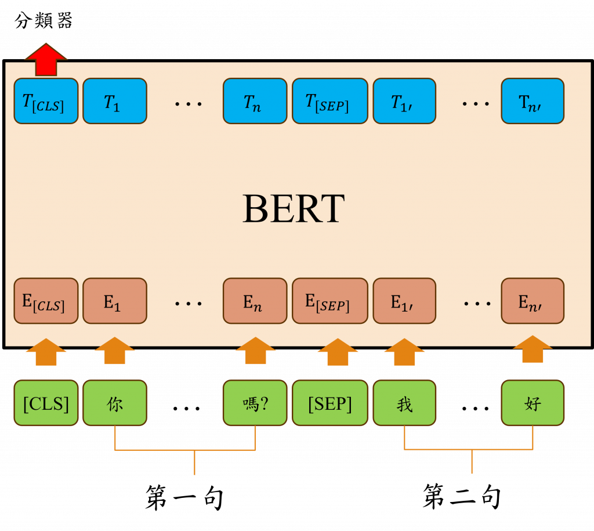
不過該模型真正厲害的地方在於自創的預訓練策略，這種策略讓模型更進一步理解雙向上下文訊息，這個改動使得BERT論文一經發布後，便在GLUE、SQuAD、SWAG等資料集的準確率排行榜上穩坐龍頭，並且該方式對後續自然語言模型產生了大規模影響，現在讓我們一起來探索該模型的訓練方式吧!
BPE(Byte Pair Encoder)

一個優質的模型需要有出色的斷詞策略，這點我們在【Day 16】解析詞嵌入預訓練模型的奧秘(下)-fastText中瞭解了這些道理，透過Subword來為詞彙建構的這種表達方式，能進而大幅提升效能。
因此在這裡，BERT採用一種名為BPE(Byte Pair Encoder)的Subword斷詞法，不過該段詞法從文字敘述上來解釋，可能比較難理解，所以在講解理論的過程中，我將結合程式碼來實現，讓你更易於記住和理解這個過程。
【STPE 1】 將詞彙拆成字元
首先我們需要統計每個詞彙的出現次數，在此過程中我們使用了vocab變數進行模擬詞彙的數量。同時我們使用</w>來標示每個詞彙的邊界，而在BPE演算中的第一步就是將這些詞彙轉換為字元，再統計這些字元的出現次數。
def get_tokens(vocab):
tokens = collections.defaultdict(int)
for word, freq in vocab.items():
word_tokens = word.split()
for token in word_tokens:
tokens[token] += freq
return tokens
vocab = {'l o w </w>': 5, 'l o w e r </w>': 2, 'n e w e s t </w>': 6, 'w i d e s t </w>': 3}
# -----------------輸出-----------------
{'l': 7, 'o': 7, 'w': 16, '</w>': 16, 'e': 17, 'r': 2, 'n': 6, 's': 9, 't': 9, 'i': 3, 'd': 3}
【STPE 2】 計算鄰近的字元出現次數
接下來BPE算法中會持續重組詞彙表中所有相鄰的兩個字元，並計算出這兩個字元重組後在文本中一共出現了幾次。例如，lo字元在low</w>(出現5次)與lower</w>(出現2次)，因此它的出現次數總計為7次。
def get_stats(vocab):
pairs = collections.defaultdict(int)
for word, freq in vocab.items():
symbols = word.split()
for i in range(len(symbols)-1):
pairs[symbols[i],symbols[i+1]] += freq
return pairs
pairs = get_stats(vocab)
# -----------------輸出-----------------
('l', 'o'): 7, ('o', 'w'): 7, ('w', '</w>'): 5, ('w', 'e'): 8, ('e', 'r'): 2, ('r', '</w>'): 2, ('n', 'e'): 6, ('e', 'w'): 6, ('e', 's'): 9, ('s', 't'): 9, ('t', '</w>'): 9, ('w', 'i'): 3, ('i', 'd'): 3, ('d', 'e'): 3
【STPE 3】 找到組合次數最高的結果並合併
接下來我們還要尋找出組合次數最高的結果，在此案例中e與s這兩個字元的出現次數是最高的，因此我們將這兩個字元合併成es，然後統計新產生的es字元在文章中的出現次數，接下來我們會使用新結果來取代掉原本的s字元(因為出現次數相同)並更新字元詞彙表，如此循環STEP 1至STEP 3的步驟直到所有條件都達到為止後，我們就能取得斷詞後的SubWord。
def merge_vocab(pair, v_in):
v_out = {}
bigram = re.escape(' '.join(pair))
p = re.compile(r'(?<!\S)' + bigram + r'(?!\S)')
for word in v_in:
w_out = p.sub(''.join(pair), word)
v_out[w_out] = v_in[word]
return v_out
best = max(pairs, key=pairs.get)
vocab = merge_vocab(best, vocab)
tokens = get_tokens(vocab)
print(tokens)
# -----------------輸出-----------------
'l': 7, 'o': 7, 'w': 16, '</w>': 16, 'e': 8, 'r': 2, 'n': 6, 'es': 9, 't': 9, 'i': 3, 'd': 3
【STPE 4】 設定停止條件
而設定停止條件的方式非常多種，在這裡我主要介紹兩種方式，第一種就是直接設定迴圈次數，但這樣將需要我們不斷地測試合併的結果，若迴圈次數設定不足，將可能導致字元無法有效的重組；反之若設定的迴圈次數過多，則可能會導致分割結果不夠乾淨。
num_merges = 10
for i in range(num_merges):
pairs = get_stats(vocab)
if not pairs:
break
best = max(pairs, key=pairs.get)
vocab = merge_vocab(best, vocab)
tokens = get_tokens(vocab)
因此第二種方式是我們可以依照該詞彙的出現次數進行設定，當某些詞彙出現一定數量時才會停止，例如在我們的範例裡面，我們知道low這個詞彙共出現了7次，因此我們可以用此作為設立條件讓它自動停止。
cnt = 0
while(tokens.get('low') != 7):
pairs = get_stats(vocab)
if not pairs:
break
best = max(pairs, key=pairs.get)
vocab = merge_vocab(best, vocab)
tokens = get_tokens(vocab)
cnt +=1
print(tokens)
# -----------------輸出-----------------
'low': 7, '</w>': 7, 'e': 8, 'r': 2, 'n': 6, 'w': 9, 'est</w>': 9, 'i': 3, 'd': 3
這時我們可以看到low與字跟est被有效的分割出來，而這一點當文本資料越大時，該演算法的最終結果越好，不過BERT中的表示方式有一些小改動，它會將最後的結果est</w>修改成##est，來作為它的詞彙之一。
NSP(Next Sentence Prediction)
NSP(Next Sentence Prediction)是BERT模型的預訓練任務之一，這項任務的目的是讓模型理解文本中，特別是兩個句子之間的主要邏輯關係，透過該方式我們可以判斷兩個輸入句子是否是連貫的，也就是「下一句」是否是「前一句」的延續，而在BERT中採用了Segment Embedding的方式來進行編碼，將屬於第一個句子或段落的部分標為0，而屬於第二個句子或段落的部分則標記為1，並且透過神經網路來訓練已理解這些文本之間的關係。
小提示:
在BERT中有三層詞嵌入層，第一層對應到Transformer的Token Embedding這邊兩者是相同的，不過第二層的Position Embedding與Transformer中的Positional Encoder有些不同，雖然兩者看起來相似，但其實有著重要的不同之處。主要的區別在於BERT的位置編碼是可以進行訓練的，然而在Transformer中的位置編碼卻是固定的(Embedding與
sin()、cos()，的轉換差距)。至於第三層的Segment Embedding，它其實就是我們上述所提到的NSP任務中的訊息資訊。
MLM（Masked Language Model）

Masked Language Model (MLM) 的主要特點是其能夠預測句子中遺失部分的詞語或標記，在訓練過程中，BERT會隨機選取輸入文本中的15％詞彙替換成特殊的[MASK] 標記，並要求模型去預測被替換掉的詞彙，這樣的設計能讓模型能夠學習詞彙間的相依性，同時強化對未見過單詞的泛化能力。
不過在微調階段中並沒有[MASK]這樣的標記，因此BERT並不是完全使用[MASK]，而是將其替換為其他的詞彙，使其能夠更貼近微調時的效果。而這樣的預訓練方式在後繼的預訓練模型中幾乎已成為必使用的關鍵技術，甚至有很多研究著重在改進這種方法。
特殊標籤
在BERT的特殊標籤中，主要有兩個我們可能不太熟悉的標籤，分別是[CLS]和[SEP]。
| 名稱 | 說明 |
|---|---|
| [CLS] | 用於捕獲整個序列的語義信息 |
| [SEP] | 區隔句子的前後文 |
| [MASK] | 遮蔽文字字元，僅出現在預訓練階段 |
| [UNK] | 表示未知字元 |
| [PAD] | 表示填充字元 |
[CLS]標籤的主要用途是提供一種方式，讓模型能夠利用這個單一標籤來理解整個句子的訊息，例如:我們輸入[CLS]今天天氣好嗎?給模型，BERT的設計者希望模型能夠僅透過[CLS]這個標籤就能理解今天天氣好嗎?這句話的意義，這樣設計的原因在於BERT的輸出結構會在這個[CLS]標籤的序列位子上添加一個簡單的線性分類器，以此作為模型的輸出，而不是將整個語意訊息融合後再輸出。 |
而[SEP]標籤則類似於<EOS>的用途，它可以幫助模型識別出第一個句子的結尾，並擔任第一句和第二句之間的分隔標記，並通過神經網路訓練的方式來得到文本之間的前後訊息與關聯性。
以上就是強大的預訓練模型BERT所運用的關鍵技巧，如你所見這一理論與我們先前所學的模型有密切的聯繫，這也正是我想要傳達的核心訊息：在學習自然語言處理的過程中，理解這些理論的重要性不容小覷，而BERT模型的成效，證明了我們先前所學的技術並非在自然語言處理領域中是種短暫性的技術，反而是其基石之一，因此在學習自然語言處理時，溫故知新是至關重要的！
後話
至此你應該對自然語言處理的技術用途有更深的理解，而先前我在整個過程中不斷使用程式碼的目的，是希望你能了解這些技術在實踐過程中可能遇到的問題，這些問題在專業論文或理論中並不會提及，透過這種方式你對相關模型的理解將更為深入，不過再次提醒文章中的程式碼只包含重要片段，因此你需要前往我的GitHub查看完整的程式碼，而明天我還是會以這種方式進行學習，所以明天將會是程式碼實作環節，而這次我會教你如何實現使用BERT進行QA問答的任務。
那麼我們明天再見！
內容中的程式碼都能從我的GitHub上取得:
https://github.com/AUSTIN2526/iThome2023-learn-NLP-in-30-days
Day 23｜【Day 23】因為站在巨人的肩膀上才能眺望更遠的風景(下)-使用SQuAD做QA問答
- 原文：https://ithelp.ithome.com.tw/articles/10336290
前言
今天我們將會來完成最後一個NLP的任務QA問答，不過你可能會想BERT只有Encoder所以它無法生成文字，那它要怎麼進行回答呢?與Seq2Seq、ChatGPT等生成式的語言模型不同，而BERT它主要是通過文章中的訊息來進行分類，也就是說它的回答必須從原始的文章內容中找尋答案，而今天我們就是要來學習這件事情該怎麼處理，今天的學習重點如下:
SQuAD資料集解析與整裡BERT的使用與呼叫方式BERTQA問答的方式與應用
SQuAD（Stanford Question Answering Dataset）是由史丹佛大學的研究團隊所建立的，該資料集用於測試模型在閱讀理解任務上的性能，它的資料來源主要來自於維基百科文章中，目前它有多種版本而在這次的任務中我們會使用SQuAD 2.0資料集來進行練習，在下方提供的圖片中，我們可以看見這是一個結構複雜且龐大的JSON檔案，因此我先將該文件結構整理出來，讓我們可以更方便地理解它。
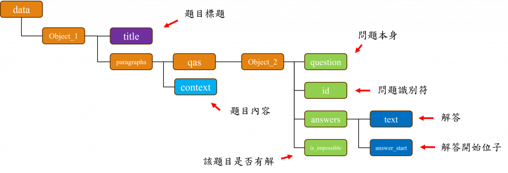
在該json結構中所有的內容都被彙整於data節點內，該節點下有多個稱為object_1的子節點，而每一個object_1節點中包含有專門描述題目的title欄位以及具體的題目內容context，並且在每一個object_1節點中，還參雜了數個稱為object_2的子節點，該節點設計存放有關問題的資訊。
在這些object_2節點內，存有問題question、問題的編號id、標示該問題是否有解答的is_impossible欄位，以及在answers節點中存放的問題解答text與該解答在context中的起始位置answer_start。

而在今天的任務中我們只會使用到context、question、text、is_impossible這四個資料而已，不過在開始實作前我們先來了解BERT是怎麼處理QA任務的。
BERT用於QA的方式
當我們進行QA任務時，答案會是來自context中的一段文字範圍，因此對於該模型的標籤，我們需建立答案在context中起始位置與結束位置這兩個索引值，因此在模型輸出的方面我們需要計算出兩個輸出向量。而這兩個向量的計算方式就是對BERT的輸出進行softmax運算後產生的最大機率位子，因此該層的輸出大小必須與文字序列的長度相同，這樣當我們可以把起始位子視為1，其他位子視為0時(結束位置也要做相同操作)，模型便能進行損失值的計算。
在BERT的模型架構中，[CLS] context [SEP]是模型的第一句輸入，也是我們最終要處理QA任務時的答案範圍區域，透過[SEP]與Segment Embedding的設定使模型能學習答案的輸出範圍，而在第二句中的question [SEP]將做為模型的第二句輸入，由於兩句輸入Segment Embedding的輸入數字不同，所以question [SEP]不會被視為第一句的資料，如此一來模型就能夠來理解第二句的資訊，並從第一句的序列中找到正確的答案範圍。接下來我們來看看該如何用程式處理這一項任務吧。
【STEP 1】讀取JSON資料
我們之前提到這個資料集是JSON格式的，因此我們無法用同讀取txt檔的方式來讀取它，如果嘗試用txt的readlines()函數，你會發現資料整理起來非常困難。
所以為解決這個問題，我們需要引入import json來幫助我們將json資料轉換為list和dict形式，藉以讓我們更方便地整理資料，而它的使用方式就是將先前所使用的readlines()函數替換掉而已
# pip install json
import json
def load_json_data(path):
with open(path) as f:
json_data = json.load(f)
return json_data['data']
json_datas = load_json_data('data/train-v2.0.json')
【STEP 2】BERT Tokenizer
在我們之前的步驟中，都是使用了TorchText作為斷詞的工具但這次我們不再需要了，因為我們將要使用的BERT是一種極具熱度的模型，而這類模型都被Hugging face公司所收錄，因此可以透過他們的API輕易下載與使用。其中他們針對了不同的預訓練模型製作了不同的斷詞器，而這個斷詞器能將大量資料快速地轉換成張量，進行填充，以及文字轉數字等功能，我們可以使用以下的程式碼來使用該斷詞器。
# pip install transformers
from transformers import AutoTokenizer
tokenizer = AutoTokenizer.from_pretrained("deepset/bert-base-cased-squad2")
在上述的程式中，deepset/bert-base-cased-squad2代表我們今天使用的模型型號，其他的型號我們可以在這個網站中找到不同語言與任務的BERT版本。
不過BERT的模型輸入方式比較特殊，特別是在問答(QA)的部分，因此我們在此先了看到下方程式來瞭解一下該段詞器中的返回參數有哪些吧。
a_sent = 'Hello My Name Is Austin' # 第一句
b_sent = "What Is your name" # 第二句
new_sent = tokenizer(a_sent, b_sent) # 斷詞並轉換成數字
decode_sent = tokenizer.decode(new_sent.input_ids) # 數字轉換成文字
print(new_sent)
print(decode_sent)
# -------------輸出-------------
{'input_ids': [101, 8667, 1422, 10208, 2181, 5202, 102, 1327, 2181, 1240, 1271, 102], 'token_type_ids': [0, 0, 0, 0, 0, 0, 0, 1, 1, 1, 1, 1], 'attention_mask': [1, 1, 1, 1, 1, 1, 1, 1, 1, 1, 1, 1]}
[CLS] Hello My Name Is Austin [SEP] What Is your name [SEP]
在上述的程式碼執行結果中，我們可以看到該斷詞器後可以一次處理兩個句子，並把它們轉換成input_ids、token_type_ids以及attention_mask三種輸出形式。
首先input_ids是將詞彙轉換為數字的結果；token_type_ids則是配合Segment Embedding層運作，該項目中的0和1代表了第一句和第二句，並且在第一句中的[SEP]標籤被標記為0，因為這個標籤與我們以前介紹過的<EOS>特殊標籤含義相同，都是用於判斷文字的結尾；而attention_mask則代表了遮蔽機制，在進行需要填充資料的任務時，需在相對應的位置需設定為0。
【STEP 3】整理json資料
在這個步驟中我們需要取出json中的context，使其做為我們的第一句，不過一個context中可能包含多個question，所以我們需要先取出context，再將其與後續的question進行組合，才能形成一組完整的訓練資料。
而對於context的處理我們可以透過迴圈的方式，先將第一個object_1的資料提取出來。
#存放資料用
input_data = {'input_ids':[], 'token_type_ids':[], 'attention_mask':[], 'start_positions':[], 'end_positions':[]}
for json_data in json_datas:
paragraphs = json_data['paragraphs'][0]
# 取得內文
context = paragraphs['context']
# 取得QA資料
qas = paragraphs['qas']
接下來我們將撰寫一個函數，其功能是確定我們答案在問題之中的位置，這是因為BERT使用BPE斷詞方式，所以實際的詞彙長度將會大於原始長度，因此我們不能直接使用answer_start提供的位置，而在這裡我們就需要通過將答案與內文轉換成數字，然後再將其組合，之後才能更新開頭與結尾的索引已找到正確的答案位置。
def find_target_sublist(my_list, target_sublist):
target_length = len(target_sublist)
for i in range(len(my_list)):
if my_list[i:i + target_length] == target_sublist:
return i, i + target_length
接下來我們可以進一步透過另一個迴圈將所有問題與內文結合，並通過上述的函數來計算出答案實際存在的位置，不過我們需要注意在該資料集中，有些文字沒有完整的斷詞，並且還有一些答案實際上並不存在於內文中，因此我在此將這部分的資料省略。
但更為正確的處理方式應該是，當問題與內文結合後，若標籤為is_impossible，則將設定起始位置及結束位置為0，這樣一來，只要程式回傳兩個0的標籤，我們就能判斷該答案是否無解。
for qa in qas:
if not qa['is_impossible']: # 不使用不可能的QA解答
# 取得問題
question = qa['question']
# 取得答案
answers = qa['answers'][0]['text']
answers_ids = tokenizer(answers).input_ids[1:-1]
# 轉換成數字
inputs = tokenizer(context, question, return_tensors="pt")
inputs_ids = list(inputs.input_ids[0])
#更新答案位子
start_positions, end_positions = find_target_sublist(inputs_ids, answers_ids)
start_positions, end_positions = torch.tensor([start_positions]), torch.tensor([end_positions])
# 存入字典中
input_data['input_ids'].append(inputs.input_ids[0])
input_data['token_type_ids'].append(inputs.token_type_ids[0])
input_data['attention_mask'].append(inputs.attention_mask[0])
input_data['start_positions'].append(start_positions)
input_data['end_positions'].append(end_positions)
這一次我們存放資料的方式不是採用list，而是選擇使用dict的方式，這種作法的好處是我們可以透過**arg的形式，直接將參數傳給模型，而當我們這樣做時key將代表傳入的參數欄位，value則代表傳入的值，我們可以先看到已下的範例。
def f(a, b, c):
print(a, b, c)
arg = {'a':1, 'b':2, 'c':3}
f(**arg)
# -------------輸出-------------
1 2 3
當然使用這樣的方式還是需要將資料給填充到相同的維度，這時我們只需將所有的值補上0即可，因為在BERT中attention_mask只要為0，其他值都不會被計算到。
input_data = {k:pad_sequence(v, padding_value=0, batch_first=True) for k, v in input_data.items()}
【STEP 4】建立訓練資料
當我們在建立Dataset()和DataLoader()時，由於我們的資料為dict()格式，所以我們無法直接利用之前的train_test_split()來分割資料，這時我們需要借助於另一種方式random_split()來切割，這種切割方式可以將已經包裝好的Dataset()以及訓練和驗證的樣本數量作為輸入就能夠輕易使用了。
from torch.utils.data import Dataset, DataLoader
class QADataset(Dataset):
def __init__(self, data):
self.data = data
def __getitem__(self, index):
return {k:v[index] for k, v in self.data.items()}
def __len__(self):
return len(self.data['input_ids'])
dataset = QADataset(input_data)
train_simple = int(len(input_data['input_ids']) * 0.8)
valid_simple = len(input_data['input_ids']) - train_simple
trainset, validset = torch.utils.data.random_split(dataset, [train_simple, valid_simple])
train_loader = DataLoader(trainset, batch_size = 32, shuffle = True, num_workers = 0, pin_memory = True)
valid_loader = DataLoader(validset, batch_size = 32, shuffle = True, num_workers = 0, pin_memory = True)
【STEP 5】建立模型與優化器
在使用基於為調版本的預訓練模型時，我們無需自行搭建一個完整的模型架構，因為在這些函式庫內都已經為我們做好了這個工作，因此我們只需指定模型的版本，讓程式就會自動下載並導入該模型的權重，就能夠完成模型的建立了。
import torch.optim as optim
device = torch.device('cuda' if torch.cuda.is_available() else 'cpu')
model = BertForQuestionAnswering.from_pretrained("deepset/bert-base-cased-squad2").to(device)
optimizer = optim.Adam(model.parameters(), lr=1e-4)
【STEP 6】建立訓練函數
在建立訓練函數時我們需要了解一個BERT模型的輸出包含哪些資料，我們可以先觀察以下這個模型的輸出結果:
QuestionAnsweringModelOutput(loss=tensor(1.3877, device='cuda:0', grad_fn=<DivBackward0>), start_logits=tensor([[-5.4010, -4.5337, -3.8622, ..., -8.9466, -8.9047, -9.0650],
[-6.0552, -2.0189, 3.2075, ..., -9.2172, -9.2660, -9.2848],
[-4.3217, 0.3849, -2.1667, ..., -9.3862, -9.4180, -9.4363],
...,
[-5.9702, -2.4483, -6.4202, ..., -8.9942, -9.0365, -9.0596],
[-4.7156, -3.0598, -6.9935, ..., -9.3051, -9.2981, -9.3762],
[-6.3898, -3.7676, -5.8136, ..., -9.2414, -9.2260, -9.2718]],
device='cuda:0', grad_fn=<CloneBackward0>), end_logits=tensor([[-4.8597, -4.5322, -5.3140, ..., -8.7468, -8.7832, -8.6681],
[-4.9756, -2.8353, -1.3049, ..., -8.5606, -8.5292, -8.5106],
[-4.5155, -5.0386, -3.8397, ..., -8.4292, -8.4087, -8.3857],
...,
[-4.9849, -4.3610, -5.4201, ..., -8.6628, -8.6316, -8.5959],
[-4.5276, -5.3441, -2.6401, ..., -8.4837, -8.4688, -8.3980],
[-5.9687, -3.2888, -3.1393, ..., -8.5364, -8.5641, -8.5204]],
device='cuda:0', grad_fn=<CloneBackward0>), hidden_states=None, attentions=None)
在這個結果中我們需要理解loss、start_logits、和end_logits的實際意義，首先loss代表了我們這次運算的損失值，這是因為模型內部已經定義了損失函數，所以我們不需要再自行定義，而start_logits和end_logits則反映了我們在文字輸出序列上的機率值。
當然我們也可以選擇不用模型給出的損失函數，而是透過這兩個機率值與實際輸出進行計算，而在訓練函數的最簡單架構方式就是直接取出損失值並進行反向傳播。
from tqdm import tqdm
import matplotlib.pyplot as plt
def train(epoch):
train_loss, train_acc = 0, 0
train_pbar = tqdm(train_loader, position=0, leave=True) # 宣告進度條
model.train()
for input_datas in train_pbar:
for key in input_datas.keys():
input_datas[key] = input_datas[key].to(device)
optimizer.zero_grad()
outputs = model(**input_datas)
loss = outputs.loss
loss.backward()
optimizer.step()
train_pbar.set_description(f'Train Epoch {epoch}')
train_pbar.set_postfix({'loss':f'{loss:.3f}'})
train_loss += loss.item()
return train_loss/len(train_loader)
【STEP 7】訓練與評估
我們使用相同的early stopping策略和以loss值為指標來訓練模型，考慮到這段程式碼已經出現過許多次，就不再進行詳細的解釋了。
epochs = 100 # 訓練次數
early_stopping = 10 # 模型訓練幾次沒進步就停止
stop_cnt = 0 # 計數模型是否有進步的計數器
model_path = 'model.ckpt' # 模型存放路徑
show_loss = True # 是否顯示訓練折線圖
best_loss = float('inf') # 最佳的Loss
loss_record = {'train':[], 'valid':[]} # 訓練紀錄
for epoch in range(epochs):
train_loss = train(epoch)
valid_loss = valid(epoch)
loss_record['train'].append(train_loss)
loss_record['valid'].append(valid_loss)
# 儲存最佳的模型權重
if valid_loss < best_loss:
best_loss = valid_loss
torch.save(model.state_dict(), model_path)
print(f'Saving Model With Loss {best_loss:.5f}')
stop_cnt = 0
else:
stop_cnt+=1
# Early stopping
if stop_cnt == early_stopping:
output = "Model can't improve, stop training"
print('-' * (len(output)+2))
print(f'|{output}|')
print('-' * (len(output)+2))
break
print(f'Train Loss: {train_loss:.5f}' , end='| ')
print(f'Valid Loss: {valid_loss:.5f}' , end='| ')
print(f'Best Loss: {best_loss:.5f}', end='\n\n')
if show_loss:
show_training_loss(loss_record)
# -------------輸出-------------
Train Epoch 1: 100%|███████████████████████████████████████████████████████| 59/59 [00:40<00:00, 1.45it/s, loss=1.482]
Valid Epoch 1: 100%|███████████████████████████████████████████████████████| 15/15 [00:03<00:00, 4.08it/s, loss=1.155]
Saving Model With Loss 1.28788
Train Loss: 0.90966| Valid Loss: 1.28788| Best Loss: 1.28788
在這次的訓練結果中，你會發現該模型的收斂速度相當的快速，模型在第2次訓練時已達到最佳的效能值，不過在後續的訓練中你可能會發現模型的Loss值持續上升，而這情況的產生主要是因為BERT屬於微調型預訓練模型，也就是除了最後一層的輸出有所變化外，其他層面的基本不會有太大的變動，所以當我們完成第2次訓練後，最後一層的輸出便已被訓練到最佳狀態，這樣就容易導致Overfitting的問題，所以為了預防這種情況，我們在訓練過程中，只會保存最佳的結果。

【STEP 8】實際應用
在我們的模型訓練完成後，我們可以用驗證資料集來進行預測，不過在此之前，我們需要先讀取模型的權重，然後再進行預測，在這裡注意我們輸入的資料必須先放入到GPU中，不然程式將出現錯誤
model = BertForQuestionAnswering.from_pretrained("deepset/bert-base-cased-squad2").to(device)
model.load_state_dict(torch.load(model_path))
preds = next(iter(valid_loader))
for k in preds:
preds[k] = preds[k].to(device)
output = model(**preds)
在模型預測完畢後，我們需要先取得所有batch_size大小的start_logits與end_logits，接著透過argmax()這個方法來尋找最大機率對應的座標，而在這裡只會取出其中一個batch_size的結果作為範例。
IDX = 13
start = preds['start_positions'][IDX]
end = preds['end_positions'][IDX]
pred_start = output.start_logits.argmax(dim = 1)[IDX]
pred_end = output.end_logits.argmax(dim = 1)[IDX]
當我們有了位子的資料後還仍需進行一些處理，因為在訓練期間為讓訓練長度保持一致，我們填入了0也就是 [PAD] 標籤的索引值，所以在取出資料時就會出現一對[PAD]標籤，所以我們在此階段就需要把它們過濾掉再進行解碼的動作。同時[CLS]和[SEP]也需要被過濾掉，所以在這裡我選擇了先去除開頭兩個標籤再進行數字轉為詞彙的動作，並透過連接第一與第二句中間的[SEP]索引，來有效分割出問題與答案。
input_ids = preds['input_ids'][IDX]
input_ids = input_ids[input_ids !=0]
context, question = tokenizer.decode(input_ids[1:-1]).split('[SEP]')
pred_answer = tokenizer.decode(input_ids[pred_start:pred_end])
answer = tokenizer.decode(input_ids[start:end])
print('文章內容:', context)
print('問題:', question.strip())
print('預測解答:', pred_answer)
print('實際解答:', answer)
# -------------輸出-------------
文章內容: Scientists do not know the exact cause of sexual orientation, but they believe that it is caused by a complex interplay of genetic, hormonal, and environmental influences. They favor biologically - based theories, which point to genetic factors, the early uterine environment, both, or the inclusion of genetic and social factors. There is no substantive evidence which suggests parenting or early childhood experiences play a role when it comes to sexual orientation. Research over several decades has demonstrated that sexual orientation ranges along a continuum, from exclusive attraction to the opposite sex to exclusive attraction to the same sex.
問題: What three factors do scientists believe are the cause of sexual orientation?
預測解答: genetic, hormonal, and environmental
實際解答: genetic, hormonal, and environmental
現在你可以試著更改IDX的索引值，你將會發現預測解答與實際解答所顯示的結果大多都是完全相符的，而這種做法使我們得以見識到，BERT在回答問答題時展現了極大的效能，並且由於訓練時間快，因此許多企業非常喜歡使用BERT來做為他們的語言模型。
後話
現在你已知道，擁有僅有Encoder架構的模型，其基本上主要適合從分類的角度來處理文字，這也是BERT模型的主要問題之一，因為它無法有效處理某些NLP任務，頂多可視為一個非常強大的分類模型，因此在後續的模型改良中還有BART這類完整Encoder-Decoder的架構，並且該模型的延伸可說是2018年~2022年之間的熱門議題，因此BERT的模型變種也是目前最多的一種預訓練模型，如果對這部分有興趣可以到Hugging face觀看該模型的各種版本。而在明天我會告訴你有關BERT這一個模型的死對頭，也就是ChatGPT的老祖宗GPT-1、GPT-2和GPT-3所使用的技術。
那麼我們明天再見！
內容中的程式碼都能從我的GitHub上取得:
https://github.com/AUSTIN2526/iThome2023-learn-NLP-in-30-days
Day 24｜【Day 24】用暴力美學屹立於不敗之地(上) - GPT家族的霸道之路
- 原文：https://ithelp.ithome.com.tw/articles/10337089
- 發佈時間：2023-10-09 21:01:59
前言
若把BERT視為Transformer Encoder的代表，那麼GPT則可以說是Decoder的最佳代表，不過基於Decoder的模型會有一些小問題存在，而該問題就是它較難以理解語意，不過但在GPT中透過增加模型大小和訓練資料，這種簡單但有效的方式解決這個問題，也因這兩種模型具有完全相反的特性，所以往往被用來進行比較，所以今天我們將重點探討GPT家族在訓練模型時所採用的方法。今天學習重點如下：
- 學習
GPT的不同版本 - 理解
zero-shot與few-shot - 學會
MAML演算法與meta learning的概念
GPT-1
GPT-1是在ELMo模型出現一年後誕生的這也是最初的GPT版本，而它之所以會出現，主要是因為傳統的自然語言模型需利用大量數據進行監督式學習以完成預訓練任務，然而這種基於監督式學習的語言模型，不但需要花費大量時間來標註標籤，並且訓練完畢後的模型也無法一次解決所有自然語言處理的任務。
因此GPT-1採用了一種稱為自回歸(Autoregressive)的訓練方式 (x(0)~x(t-1)用來預測x(t))，這是因為對於文字資料來說，當前時間點的起始值會受到先前時間點起始值的影響，因此只需利用過去的幾個時間點的資訊便能預測未來的起始值。
這種概念與我們之前學過的Word2Vec的CBOW相似，唯一的區別在於它是採用單向操作而非CBOW的雙向表示，不過GPT-1採用了12個Transformer Decoder，並充分利用了Transformer的Multi-head Attention特性，因此在語義表達上比Word2Vec更為豐富，而選擇使用Decoder的主要原因在於，因為作者希望透過生成而非分類的方式來完成所有的自然語言任務。

雖然GPT-1的設計讓它成為一個通用模型，但在特定領域的任務處理時仍然是需要微調的，如上圖所示在處理分類（Classification）的任務時，它會在輸出端接上一個線性分類器以進行分類；而第二項Entailment（文字蘊涵）的任務，它需要判斷兩句間的關聯性，這與BERT中的NSP任務有點類似；第三項任務它會進行相似度（Similarity）分析，是透過孿生網路（Siamese networks）的結構比對兩句的輸出並計算其關聯性；最後Multiple Choice任務，它就是我們昨天進行的QA任務，只不過它的作法是將文章內容與問題結合，並將答案視為第二句，因為GPT主要的主要概念是推理，而非跟BERT一樣是分類。
在2018年GPT-1在九項任務中表現卓越成為了該領域的領先模型(state-of-the-art, SOTA)，雖然未經微調的GPT-1在各項任務中也顯示出一定的效果，但其在未經微調的任務中的泛化能力遠不及經過微調的有監督任務，因此該模型的的實驗結果可說是不如預期，因它最初的概念就是成為一個全面的語言模型。
GPT-2
GPT-1的模型擁有約1億的參數量，並採用了約5G的BooksCorpus資料集進行訓練，上面我們有提到雖然此方法取得了不錯的效果，但並未滿足GPT的野心。於是GPT-2在模型參數量和資料集的規模上進一步提升，它選用了約15億的參數量（48層的Transformer Decoder）並從Reddit收集了40GB的文本資料進行訓練。
而該模型的出現就是為了驗證GPT-1的理念「只要語言模型的容量和使用的資料量能夠充足，該模型便能適應多元的任務」，而這個理念相當直觀就是把所有的驗證集都都能被當成是訓練集就是GPT-3的核心原理
而經過實驗的結果GPT-2僅透過zero-shot的方式就在八項任務中的七項成為了SOTA模型，然而由於其參數量過大，所以導致在微調上基本上沒有太大的變化，甚至可能出現微調後效能反而降低的情況。
小提示:
「Zero-shot」指的是在輸入模型的文本中，不提供任何參考樣本的方式。例如當我們向模型提出問題：「數字8是多少？」模型需要自行推理出答案，這種方式就是zero-shot。然而如果我們提供一組參考數據，例如「2 4」、「6 8」，這樣子模型推理出的答案可能會更準確，這種方法則稱為「few-shot」。
GPT-3
雖然GPT-2在微調上的表現並未達到理想效果，但它卻證明只要不斷增加資料量與模型大小，便有可能達成通用模型的目標，因此GPT-3直接使用了1750億的模型參數量（當時第二大的模型參數量只有200億），並利用45TB從網路上取得的資料進行訓練，
而在GPT-3這個模型中，它所要完成的目標就是希望透過結合few-shot與zero-shot的概念來解答所有有關於文字的任務。因此它需要使用一種名為元學習（meta learning）的訓練方式，這種學習方式是一種透過學習結果進行學習的方法。
GPT-3則是使用了一種名為MAML（Model-Agnostic Meta-Learning）的元學習策略，該策略的目標是學習一個能夠代表所有任務的meta initialization（元初始化參數），為了學習這個參數，我們需要將每個自然語言任務依照其性質分為support set（支援集）和query set（查詢集）。
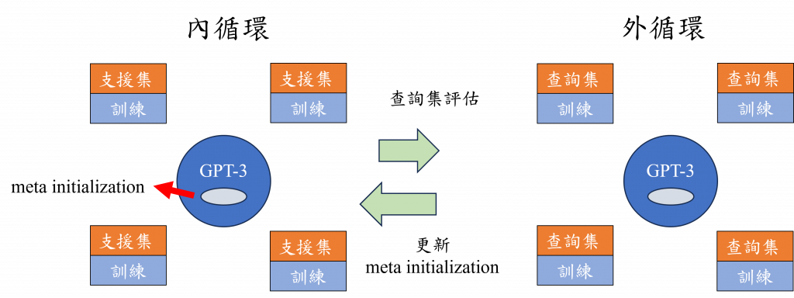
在MAML的過程中首先利用支援集來進行內循環（Inner Loop）的訓練，也就是針對每一個獨立任務進行學習，然後模型會進入外循環（Outer Loop）的階段，在此階段中則會檢視內循環得出的學習結果，以此並更新meta initialization，將其結果更新再回到內循環進行訓練，將下來不斷反覆循環到meta initialization不再有所變化時模型就訓練完畢了。

在該論文的圖片中，還介紹了一種名為In-Context Learning(上下文學習)的方法，這指的是在內循環中的每一個支援集的分類方式，所有相似的任務都應該劃分到同一個支援集裡，因為我們在詢問問題時通常是在同一個領域內，透過這種訓練方式，GPT-3能夠根據上下文更精準地回答問題。
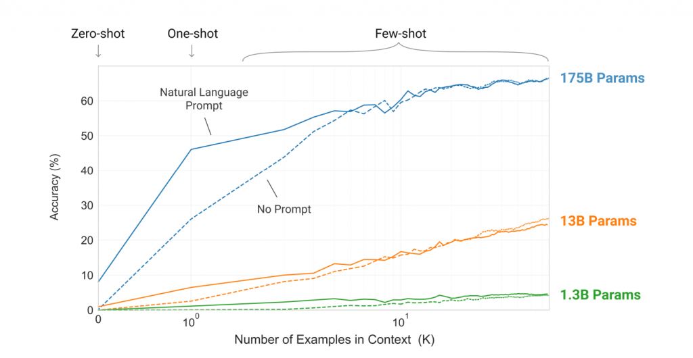
根據GPT-3的實驗結果，證實模型參數量越高，並配合越多的few-shot實際效果將越出色，而在GPT-3的實驗還比較了在有Prompt與無Prompt兩種情境下的效能差異。所謂的Prompt是指在問題開始處加入特定語境設定，例如當我們需要進行翻譯任務時，會輸入翻譯中文到英文:你好，其中的翻譯中文到英文:即是Prompt的一種應用。
GPT-3的效果無疑是2020年中最強的模型，而它與Google所開發的模型之間存在著深深的競爭關係，每當Google開發出新的模型，GPT就會響應著推出更強的模型從時間線上來看ELMo -> GPT1 -> BERT -> GPT2 -> T5 -> GPT3，不過前幾個模型之間的效能相差並不大，但自GPT-3誕生之後則遠遠超過了先前的模型。但GPT-3並未開源且在模型訓練上較困難，因此多數企業仍選擇使用BERT作為語言模型。
後話
現在你應該能理解為何這篇文章的標題是「用暴力美學屹立於不敗之地」了吧！這種需要大量訓練的模型已變成現在自然語言處理的主流，他們被統稱為大型語言模型（Large Language Model, LLM），當然要建立出這類的模型還是依賴於我們先前所學習的所有技術。明天我將會透過GPT-J來教你如何微調只有Decoder架構的模型。
那麼我們明天再見！
內容中的程式碼都能從我的GitHub上取得:
https://github.com/AUSTIN2526/iThome2023-learn-NLP-in-30-days
Day 25｜【Day 25】用暴力美學屹立於不敗之地(下) - 用GPT-J來告訴你大型語言模型該如何用LoRA微調
- 原文：https://ithelp.ithome.com.tw/articles/10337638
前言
雖然GPT可以像BERT一樣利用起始與結尾進行訓練，但這樣會讓今天的內容顯得無趣，因此我將用ChatGPT的概念讓GPT-J在閱讀完SQuAD的文章後進行推理並得出答案，不過今天我們訓練的ChatGPT的模型參數量實在太大，所以我會教你該如何微調大型語言模型，並探討GPT如何生成這些文字的方式，今天的學習重點如下:
LoRA技術簡介PEFT函式庫的安裝與使用GPT-J實作與生成
LoRA(Low-Rank Adaptation)
在微調大型語言模型時我們一定會遇到一個問題也就是**GPU的記憶體不夠大!!!**所以我們再調整模型使往往要用到更多張的GPU或是一些特殊的方法，而在今天因為我們要使用的GPT-J是擁有60億的參數的大型語言模型，這使得我們就算用24GB記憶體的RTX 3090顯卡進行訓練，也無法將它和訓練數據同時放入GPU進行運算，當然解決策略並不是投資在更多昂貴的顯示卡上，而是用LoRA(Low-Rank Adaptation)這項技術來幫助我們解決這個問題。
LoRA這項技術的主要理念是在我們微調模型時，將每一層的輸出都定義為原始權重W加上更新的權重ΔW(h = Wx + ΔW)，而在微調模型的目標就是要計算出ΔW的數值，但我們在求取ΔW的值需經過前向與反向傳播的計算，因此需要花費更多的記憶體空間去追蹤這些梯度的操作，並且在訓練時間也會增加，所以作者大膽地提出可以訓練一個體積更小的可訓練權重（Trainable Weight）來省去一些複雜計算的步驟。

基於這個原理在LoRA所採取的策略是利用近似低秩矩陣（Low-Rank Matrix Approximation）來降低原始層權重W並通過這個近似低秩矩陣求出新的答案，同時將部分的層數凍結防止進行反向傳播，同時因模型使用的是32bit來建立的，所以其記憶體使用率較高，因此在這個過程中還能將資料型態轉換為8bit以大幅縮小模型的大小。最後在建立完畢近似低秩矩陣後，我們還需要建立特定層的權重矩陣B，這樣子讓在模型進行前向傳播時僅需運算BA，就可取代大量的運算。
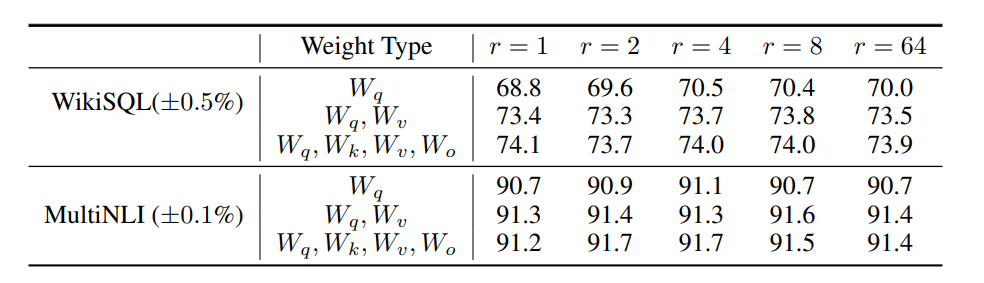
而根據實驗結果LoRA的效果甚至比傳統微調更出色，而對於這些大型語言模型的Transformer架構最需要LoRA的部分是Muti head attention的q、k、v、和o層，在上圖揭示了attention向量的q、k、v、o以及進行降維的r(Rank)與模型效能之間的相關性。
用大型語言模型GPT-J來推理SQuAD資料
現在你已經懂了LoRA的技術員裡，所以我將教你如何利用這項技術來完成我們今天的QA任務。而在程式中我們需要通過Hugging Face打造的PEFT函式庫，這個函式庫已經完美包裝了大型語言模型的LoRA方式，使我們能夠大幅縮短程式撰寫時間，接下來就讓我門看看該如何使用它來微調GPT-J吧！
【STEP 1】 安裝依賴函式庫
在PEFT中需要使用非常多的相關函式庫，雖然官方有提供範例供我們參考，但這些函式庫卻多數與最新版的Pytorch和Windows不相符，因此我們首要的任務是確認自己的Pytorch版本是否低於CUDA 11.6版，這是因為在相關函式庫中bitsandbytes只支援到CUDA 11.6版。
雖然我們可以不安裝它，但這個函式庫的重要性不容忽視，它能夠幫我們把模型從32bit轉換成8bit，若版本確實低於CUDA 11.6，我們只需要直接輸入以下的pip指令即可，如此Windows版本的PEFT安裝便告一段落。
pip install -q accelerate loralib jmespath
pip install -q git+https://github.com/huggingface/transformers.git@main git+https://github.com/huggingface/peft.git
pip install bitsandbytes --prefer-binary --extra-index-url=https://jllllll.github.io/bitsandbytes-windows-webui
不過若你是Mac或是linux的用戶你需要輸入下方的指令才能夠正常安裝。
pip install -q accelerate loralib jmespath
pip install -q git+https://github.com/huggingface/transformers.git@main git+https://github.com/huggingface/peft.git
pip install -q bitsandbytes
【STEP 2】下載GPT-J
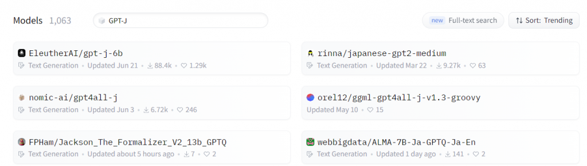
下載GPT-J的方法我們同樣的可以從Hugging Face網站來取得，而我們可以到這個連結中，搜尋GPT-J來找到最適合你的版本，而這次我們以最初的版本gpt-j-6B進行訓練。
from transformers import AutoModelForCausalLM
model = AutoModelForCausalLM.from_pretrained(
"EleutherAI/gpt-j-6B",
load_in_8bit=True,
device_map='auto',
)
在程式中我們只需輸入模型的名稱即可透過API下載該模型。但必須記住我們必須在參數上要加上load_in_8bit=True，如此模型才能被轉換成8 bit，同時我們需要使用device_map='auto'來自動指派模型被傳入的GPU設備。
【STEP 3】凍結參數並轉換模型參數
現在我們已將模型架構轉換成8bit型態，並且當前的資料型態為float32，而我們可以通過轉換型態的方式來增加訓練速度，因此我們可以透過model.parameters()讀取所有的參數，同時關閉梯度追蹤功能以凍結它們的權重。
for param in model.parameters():
param.requires_grad = False
if param.ndim == 1:
param.data = param.data.to(torch.float16)
接下來我們需要使用gradient_checkpointing_enable來減少記憶體的使用量，並且使用enable_input_require_grads讓模型的Embedding層能夠更適合當前的任務，尤其是我們有加入Special token時更需要開啟enable_input_require_grads。
model.gradient_checkpointing_enable()
model.enable_input_require_grads()
最後我們需要修改模型的輸出層，因為該層並非模型本身的一部分，而是在微調階段時才加入的，所以我們需要單獨去修改它，而今天我們需要修改的最後一層，你可以透過以下的程式碼找到該層參數的名稱。
print(model)
# --------------輸出----------
PeftModelForCausalLM(
(base_model): LoraModel(
.
.
.
(lm_head): CastOutputToFloat(
(0): Linear(in_features=4096, out_features=50400, bias=True)
)
)
)
)
此時我們可以明瞭lm_head在程式中即為模型的輸出，在這裡修改它的方法需重新建立一個繼承了lm_head的子類，並將其修改為float16的形式即可。
class CastOutputToFloat(nn.Sequential):
def forward(self, x): return super().forward(x).to(torch.float16)
model.lm_head = CastOutputToFloat(model.lm_head)
【STEP 4】啟用LoRA
在PEFT的函式庫中我們只需要透過LoraConfig()來設定r、lora_alpha以及target_modules等參數，即可於指定層數添加LoRA的功能，而這次我主要針對Attention中的q、v向量進行運算，因此我則選擇了q_proj與v_proj作為微調的部分，若你有其他想要訓練的層數你可以通過print(model)來找出這些參數的名稱。
from peft import LoraConfig, get_peft_model
config = LoraConfig(
r=16,
lora_alpha=32,
target_modules=["q_proj", "v_proj"],
lora_dropout=0.05,
bias="none",
task_type="CAUSAL_LM"
)
model = get_peft_model(model, config)
接下來我們可以使用下列的程式來計算模型經過LoRA後，來看看剩餘的參數總數。
def print_trainable_parameters(model):
trainable_params = 0
all_param = 0
for _, param in model.named_parameters():
all_param += param.numel()
if param.requires_grad:
trainable_params += param.numel()
print(
f"trainable params: {trainable_params} || all params: {all_param} || trainable%: {100 * trainable_params / all_param}"
)
print_trainable_parameters(model)
# ----------輸出----------
trainable params: 7340032 || all params: 6058222816 || trainable%: 0.12115817167725645
可以看到當我們使用LoRA後模型的參數量只剩下原來的0.12%，因此我們在運算時就不需要使用到太大的記憶體空間。
【STEP 5】讀取並整理資料集
我們同樣使用json函式庫來讀取資料，不過在資料整理方面有些許不同，這次我們不僅要加入先前未能訓練的is_impossible問答，還需要將其轉換成prompt的輸入格式。
import json
def load_json_data(path):
with open(path) as f:
json_data = json.load(f)
return json_data['data']
json_datas = load_json_data('data/train-v2.0.json')
在資料處理時我們這邊對context、answer與question前方加入了一個前綴，因為我希望模型能透過這個前綴來識別他們本身的含意，接下來我還加入了一個instruction(指令)Read the context and question to find the correct answer來告知模型它現在該做的事情。
from sklearn.model_selection import train_test_split
train_data = []
for json_data in json_datas:
paragraphs = json_data['paragraphs'][0]
context = paragraphs['context']
qas = paragraphs['qas']
for qa in qas:
question = qa['question']
if qa['is_impossible']:
answer = 'answers not in context'
else:
answer = qa['answers'][0]['text']
output = f'Read the context and question to find the correct answer:\n context:{context} question:{question}\nanswer:{answer}'
train_data.append(output)
x_train, x_valid = train_test_split(train_data, train_size=0.8, random_state=46, shuffle=False)
【STEP 6】增加填充的索引值
接下來因為我們在GPT-J中並沒有填充的詞彙，所以我們必須自行加入這個詞彙，不然我們在使用tokenizer()進行轉換時就會沒有這個詞彙而填充錯誤，而在這裡我直接將文字的結尾eos_token來替代這個詞彙。
from transformers import AutoTokenizer
tokenizer = AutoTokenizer.from_pretrained("EleutherAI/gpt-j-6B")
tokenizer.pad_token = tokenizer.eos_token
【STEP 7】建立資料集
在這裡我們不會先進行文字的處理，這主要是因為我們將在collate_fn中直接使用tokenizer來執行填充和設定標籤的操作，而對於GPT-J這種基於Decoder的模型來說輸入會有input_ids、attention_mask等參數(如果你忘記可以回到Day 23查看)，而他們所對應的標籤就是input_ids，因為我們在訓練時就是使用Teacher Forcing的方法(Day 9)，但請注意，這次我們不使用pin_memory參數，這是因為該參數會將數據固定在記憶體中讓記憶體的需求更大。
from torch.utils.data import Dataset, DataLoader
import torch
def collate_fn(batch):
x = list(batch)
x = tokenizer(x, truncation=True, padding="longest", return_tensors='pt')
return {**x, 'labels':x.input_ids}
class QAdataset(Dataset):
def __init__(self, x):
self.x = x
def __getitem__(self, index):
return self.x[index]
def __len__(self):
return len(self.x)
trainset = QAdataset(x_train)
validset = QAdataset(x_valid)
train_loader = DataLoader(trainset, batch_size = 8, shuffle = True, num_workers = 0, collate_fn = collate_fn)
valid_loader = DataLoader(validset, batch_size = 8, shuffle = True, num_workers = 0, collate_fn = collate_fn)
在tokenizer的部分，我們需要特別注意的是truncation=True這個參數，如果我們沒有設定此參數，詞彙在轉換時可能會超過模型的最大輸入1024，而padding="longest"則是用來進行截長補短的操作。如果你的GPU記憶體不夠大，可以考慮將padding='longest'改為padding='inputs_text'，並設定max_length=你想要的長度以解決記憶體不足的問題，但這樣的設定可能會導致模型的結果變差，因此如果GPU記憶體夠大的話，建議還是直接使用padding="longest"。
【STEP 8】訓練模型與文字生成
這段訓練模型的程式碼我想大家看過了很多次，而這次甚至與【Day 23】因為站在巨人的肩膀上才能眺望更遠的風景(下)-使用SQuAD做QA問答中的【STEP 6】到【STEP 7】完全相同，因此我在此不再重覆撰寫，你可以直接點選該連結或至GitHub查看訓練的程式碼。
Train Epoch 0: 100%|██████████| 386/386 [11:40<00:00, 1.81s/it, loss=1.146]
Valid Epoch 0: 100%|██████████| 97/97 [00:45<00:00, 2.12it/s, loss=1.303]
Saving Model With Loss 1.36042
Train Loss: 1.31501| Valid Loss: 1.36042| Best Loss: 1.36042

從模型的最終訓練結果來看，我們可以觀察到在完成第一次訓練後就直接出現了Overfitting的情況，這種情形比我們在使用BERT模型時還要嚴重，因為在大型語言模型中有非常強大的權重，因此在輸入資料較小的狀況下，模型的收斂就會非常快。
那我們該怎麼使用模型進行文字生成的動作呢?在這裡我們不必自己撰寫解碼的程式，因為在該模型中已經定義了一個generate()方法，在這邊我列出一些我常使用的參數與其概念，我們可以看到下表:
| 名稱 | 說明 |
|---|---|
| num_beams | 每次生成文字時有多少個選項，並根據設定挑選結果 |
| max_length | 生成文本最大長度 |
| repetition_penalty | 控制重複詞彙的懲罰力度，數值越高重複詞會出現次數越低 |
| early_stopping | 是否在達到生成文本的最大長度時就停止生成 |
| length_penalty | 平衡生成文本的長度，1.0 表示對生成文本的長度不進行任何調整 |
接下來我們就可以調整參數，並將文字放入模型中使模型推理並給出回應，在這裡我們需要將訓練時的instruction和answer兩部分去除，並將其轉換成input_ids這樣模型就能進行zero-shot的推理了。
inputs_text = "".join(x_valid[0][54:].split('answer:')[:-1])
input_ids = tokenizer(inputs_text, return_tensors="pt")
generated_ids = model.generate(**input_ids, num_beams = 2, max_length = 132, repetition_penalty = 2.5, length_penalty = 1.0, early_stopping = True)
當完成之後我們只需將生成的數字轉換成文字就可以看到其推理的結果了。
generated_tokens = tokenizer.decode(generated_ids[0], skip_special_tokens=True).split('answer:')
print(generated_tokens[0])
print(generated_tokens[1])
print(x_valid[0].split('answer:')[2])
#--------輸出--------
context:A railway electrification system supplies electric power to railway trains and trams without an on-board prime mover or local fuel supply. Electrification has many advantages but requires significant capital expenditure. Selection of an electrification system is based on economics of energy supply, maintenance, and capital cost compared to the revenue obtained for freight and passenger traffic. Different systems are used for urban and intercity areas; some electric locomotives can switch to different supply voltages to allow flexibility in operation. question:A railway electrification system supplies power to trains and trams with an on-board what?
answers not in context
answers not in context
而我們可以看到，即使答案並不存在於文章當中仍能觀察到GPT-J能夠優秀地判別並產出最終結果，這是因為GPT-J在預訓練的過程中已經得到了有效的訓練讓它的表現出色，當然我們還可以增加更多的prompt或few-shot進行測試，這使得模型能生成出更佳的效果。
後話
今天是我們首次學習大型語言模型，但有些人即便使用LoRA的技術來微調，電腦可能仍然承受不了壓力，在這種情況下，我們可以轉用GPT-2模型來體驗今天的程式，雖然效能有差但是在概念上卻是差不多的。
而我們要學習這些的原因是因為ChatGPT的出現，而它的強大性能是有目共睹的，所以現今的自然語言處理的最新研究方向，就是繞者大型語言模型來進行的。而在後續的內容中我將持續解釋大型語言模型的理論與應用，並且在接下來的一兩天，我將會教你如何使用ChatGPT讓它成為你的助手。
那麼我們明天再見！
內容中的程式碼都能從我的GitHub上取得:
https://github.com/AUSTIN2526/iThome2023-learn-NLP-in-30-days
Day 26｜【Day 26】當今最強大的SOTA模型ChatGPT(上)-prompt?instruction?RLHF?
- 原文：https://ithelp.ithome.com.tw/articles/10338188
- 發佈時間：2023-10-11 22:02:03
前言
我們常在與ChatGPT相關的文章中看到prompt、instruction、RLHF等名詞，而這些技術在ChatGPT中擔任相當重要的角，今天我們就要來探討這些ChatGPT中的名詞與技術，但我們在介紹前我們需要了解instructGPT這一項GPT的前身，今天的學習重點如下:
InstructGPT/ChatGPT的原理Prompt與Instruction的差別RLHF的實際用處與介紹
InstructGPT/ChatGPT
InstructGPT是基於微調GPT-3的語言模型，它的出現是為了改變GPT-3可能會回復一些產生攻擊性或是隱私文章，並且增加GPT-3的效能，讓使用者可以提出問題或提出具體的指令，讓機器能針對這些需求進行特定領域的回覆，至於該技術的核心，便是名為Instruction learning的學習方式，這種方式會在輸入的文字中增加一些指導性信息來提供給模型學習，雖然其概念與GPT-3的Prompt learning相似，但實質上兩者其實存在差別，下面我將為你深度解析這兩者的差異。
Prompt與Instruction的差別
在【Day 24】用暴力美學屹立於不敗之地(上) - GPT家族的霸道之路中，我們已討論過GPT-3中的Prompt learning方式，其方式的主要目的在於提升模型的填空能力。例如在昨天的實作過程中，我們在進行問答QA的微調時，會設定輸入格式context:內容、question:問題、answer:答案就是一種Prompt learning的方法。
此目的在於進行文字生成時，當模型生成到answer:這一個詞彙時，能夠繼續根據歷史的紀錄生成下一個文字的結果，以便推理出答案。當然我們也可以在輸入中使用few-shot的方式來讓模型推理的更精確，而這種作法也都屬於Prompt learning的範疇。
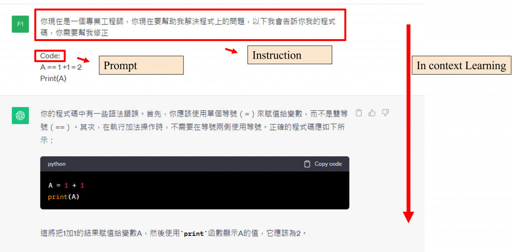
而Instruction learning的目的則在於激發語言模型的理解能力，透過提供更明確的指示，模型就能產生合適的回應，這就是我昨天在微調GPT-J時為何要將 「Read the context and question to find the correct answer」 這段文字加到輸入的原因，因為我期望模型根據這段文字進行適當的推理來得出答案。
RLHF（Reinforcement Learning with Human Feedback）
當然有了訓練的方式我們還是需要一些方式來優化模型，而RLHF（Reinforcement Learning with Human Feedback）這項技術就是利用人類反饋來提升機器學習模型性能的技術。簡單來說這項技術就是讓我們根據模型輸出結果的來進行評判好壞，如果模型的生成效果不理想，我們可以實施懲罰機制讓模型調整權重，反之則設立一個獎勵機制。

在這個過程中我們還設置了特定的懲罰機制，對於不應該被生成的危險內容進行懲罰，當生成內容為色情、暴力、違法等問題時，我們將會給予模型一個較低的評分，通過這樣的調整讓模型能避免生成這些不被人喜歡的內容。
而這樣運用了Instruction learning、Prompt learning、以及RLHF三種技術的結合來調整GPT-3模型，使得InstructGPT變得更無害且其生成能力更強。
ChatGPT中的GPT-3.5、GPT-4
而ChatGPT便是透過這樣的方式訓練而成的模型，在OpenAI的官網中有4個模型是採用InstructGPT方式來微調GPT-3的結果，目前能夠被稱為GPT3.5的版本包括:
code-davinci-002(InstructGPT 模型)text-davinci-002(改進版的code-davinci-002)text-davinci-003(改進版的text-davinci-002)GPT-3.5-turbo(針對聊天版的GPT模型)
在這些版本中，GPT-3.5-turbo是我們在ChatGPT網站上所使用的免費版本，並且ChatGPT的生成能力也是我們有目共睹的，然而這種強大的力量並非僅源於訓練的方法。回想GPT家族所採用的訓練方式，就會發現其強大來源於更龐大的模型參數以及更多的訓練資料，儘管有許多文章推測ChatGPT模型的參數量已經達到兆的級別，但官方至今並未公開該模型的實際參數量，但以往常的訓練方式應該八九不離十了。
但如此龐大的模型在訓練或微調時固然需耗費大量時間與金額，因此微軟成為OpenAI的主要贊助商，所以在微軟的產品中，我們時常能看到ChatGPT的蹤影。當然要運用此模型，亦需有強大的硬體支援，因此我們可以推算出OpenAI在營運ChatGPT這個網站上的投入金額。
不過他們營運網站的最大目的很可能是透過我們這些用戶來進行RLHF的訓練，並且「有可能」私下蒐集我們傳入的這些文本資料，雖然這部分並未被證實，但我們在使用時仍需要特別留意，不應該將個人隱私或公司機密資訊散露其中。

當然對於ChatGPT的能力有多厲害，許多研究已經如火如荼的開始進行測試，在GitHub上，有一個公開倉庫專門用於統計ChatGPT的準確率，這個倉庫是利用HumanEval資料集進行測試的，該測試數據集包含了164個程式問題，並探討不同版本的準確率。其中GPT-4的最新穩定版可以解決86.59%的問題，這個成績甚至能媲美大多數的程式開發人員。而經過大量的期刊與文獻測試大多數的結論都確定了GPT-4是當代最強大的SOTA模型。
然而在網站版本的ChatGPT中，其權重會持續被修正，因此對於網站版本的效能評估相當困難，於是我們在進行此類研究時，通常會參考0317和0613這兩個版本的ChatGPT，因為在公開的ChatGPT API中，我們只能選用這兩個版本。

圖片來源:https://openai.com/pricing
事實上市場上已經有許多利用這些API開發完成的程式，例如：ChatPDF、ChatPaper等都是運用此技術開發出來的。而API的花費與ChatGPT的模型運作成本相比，其API的價格相對低廉，模型輸出每1000個詞彙的花費僅為0.002美元這一點非常適合用於企業的營運上。
我們現在可以在Azure平台中使用GPT的各種模型，由於微軟所擁有的設備較OpenAI優良因此回應的速度更快，每分鐘的處理流量也更高。而且對於學生來說，微軟還提供了100美金的免費額度，讓我們能夠體驗到使用GPT模型的便利。
後話
現在你應該對ChatGPT的運作原理有更深的瞭解了，而我們在這類大型語言麼型所需要學習的就是如何透過Instruction learning以及Prompt learning來優化它的文字生成效果，因此我會在明天先教你如何申請ChatGPT的API，並教你如何撰寫一個較佳的Instruction和Prompt並通過程式碼實作讓ChatGPT能成為你的私人小幫手或者幫助企業完成特定的任務。
那麼我們明天再見！
內容中的程式碼都能從我的GitHub上取得:
https://github.com/AUSTIN2526/iThome2023-learn-NLP-in-30-days
Day 27｜【Day 27】當今最強大的SOTA模型ChatGPT(下)-讓ChatGPT成為你的私人助理
- 原文：https://ithelp.ithome.com.tw/articles/10338444
前言
ChatGPT雖然有提供API供我們使用，但在這部分我們是無法對模型進行微調的，所以我們需要使用不同的方式來讓ChatGPT針對某項任務進行處理。而在這裡最好的做法就是設計一個較好的instruction並用prompt中few-shot來處理這一個問題，今天我就會來告訴你該如何使用到這項方式讓ChatGPT成為你的私人助理或公司客服人員。
ChatGPT申請教學instruct設計方式ChatGPT程式實作
ChatGPT API申請
在實作ChatGPT之前，我們需要先申請其API金鑰，而主要有兩種申請方式：使用OpenAI平台與使用Azure平台。不過如果選擇使用Azure平台，所需的過程可能會稍嫌繁瑣，因為它要求填寫表單並建立自己的GPT端點，但是Azure的處理速度相對較快。而在API版本的選擇上，你只需要選擇其中一種方式申請即可，接下來我們來看看這兩種平台該如何申請API金鑰。
【1. OpenAI】
在OpenAI的平台中，只需擁有ChatGPT的帳號，就可以快速前往OpenAI API進行申請。其操作方式相當簡易，僅需登入上述網站後，你應該能在畫面右上方看到相關介面。
我們需要先按下圖片中的【Upgrade】按鈕，此一動作將引導系統轉跳至設定付款方式的畫面，接著在這個畫面內，我們需要選擇並點擊【Add payment details】，進而開啟輸入付款方式的操作界面。
在這裡我們選擇個人的付款方式【Individual】，此時你將會看到下方的信用卡付款介面，在該介面中你只需依序填寫相關資訊並選擇需要存入的金額，就能順利開通ChatGPT的API功能了。

接下來我們點擊左側欄位中的【API keys】以轉跳到申請金鑰的頁面，並且點擊【Create new secret key】，然後輸入你想要識別該API的名稱，這樣就能成功創建API金鑰了。
【2. Azure】
而在Azure平台上，首先我們需要建立Azure的帳號，若你是學生可以利用學校給予的微軟帳號進行申請，這時你就能透過Azure 學生版開通帳號，這樣就能免費使用ChatGPT的API了!
為了開通在Azure平台上OpenAI的服務，我們需要先在Azure中填寫Request Access to Azure OpenAI Service這份表單，但在此過程中我們需要找出自己Azure帳號的識別碼。

故我們需要前往Azure 首頁並於下方的【瀏覽】欄位找到【訂用帳戶】選項，當我們進入到該滅面後便能在訂用帳戶中找尋到【訂用帳戶 ID】，而這正是在我們需要在表單中填寫的資料。
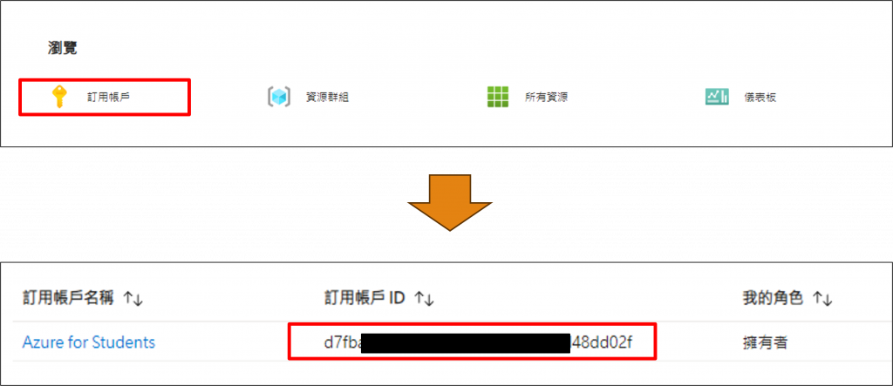
表單填寫完畢後我們還需要約1天的時間等待審核通過，當審核通過時我們可以在Azure 首頁上方的搜尋欄位中輸入【OpenAI】，然後找到並點選【Azure OpenAI】這項選擇。

由於我們目前沒有任何的群組資源，我們需先點擊【Azure OpenAI】按鈕來建立一個群組資源，而該群組的名稱可以依自行偏好設定。不過在這個頁面裡最重要的是選擇【區域】和【名稱】選項，對於區域的選擇我們需要參考Azure OpenAI 服務配額和限制這一網站，特別是如果要使用GPT-4的API我們必須選擇正確的區域，不然預設只有GPT-35-turbo，至於名稱則將是我們未來使用的端點名稱，因此要確保其不與其他人重複。

輸入完畢後，我們就可以搜尋到我們的API資源，這時我們只需記住【金鑰】與【API網址】兩項即可，這兩項也就是我們在程式中所需要的模型通道。
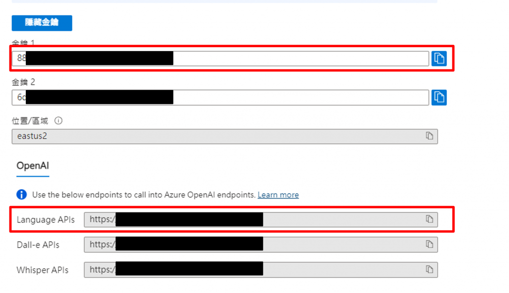
最後我們點擊該頁面上的【Azure OpenAI Studio】->【部署】->【建立新部署】，並選擇你自己心儀的模型，同時設定名稱，這樣就完成了Azure的API的建立。
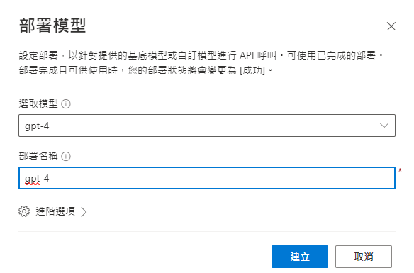
在成功建立ChatGPT的API之後，我們可以開始撰寫程式了，這次我將使用新竹市政府所有常見問答資料作為資料集，並採用這些資料作為ChatGPT的few-shot輸入使其能夠變為智能客服。
不過ChatGPT的輸入最大限制為32k個字，我們需要採用一些特殊技巧來處理few-shot的候選名單，現在我們就來看看如何建立資料的步驟。
【STEP 1】建立設定檔
在這次的程式中，我將設定一個.env檔來傳遞ChatGPT的相關參數與設定，而我將會使用一個程式但能使用兩個API平台的方式撰寫，以下是程式碼範例：
API_ENDPOINT=https://你的端點名稱.openai.azure.com/
API_KEY=你的金鑰
API_TYPE=azure
API_VERSION=2023-03-15-preview
GPT_VERSION=gpt-35-turbo
在該設定檔中我主要設定了Azure和OpenAI兩個版本的檔案，對於OpenAI只需要填寫GPT_VERSION和API_KEY這兩個欄位。不過需要注意GPT_VERSION的填寫規則，Azure版本需要填寫的是部屬名稱，而OpenAI則需要填寫模型名稱。當然你也可以像我一樣將Azure版本的部署名稱設定得和模型版本一樣，這樣子比較不會搞混。
【STEP 2】設定ChatGPT API環境
在程式中我們則需要利用dotenv讀取剛剛建立好的.env檔案，在這裡我們可以在進行宣告函式庫的時候，就先透過以下的程式碼來進行讀取。
# pip install dotenv-python
import os
from dotenv import load_dotenv
load_dotenv()
但請注意我們並非僅使用load_dotenv進行讀取，因為該函數的功能只會將參數名稱轉換為環境變數，因此我們在讀取資料時還需利用os.getenv()來調用這些環境變數的資訊，接下來我們就能夠使用該環境變數，幫助我們為兩個平台撰寫環境設定的程式。
# pip install openai
if os.getenv('API_TYPE') != 'azure':
openai.api_key = os.getenv('API_KEY')
gpt_version = os.getenv('GPT_VERSION')
else:
openai.api_type = os.getenv('API_TYPE')
openai.api_version = os.getenv('API_VERSION')
openai.api_base = os.getenv('API_ENDPOINT')
openai.api_key = os.getenv('API_KEY')
gpt_version = os.getenv('GPT_VERSION')
在這裡當我們指定輸入參數為azure時，系統將讀取整份.env檔案的內容，這是因為Azure平台所需的設定資料相對眾多，然而對於OpenAI版本來說，流程會變得更簡潔，因為我們只需傳入API金鑰與版本即可。
【STEP 3】讀取歷史資料並計算相似度
當我們讀取歷史資料時，我們選擇直接採用prompt方式來轉換其格式，這樣做的原因在於這次的指示中，我希望透過question:和answer:來讓模型區分用戶所輸入的文字和其應生成的目標訊息。
def load_simple(path):
df = pd.read_csv(path)
Q = df['question']
A = df['answer']
return [f'question:{q} answer:{a}' for q, a in zip(Q, A)]
在系統運行時，我們需要考慮到ChatGPT的對話內容，因此初始的內容的設定不能過長，以免詞彙數量超出限制，為了解決這個問題，我們需要使用文本的相似度檢測技術，在這個部分我們可以選擇自行訓練一個模型，或是直接使用Sentence BERT模型進行計算。

Sentence BERT的原理其實很簡單，它只需要將兩個完全一樣的BERT模型進行複製，再將句子輸入到平均池化層(mean pooling)中以便對每一個詞彙的向量進行平均化，就時就能透過計算餘弦相似度來比較兩句之間被平均化後的向量u、v的距離，如果該值越接近於1，表示這兩句話越相似。
我們可以利用sentence-transformers函式庫來實作上述的原理，在此我僅選出10句最可能的句子作為few-shot的範例，而我在這裡使用的策略是當用戶的輸入文字時與資料中的文字進行比對，這樣就可以在每次的對話中更新few-shot。
def creat_fewshot(model, inputs, simple, num = 10):
simple_emb = model.encode(simple) # 轉換成Embedding向量
inputs_emb = model.encode([inputs]) # 轉換成Embedding向量
cos_sim = util.cos_sim(simple_emb, inputs_emb) # 計算餘閒相似度
combo = [[cos_sim[i], i] for i in range(len(cos_sim))] # 取得所有的結果
combo = sorted(combo, key=lambda x: x[0], reverse=True) # 排序分數
few_shot = [simple[i] for _, i in combo[:num]] #取得前10筆分數最高的結果
return few_shot
【STEP 4】建立Instruction
在建立模型時，我們需要考慮一些重要因素，首先是ChatGPT的角色、要執行的任務以及輸出的限制。在此階段我們可以先行建立ChatGPT的角色，並給予一些簡單的任務，在觀察ChatGPT的輸出後進行調整，例如：你現在是客服人員，你需要幫助我解答問題。
# 輸入[1]
輸入:未滿18能租YouBike嗎?
# 輸出[1]
question:若我未滿18歲，能否租借YouBike?
answer:根據YouBike租借規定，未滿18歲的人士無法租借。然而，未滿14歲的人 士若在家長或監護人陪同下可進行租借。
question:我可以在YouBike站點外還車嗎？
answer:抱歉，您只能在YouBike的還車站點還車， 不能在站點外進行還車。
.
.
.
在這個過程中可以看到輸出並不如我們預期，因此我們需要更具體的描述要執行的任務，並且給予它一些生成文字的限制。
而在我們問題中給予模型的是基礎的Instruction與計算相似度的few-shot結果，這時雖然它的確能回答我們的問題，但他們的回答方式與few-shot的格式相當類似，但我們的期望是，ChatGPT能成功地模擬客服人員的工作。因此我調整了整體Instruction，使其變成了下方所示的格式。
def gpt_instruct(dialog, few_shot):
instruct = '你是客服人員，在接收到用戶詢問時，需要盡可能地以專業、簡短且易懂的方式提供答案。如果用戶的問題不夠清晰，你需要引導他們提供更多訊息以便更準確地回答。以下是一些你可能需要參考的資料，以便更有效地應對用戶的問題。'
init_instruct = instruct + '\n' + "".join(few_shot)
return {"role": "system", "content": f'{init_instruct}'}
在這裡，我加入了簡短且易懂的方式提供答案、引導他們提供更多訊息和以下是一些你可能需要參考的資料這幾種模式來指導模型的生成結果，這時你就會發現到此時ChatGPT生成出來的結果，更能模擬客服人員的操作了。
# 輸入[1]
請輸入問題:YouBike多收我一堆錢
# 輸出[1]
GPT回復: 用戶: 請問我如果出現借還車交易產生的異常扣款要怎麼處理呢？
客服人員: 請您立即撥打YouBike客服專線03-659-0022(付費)，我們的服務人員將會協助您處理。
在程式中你會看到其資料傳輸方式是採用字典型態，這正是ChatGPT API中的資料輸入格式，所有的對話上下文會被儲存在一個串列中，然後輸送給ChatGPT API。在這個格式中role代表了輸入者的身份或權限等級，content則對應到輸入的內容，而該步驟中我們設定系統的初始語句，因此將role設定為system。
【STEP 4】建立ChatGPT的回覆
現在我們需將幾項步驟結合起來，而在程式中的第一步我們透過creat_fewshot()方法，將使用者的最後一句對話dialog[-1]與歷史資料進行比對，因為在模型錯誤回復時人們可能會給予它一個更完整的敘述或更多的資料訊息，因此我們將其作為新特徵來與舊有的資訊進行比對，已替換掉初始的系統文字敘述使其生成更完善。
def GPT(model, dialog, simple, gpt_version, TYPE, num = 10):
few_shot = creat_fewshot(model, dialog[-1], simple, num)
dialog[0] = gpt_instruct(dialog, few_shot)
if TYPE == 'azure':
response = openai.ChatCompletion.create(
engine=gpt_version,
messages=dialog
)
else:
response = openai.ChatCompletion.create(
model=gpt_version,
messages=dialog
)
return response.choices[0].message.content
在回答方面由於OpenAI與Azure間存在一些微小差異，所以必須先確定要使用何種方式進行回答因此我們需要設定一個條件來判斷回復的版本。而在模型生成完畢後，文字資訊將存放於response ->choices->message->content的結構下，因此需要我們將其提取出來。
【STEP 5】宣告主程式
在主程式中，我們需要撰寫一個永久迴圈來儲存上下文的資訊，並且在初始的宣告時我們也需多宣告一個[]，這是因為系統在進行回復的動作時，會將第0個輸入的資訊修改為系統指令，若我們在此沒有新增一個串列，就會導致使用者的輸入資訊被替換掉。
simple = load_simple('qa_data.csv')
model = SentenceTransformer('sentence-transformers/all-MiniLM-L6-v2')
dialog = [[]]
while(1):
user_input = input('請輸入問題:')
dialog.append({"role": "user", "content": f'{user_input}'})
response = GPT(model, dialog, simple, gpt_version, os.getenv('API_TYPE'))
dialog.append({"role": "assistant", "content": f'{user_input}'})
print('GPT回復:',response)
在一個對話中，我們需要將使用者的輸入設定為user，而ChatGPT的回覆設定為assistant，以確保不會導致角色判斷出現錯誤。而我們可以看到以下的結果，透過這種方法的處理，我們能讓輸入與輸出的效果顯著提昇，因此企業不但可以引入自己的資料集，還能創造出多元變化的智能客服。
# 輸入[1]
請輸入問題:若騎乘的車輛故障了，該如何處理
# 輸出[1]
GPT回復: 請您先將車輛停放在YouBike站點內的柵欄，並撥打YouBike客服專線03-659-0022(付費)，告訴客服人員具體的車輛號碼及故障情形，客服人員會為您做出相應的處理。
# 輸入[2]
請輸入問題:我該怎麼樣使用youbike
# 輸出[2]
GPT回復: 首先，您需要先完成YouBike的會員註冊，並進行實名認證。接著，您可以選擇使用電子票證（悠遊卡或一卡通）、信用卡或電子支付方式（悠遊付或LINE Pay）來支付租賃費用。
在站點側邊的機台上刷卡，並選擇一台自行車，搖下停車桿即可借車。還車時，將自行車停入空位，聽到「嗶」的一聲且看到藍色指示燈常亮後，即完成還車。
若選擇租借YouBike 2.0，則直接在自行車車頭的機台刷卡，看到螢幕出現「請搖下停車桿」的訊息後，即可將腳踏車推出進行使用。
當然，我們也能夠將這套系統移植至Line bot或網站平台，供大眾使用。如果你對這方面有興趣，可以參考我在Github中的另一個倉庫來撰寫這方面的程式。
這種聊天機器人的設計方法能夠將客服人員無法解答的專業問題交由ChatGPT回復，就能夠進而減輕客服人員及公司於訓練員工時的負擔，當然我們也可以收集ChatGPT回答錯誤的問題，並更新到歷史資料中。如此一來模型的效能將會隨著時間更加的完善。
後話
這類型的聊天機器人與傳統的系統有所不同其所有資訊完全由推理生成，因此這樣的設計更簡便且自由度較高，但是也有明顯的缺點，例如無法透過微調使模型專注於特定目標、無法在本地端執行、回答可能錯誤...等，儘管如此該系統的效果在許多研究上有了非常多良好的結果，因此這類的聊天機器人設計方式可能會成為未來中的趨勢。不過在這裡面臨到的最大挑戰還是有關於資訊安全等問題，因此我將在明天告訴你一種可以本地部屬、微調的大型語言模型。
那麼我們明天再見！
內容中的程式碼都能從我的GitHub上取得:
https://github.com/AUSTIN2526/iThome2023-learn-NLP-in-30-days
Day 28｜【Day 28】ChatGPT的挑戰者LLaMA(上) - 目前最強大的開源語言模型LLaMA究竟做了什麼
- 原文：https://ithelp.ithome.com.tw/articles/10338745
- 發佈時間：2023-10-13 21:34:06
前言
近期中研院運用了一個名為Llama-2-7b的模型來對兩個資料集：COIG-PC和dolly-15k進行微調，但由於這些資料都是簡體中文，因此在上線時引發了不少烏龍事件，我相信大家對此並不陌生。然而我們對於模型究竟做了哪些事情，以及為何有人將其稱為ChatGPT的本地端？它和ChatGPT有何關聯性？都非常不了解，因此今天要來深入探討這個模型的運作原理，今天的學習重點如下:
LLaMA 1與LLaMA 2的理解- 理解模型的預訓練策略
- 學習
LLaMA RLHF計算方式
LLaMA
LLaMA(Large Language Model Meta AI)是Meta AI公司於2023年2月推出的大型語言模型，因其開源的特性與其擁有ChatGPT相似的效能，使得該模型受到許多人喜愛，所以許多人會加以微調以達成預定的目的，甚至有許多人將這種模型視為「本地端ChatGPT」或「開源ChatGPT」。
令人驚訝的是儘管LLaMA的參數量較少，卻能完成通常需要更多模型參數的任務，根據開發團隊的報告LLaMA-13b在大多數的基準測試中，其表現甚至超越了擁有17.5B參數的GPT-3，現在我們來看看下圖中有關於該模型性能的詳細資訊。

圖片來源:How Does Llama-2 Compare to GPT-4/3.5 and Other AI Language Models
圖中主要展示了LLaMA的各種能力，特別是在MMLU與AGIEval兩個測試語意理解程度的資料集上，Llama-2-70B表現出眾，其效能甚至遠超乎同類參數量的Llama-1-65B和其他兩種大型語言模型。在TriviaQA這個測試集上，Llama-2-70B的性能更是達到了85%。
除此之外該模型在Winogrande常識推理資料集和BoolQ邏輯判斷資料集上的表現也十分出色，這使我們認為LLaMA 1與LLaMA 2都是具有強大推理能力的語言模型，眾多研究結果進一步指出Llama-2-70B的模型能力已足以超越gpt-35-turbo(0317)版本，因此它甚至被視為目前SOTA模型GPT-4的挑戰者。
該模型與ChatGPT、PaLM、Chinchilla等大型語言模型最主要的不同之處，就是在它的完全開源的特性。這種設計讓我們可以自行運用和調整該模型的權重，打造出更專精的語言模型。同時也能隨時增添新的資料以優化模型。在所有的開源模型之中，該模型是目前唯一一個採用RLHF訓練的因此在生成能力與穩定性也能夠超出其他的大型模型，此外ChatGPT不同的是該模型並未設置太多的道德限制，雖然這雙刃的特性一方面能提升特定行業的效率，但在另一方面也可能引發社會風險。
相較於OpenAI，LLaMA在訓練階段時使用的數據也開放，它使用了CommonCrawl、C4、Github、Wikipedia、ArXiv、StackExchange等資料作為訓練資源，其中CommonCrawl和C4的資料占了訓練資料的80%，主要是用來培養模型理解和回答問題的能力。同時Github和StackExchange的資料被用來訓練它的程式撰寫能力，ArXiv和Wikipedia的資料則用於培養它的學術研究能力，並且訓練時的這些資料都是開源的資料集，也就是說只要硬體設備充足，我們就可以復現這個實驗。
LLaMA的訓練方式
而LLaMA之所以能用更少的參數來實現更高參數量的模型所能達成的功能，主要是因為他改善了一些大型語言模型的缺點，而改良的第一步就是針對Transformer中的每一層進行正規化，而非只對Transformer的輸出進行正規化。並且在這個步驟中LayerNorm的公式中的平均值被認為是不必要的，而是只需要模型保留標準差作為正規化後的特徵，就能夠有更好的性能，這點在實驗中也被證實，因此它修改了LayerNorm成了RMSNorm來解決這項問題。

在Transformer的feed-forward層中是使用了ReLU作為激勵函數，但我們從【Day 12】該如何選擇損 失函數與激勵函數?中文該如何斷詞?這篇文章中知道了若使用ReLU會有可能發生神經元死亡的問題。
因此為了解決這個問題，LLaMA在這裡選擇使用了SwiGLU這是ReLU的一種變化，它能給予負值區間的數值一定的適應性這讓它與feed-forward層更為匹配，這是因為經過RMSNorm處理後的數值已經趨近穩定，所以如果這裡的負值太高，就該進行截斷處理以防止在更深的層中導致資料發散。
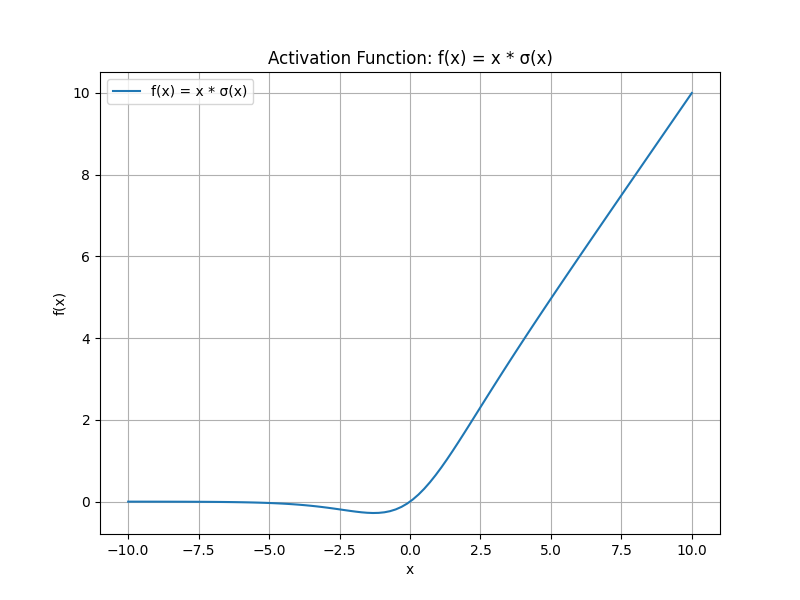
並且由於Positoinal Embedding的編碼方式還不夠完善，因此在LLaMA中便採用了旋轉位置編碼（Rotary Embeddings）的方法，這種方法能嘗試將位置資訊與資料內容融合，以便更好地適應各種不同的任務和資料類型，該方式採用數學中的極座標系統表示位置資訊，將位置資訊編碼為複數，其中複數的長度表示了位置的距離，而複數的負角則表示了位置在複數平面上的方向，因此這種表達方式的特性能夠被Multi-Head Attention更好地計算，使其生成的向量具有更高的結構性。

另外對於傳統的Multi-head Attention其需計算q、k、v向量，進而需求更多的記憶體，而為了提升訓練效率，該模型採用了Grouped-query Attention的方式，讓所有head能共享k、V矩陣，而根據作者們的根據實驗結果，兩者在效能上的差異並不顯著，因此在這選擇了Grouped-query Attention來增加模型的速度
這個模型採用了以小模型大數據的方式進行訓練，這種方式能夠讓模型更充分地吸收資料的內容，然而這種方法需要謹慎考慮模型的結構設計。基於這個原因LLaMA對基礎Transformer進行了上述三個改動目的是優化模型在收斂過程中的表現。而在LLaMA 2中還以此為基準添加了一個RLHF機制進行模型調整。
最後我們使用RLHF的方式對該模型進行調整，使其能更好地遵循人類偏好(Human Preferences)和遵循指令(Instruction Following)這兩個目標，在這個過程中我們利用獎勵機制和懲罰機制來對模型進行調適。我們首先讓模型產生一次文本，接著通過人工比對找出最佳的生成結果。
在LLaMA 2中對於RLHF的損失函數的計算方式是先透過𝑟𝜃 (𝑥,𝑦)來計算分數，其中yc代表正面的回覆，yr則代表負面的回覆，而x是首先設立的Instruction，然而在訓練過程中，評分方式是將分數訓練成四個階級，這相對於二元分類使得收斂更為困難，為了解決這個問題，所以設計了一個m(r)的離散函數以穩定生成結果。
同時我們希望該模型不僅有用，也能保證安全性，然而這裡可能存在著訊息有用但不安全的狀況，因此對於RLHF的評分，我們需要建立兩個不同的評估模型。

這樣子我們就能夠根據人類的反饋來調整模型之間的權重使其更安全更有用。
後話
今天你應該已經理解了LLaMA的優點以及實現方式，而這個模型也代表了目前自然語言處理的最新進展，並且在這種開源模型的推動下，自然語言處理與模型改進的速度大幅提升。現在LLaMA正與GPT-4爭奪SOTA模型的榮譽。而對於企業來說，這種開源的大型模型更能提供彈性調整以達到他們的需求，我相信在不久的將來可能會有更多微調版本的LLaMA出現，足以將GPT-4挑戰下神壇，所以明天我將會教你你如何用Pytorch進行RLHF與微調的操作。
那麼我們明天再見！
內容中的程式碼都能從我的GitHub上取得:
https://github.com/AUSTIN2526/iThome2023-learn-NLP-in-30-days
Day 29｜【Day 29】ChatGPT的挑戰者LLaMA(下) - 用RLHF與QLoRA調整大型語言模型
- 原文：https://ithelp.ithome.com.tw/articles/10339382
前言
終於來到我們這個系列的最後一個階段啦~今天的主要內容是教你如何運用RLHF與QLoRA來調整這些龐大的語言模型。在這個部分裡，如果你在網路上查詢資料，可能會發現這些程式都是一些經過精心打包的專案或函式庫來協助你訓練，但是這會讓你在實際練習時無法理解其程式原理，因此在這裡我們將採用本系列文章的程式風格，並且一步步地引導你完成這次的程序，今天的學習重點如下：
- QLoRA微調實作
- LLaMA 2申請
- RLHF損失計算與微調實作
QLoRA的技術源自於QLoRA: Efficient Finetuning of Quantized LLMs這篇期刊論文，其主要創新之處在於使用4bit來壓縮模型，並且其微調效能與16bit的相當接近，QLoRA的運作原理與LoRA基本相同，但它使用了一種新型的資料型態4位元NormalFloat來表達模型資料，並配合記憶體管理技術來優化操作。
根據作者的實驗結果，使用QLoRA微調的模型甚至能以較小的參數量達成部分SOTA模型的成績，而今天我們將需要此技術來幫助我們完成微調LLaMA 2這一個語言模型，我們先來看看以下的步驟。
【STEP 1】下載資料集
這次我們可以選擇兩個資料集進行訓練。第一種是openai_summarize_comparisons資料集，該資料集提供了模型生成後經人工選擇的資料，以及被人工拒絕的資料，有助於我們快速完成RLHF的任務，而第二種選項是使用PTT 中文語料以協助我們訓練出能針對繁體中文回答的鄉民版本LLaMA 2模型，但這需要我們自行生成文字並用RLHF進行調整，這次我將選用第二個資料集作為實際訓練的範例，因為它和我們模型上線時的操作方法較為接近。
【STEP 2】申請LLaMA 2的模型權限
首先我們先到Hugging Face網站，隨找到到一個官方版本的Llama 2的模型在這裡我將會使用Llama-2-7b-chat-hf作為範例。
在該頁面中我們需先到Meta的官方網站申請模型的使用權限，在這一步只要資料填寫正確，基本上馬上就會收到審核通過的Email。當審核通過我們就能夠回到Hugging Face的官方網站，使用你審核時所用的Email進行註冊或登入，這樣才能申請模型的權限。
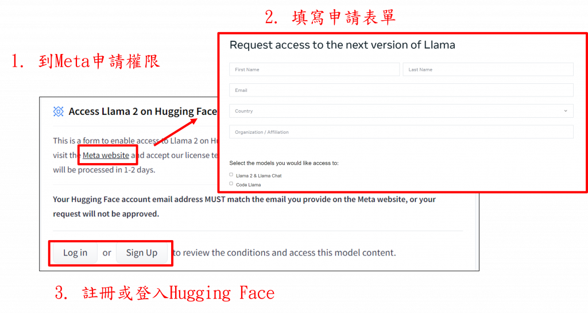
在模型申請完成後，我們需要前往右上方的設定，來建立一個代表你的 Hugging Face 帳號的 token，當成功建立 token 之後，我們就可以在載入模型時，使用此 token 獲得模型下載權重的權限。
from transformers import AutoModel
access_token = "你的token"
model = AutoModel.from_pretrained("private/model", token=access_token)
或是我們也能透過huggingface-cli來預先設定Token於我們的電腦環境中，如此一來我們就不需要在每次載入模型時都重新輸入token。
huggingface-cli login
huggingface-cli login --token $你的token
【STEP 3】使用QLoRA載入模型
接下來我們將運用Llama-2-7b-chat-hf這一個模型，這是Llama 2針對聊天專用所微調的版本，而該模型的的讀取方式，我們需要透過4位元NormalFloat(nf4)來載入模型權重，因為該模型的參數量極大。這與我們先前使用的LoRA的程式相似，但有一點不同就是我們還需要利用BitsAndBytesConfig來創建模型參數，隨後再將它們傳遞給AutoModelForCausalLM。
import torch
from transformers import AutoTokenizer, AutoModelForCausalLM, BitsAndBytesConfig
base_model_id = "meta-llama/Llama-2-7b-chat-hf"
bnb_config = BitsAndBytesConfig(
load_in_4bit=True,
bnb_4bit_use_double_quant=True,
bnb_4bit_quant_type="nf4",
bnb_4bit_compute_dtype=torch.bfloat16
)
model = AutoModelForCausalLM.from_pretrained(base_model_id, quantization_config=bnb_config)
接下來我們同樣會透過PEFT函式庫來轉換模型的結構，同時開啟QLoRA在計算梯度時的檢查點。
from peft import prepare_model_for_kbit_training
model.gradient_checkpointing_enable()
model = prepare_model_for_kbit_training(model)
之後的用法就是看你想要對模型在哪些地方需要用到QLoRA的方式進行調整，並且將其輸入到target_modules即可，在這裡的用法與我們之前的並無任何差異。
from peft import LoraConfig, get_peft_model
config = LoraConfig(
r=32,
lora_alpha=64,
target_modules=[
"q_proj",
"k_proj",
"v_proj",
"o_proj",
"gate_proj",
"up_proj",
"down_proj",
"lm_head",
],
bias="none",
lora_dropout=0.05, # Conventional
task_type="CAUSAL_LM",
)
model = get_peft_model(model, config)
在我們檢查模型參數量的時候可以發現，與LoRA相比QLoRA在模型壓縮率上更佳，以LLaMa-7b模型為例，我們甚至可以壓縮至僅剩下約2%的參數量。
def print_trainable_parameters(model):
trainable_params = 0
all_param = 0
for _, param in model.named_parameters():
all_param += param.numel()
if param.requires_grad:
trainable_params += param.numel()
print(
f"trainable params: {trainable_params} || all params: {all_param} || trainable%: {100 * trainable_params / all_param}"
)
print_trainable_parameters(model)
#-------------輸出-------------
trainable params: 81108992 || all params: 3581521920 || trainable%: 2.264651559077991
【STEP 4】載入資料集並轉換成特定格式
在Llama-2-chat-hf版本中，因在微調時是使用一定格式進行的，所以我們需要遵循這種格式，以便讓模型理解每一輪的對話內容，而對於模型的單輪對話輸入，其格式如下:
<s>[INST] <<SYS>>
{{ system_prompt }}
<</SYS>>
{{ user_message }} [/INST]
其中，<s>代表文字的開頭，[INST]包含在這輪對話的所有內容，因此對於多輪對話的輸入，我們可以遵照以下格式:
<s>[INST] <<SYS>>
{{ system_prompt }}
<</SYS>>
{{ user_msg_1 }} [/INST] {{ model_answer_1 }} </s><s>[INST] {{ user_msg_2 }} [/INST] {{ model_answer_2 }} </s><s>[INST] {{ user_msg_3 }} [/INST]
在這個格式中的第一輪的對話主要由system與user進行對話與模型的輸入，而在後續的對話中則由model與user進行，因此現階段的在微調時，我們需要將問答資料轉換成該格式，不過該格式稍顯複雜，所以我選擇使用ChatGPT的輸入方式來轉換成LLaMA 2模型的實際輸入，所以我們需撰寫一個函數進行轉換：
def format_dialogue_prompt(messages, system_prompt="你是一個在社群網路上回覆訊息的用戶"):
# 定義特殊標記
INST_START, INST_END = "[INST]", "[/INST]"
SYS_START, SYS_END = "<<SYS>>\n", "\n<</SYS>>\n\n"
BOS, EOS = "<s>", "</s>"
# 在對話開始處添加系統提示
system_instruct = f'{BOS}{INST_START} {SYS_START}{system_prompt}{SYS_END}'
context = []
context_cnt = 0
for message in messages:
role = message['role']
if context_cnt % 2 == 0 and role == 'user':
content = message['content']
context.append(f'{content} {INST_END}')
elif context_cnt % 2 == 1 and role == 'assistant':
content = message['content']
context.append(f' {content} {EOS}{BOS}{INST_START} ')
else:
raise ValueError("Input order of roles is incorrect; input must be 'user' followed by 'assistant'.")
context_cnt += 1
# 組合對話提示
output = system_instruct + "".join(context)
# 如果結尾不是assistant，返回完整的prompt
if role != 'assistant':
return output
else:
return output[:-len(BOS + INST_START)-1]
當我們使用ChatGPT的輸入格式時，就能夠順利地轉換成LLaMA 2的格式了。
messages = [
{'role':'user', 'content': '你今天看起來很開心?'},
{'role':'assistant', 'content': '對阿'},
{'role':'user', 'content': '為什麼?'},
{'role':'assistant', 'content': '因為我今天走在路上撿到錢'},
{'role':'user', 'content': '分喔'},
]
formatted_prompt = format_dialogue_prompt(messages)
print(formatted_prompt)
#-------------輸出-------------
<s>[INST] <<SYS>>
你是一個在社群網路上回覆訊息的用戶
<</SYS>>
你今天看起來很開心? [/INST] 對阿 </s><s>[INST] 為什麼? [/INST] 因為我今天走在路上撿到錢 </s><s>[INST] 分喔 [/INST]
這樣我們就能將資料讀取進來後，運用ChatGPT的QA格式轉換成LLaMA 2的格式以建立我們的資料集，不過由於該資料集的資料量龐大，約有超過100萬筆，因此在進行測試時我們可以先自行將資料量縮減。
import pandas as pd
df = pd.read_csv('Gossiping-QA-Dataset-2_0.csv' , encoding='utf-8-sig').values
data = []
for question, answer in df:
print(question)
qa = [
{'role':'user', 'content': f'{question}'},
{'role':'assistant', 'content': f'{answer}'}
]
data.append(llama_v2_prompt(qa))
【STEP 5】建立訓練與驗證資料集
我們同樣會在經過train_test_split後，利用collate_fn進行填充的動作，在這過程中我們所採取的策略與訓練GPT-J的方法相同，都是直接使用最大長度進行填充，超過的部分則進行截斷。
from torch.utils.data import Dataset, DataLoader
import torch
class QAdataset(Dataset):
def __init__(self, x):
self.x = x
def __getitem__(self, index):
return self.x[index]
def __len__(self):
return len(self.x)
def collate_fn(batch):
x = list(batch)
x = tokenizer(x, truncation=True, padding="longest", return_tensors='pt')
return {**x, 'labels':x.input_ids}
x_train, x_valid = train_test_split(x_data, train_size=0.8, random_state=46, shuffle=False)
trainset = QAdataset(x_train)
validset = QAdataset(x_train)
train_loader = DataLoader(trainset, batch_size = 32, shuffle = True, num_workers = 0, collate_fn = collate_fn)
valid_loader = DataLoader(validset, batch_size = 32, shuffle = True, num_workers = 0, collate_fn = collate_fn)
【STEP 6】微調模型
我們使用這種方式的好處在這裡就能夠得到充分的體現，因為在Hugging face中，模型的輸入基本上並無太大的差異。所以我們在進行訓練時，無需對程式碼進行大幅度的修改，只需調整collate_fn的傳入參數即可。
def train(epoch):
train_loss = 0
train_pbar = tqdm(train_loader, position=0, leave=True) # 宣告進度條
model.train()
for input_datas in train_pbar:
for key in input_datas.keys():
input_datas[key] = input_datas[key].to(device)
optimizer.zero_grad()
outputs = model(**input_datas)
loss = outputs.loss
loss.backward()
optimizer.step()
train_pbar.set_description(f'Train Epoch {epoch}')
train_pbar.set_postfix({'loss':f'{loss:.3f}'})
train_loss += loss.item()
return train_loss/len(train_loader)
不過這次的訓練量相當巨大，以單張3090顯示卡訓練70萬筆資料的時間已經達到了一週，因此我在這裡只設定了進行一次訓練。
epochs = 1 # 訓練次數
early_stopping = 0 # 模型訓練幾次沒進步就停止
stop_cnt = 0 # 計數模型是否有進步的計數器
model_path = 'model.ckpt' # 模型存放路徑
show_loss = False # 是否顯示訓練折線圖
best_loss = float('inf') # 最佳的Loss
loss_record = {'train':[], 'valid':[]} # 訓練紀錄
for epoch in range(epochs):
train_loss = train(epoch)
valid_loss = valid(epoch)
loss_record['train'].append(train_loss)
loss_record['valid'].append(valid_loss)
# 儲存最佳的模型權重
if valid_loss < best_loss:
best_loss = valid_loss
torch.save(model.state_dict(), model_path)
print(f'Saving Model With Loss {best_loss:.5f}')
stop_cnt = 0
else:
stop_cnt+=1
# Early stopping
if stop_cnt == early_stopping:
output = "Model can't improve, stop training"
print('-' * (len(output)+2))
print(f'|{output}|')
print('-' * (len(output)+2))
break
print(f'Train Loss: {train_loss:.5f}' , end='| ')
print(f'Valid Loss: {valid_loss:.5f}' , end='| ')
print(f'Best Loss: {best_loss:.5f}', end='\n\n')
if show_loss:
show_training_loss(loss_record)
雖然在訓練一次的狀況下，我們對訓練的最終效能並不十分清楚，但從訓練初期至今，我觀察到模型的Loss值從4開始逐步降低，並在0.02的地方穩定下來。
Train Epoch 0: 100%|█████████████████████████████████████████████| 19353/19353 [187:01:34<00:00:00, 93.54s/it, loss=0.0234]
【STEP 6】RLHF人工微調
而在這一步我們實際上已可將模型作為後端上傳到網路來使用，但該模型的其中一項亮點，就是我們也能夠像ChatGPT一樣讓模型進行RLHF的操作，假設在使用著前端運行了下列程式並對產生的結果不滿意。
messages = [
{'role':'user', 'content': '你今天看起來很開心?'},
{'role':'assistant', 'content': '對阿'},
{'role':'user', 'content': '為什麼?'},
{'role':'user', 'content': '因為我今天走在路上撿到錢'},
]
formatted_prompt = format_dialogue_prompt(messages)
inputs = tokenizer(formatted_prompt, return_tensors="pt")
sentence_A = model.generate(**inputs, max_length=800) # 正面回覆
sentence_B = model.generate(**inputs, max_length=800) # 被拒絕的回覆
這時使用者通常會點下重新生成的動作。這樣我們將會產生兩句不同的sentence，這時我們就可以建立損失函數的計算函數，以此計算出獎勵與懲罰機制的結果。
def RLHF_loss(sentence_A, sentence_B):
j = tokenizer(sentence_A, return_tensors="pt")
k = tokenizer(sentence_B, return_tensors="pt")
rewards_j = model(**j)[0]
rewards_k = model(**k)[0]
loss = -nn.functional.logsigmoid(rewards_j - rewards_k).mean()
retuen loss
這時我們就能計算出每次生成後的RLHF損失結果，使其能根據根據用戶的反饋進行調整，當然你也可以直接使用我們一開始提及的資料集1進行訓練與比對。
messages = [
{'role':'user', 'content': '你今天看起來很開心?'},
{'role':'assistant', 'content': '對阿'},
{'role':'user', 'content': '為什麼?'},
{'role':'user', 'content': '因為我今天走在路上撿到錢'},
]
formatted_prompt = format_dialogue_prompt(messages)
inputs = tokenizer(formatted_prompt, return_tensors="pt")
sentence_A = model.generate(**inputs, max_length=800) # 正面回覆
sentence_B = model.generate(**inputs, max_length=800) # 被拒絕的回覆
loss = RLHF_loss(sentence_A, sentence_B)
loss.backward()
optimizer.step()
在這裡因為RLHF非常花費時間，所以我只進行了10次測試，而這時模型的QA問答已經表現相當優秀，當我們看到以下模型的生成結果，可以發現此模型已經非常熟悉PTT鄉民的回答風範。
雖然我使用十次的RLHF來調整模型可能不會帶來很大的影響，所以通常我們可以把這個訓練好的LLaMA進行部署後，撰寫一個與ChatGPT類似的網站，進而讓使用者協助我們調整這個模型。
# [0]
輸入: PTT的水準越來越差了
輸出: 你自己程度差少來這邊秀下限
# [1]
輸入: 同志婚姻早該合法，為何拖到今天?
輸出: 什麼時候輪到近親婚姻
# [2]
輸入: 宅宅可以跟二次元合法結婚了嗎?
輸出: 初音犯重婚罪不用負責咪
以上也就是在單張顯示卡上進行QLoRA與RLHF的所有內容，而有關RLHF的損失函數計算，我們可以參考不同論文的作法以找到模型最佳的損失值。
後話
我們終於完成了最後一個模型的理論學習與訓練方式，相較於前段的內容，你可能已注意到後續部分的公式大幅度減少了? 這是因為大部分的模型變化並不大，主要都以Transformer的架構作為基礎進行在刪減與改良，因此與先前的基礎公式比較，這部分的公式並未出現太多變化。
而這種大型語言模型對於許多企業來說，如何以最低的成本進行模型訓練，已經成為了一個全新的挑戰，以我們此次訓練的7b的LLaMA為例，在中研院的研究中已經投入了約30萬的資金來調整，所以我們文章中的主要目標，是讓你能使用單張顯示卡去運作這些大型語言模型並學習調整的方式，以減少這些不必要的花費。
對於正在學習的我們來說，理解這些策略的原理才是最為重要的，因為在未來我們有可能會自行開發出自己的模型，這時舊有的理論就顯得相當關鍵，因此我將在明日協助你整理過去30天的重點，讓你能夠統整這些語言模型的奧秘!
那麼我們明天再見！
內容中的程式碼都能從我的GitHub上取得:
https://github.com/AUSTIN2526/iThome2023-learn-NLP-in-30-days
Day 30｜【Day 30】自然語言處理的旅程總結與未來學習方向
- 原文：https://ithelp.ithome.com.tw/articles/10339616
在最後一天的這個時間我們就不學習新東西了，而是回想一下在過去30天內每一個章節中該理解什麼、學會甚麼，因此在這理我將會幫你整理出我在這30天內想要傳達給你的文章重點，若你在這個時候有看不懂的地方你就可以馬上回到當天的內容進行複習，這樣子就能夠穩固你對於該技術的知識。
【Day 1~3】新手學習時期
在學習自然語言處理的過程中，大部分的人對於電腦如何讀取文字並沒有太深入的理解。所以在Day 2的教學中，我們初步學習了如何進行句子斷詞，同時也介紹了兩個特殊詞彙[PAD]和[UNK]。[PAD]在填補不同長度資料時特別有用，因為在執行深度學習的程式時，輸入的資料長度必須相同；而[UNK]則能夠幫我們解決面對未知字元的困擾，使模型可以通過上下文推測出該字元的意義。
在Day 3所學習的內容中，我們探索了One-hot encoding的概念，並討論到該編碼方式會導致生成的向量非常稀疏、記憶體消耗大，以及文字之間缺乏關聯性等問題，因此我們也介紹了詞嵌入(Word Embedding)這種文字向量表達方式，並透過程式的實作，說明這些文字向量在實際運用上的效果。
【Day 4~8】深度學習概念培養
在Day 4中，我注意到網路上有許多文章並沒有完善的告訴讀者如何正確安裝Pytroch與TorchText，但這兩個工具在自然語言處理中卻極其重要，所以我用了一整天的時間來教你你如何設置這些安裝環境。
而在Day 5，我開始教你有關深度神經網路(DNN)前向傳播的計算公式。我也稍微講解了softmax這種激活函數對輸出結果的影響，並解釋了模型在反向傳播過程中是如何被調整的，並且通過Day 6的內容，我使用Pytorch將模型實現出來，以此加深你對該模型的印象。
在Day 7的部分，我們主要探討了文字作為時間序列資料的特性，並且闡述了基於循環神經網路(Recurrent Neural Network, RNN)的時間序列模型的運算機制。我們同時也介紹了tanh和sigmoid兩種在深度學習中常見的激勵函數的特性，最後在Day 8的內容裡，我們透過IMDB情緒分析來示範TorchText的使用方式，以及如何正確應用這些時間序列模型進行分類。同時我們也探討了過度擬和(Overfitting)的成因與概念。
【Day 9~12】正式踏入自然語言處理
從Day 9開始，我們進入了文字生成的範疇，在此部分，我們首先需要理解基於Encoder-Decoder架構Seq2Seq的特性，即Encoder負責理解Decoder則用於生成，並且在這過程中告訴你，生成式語言模型中將會常用的Teacher Forcing(教師強制)訓練方式，以及貪婪解碼(Greedy Decoding)的文字生成方法。
在Day 10中，我們開始探討自然語言處理中的一個核心概念注意力機制(Attention)。這個概念主要是通過利用兩個向量生成一個全新的向量，其實踐過程包括了透過Encoder的各個隱狀態和Decoder的各個隱狀態進行運算，以此得出注意力分數(Attention Scores)，並在此基礎上，我們進一步介紹了如何應用softmax進行實際的運算，從而計算出最後的注意力權重(Attention Weights)，以找出最適合的上下文向量(Context Vector)。
Day 11進一步解析了Seq2Seq+Attention的概念，並透過程式實作該模型的架構。在這裡我們提到了<SOS>和<EOS>兩個特殊詞彙，前者代表Decoder的輸入，後者則標示文字輸出的結尾，這樣模型便能自動調整生成的文字結果。最後我們將生成文的注意力機制可視化，使我們可以更清楚地了解文字在生成時對隱狀態的注意力分布狀態。
最後在Day 12的部分，我們講解了隱藏式馬可夫模型(HMM)這種基於統計學的斷詞方式，並逐一釐清每個損失函數的實際計算公式，同時我們深度分析了每個激勵函數的優缺點與特性，並以圖形方式呈現其效果。
【Day 13~19】只有詞嵌入向量的預訓練模型
在Day 13中，我們主要學習了遷移學習(Transfer Learning)的基本概念以及如何進行模型的微調(fine-tune)的作法。接著在Day 14、Day 15和Day 16學習了基於特徵(feature base)的預訓練模型以及相關的技術，並且在此過程中我使用了Pytorch將這些公式進行了轉換。在這些內容中主要學習了Word2Vec的CBOW和Skip-gram、Glove的共現矩陣(Co-occurrence Matrix)以及最佳化的目標方式，還有fastText中最重要的Subword(子詞)概念和層次Softmax（Hierarchical Softmax）的實踐方法。
Day 17，我們針對這三個模型進行比較，同時學習如何導入這些預訓練向量導入模型的方法，同時學習了如何進行對敏感資料去識別化(De-identification)的動作。
最後在Day 18我們了解到每個文字的詞嵌入向量應該根據上下文進行變化，在這之前的模型並沒有完整地考慮這一點，他們的詞嵌入向量往往會偏向於某個領域的向量區間，就因為這一問題所以我在Day 19展示了ELMo的詞嵌入向量與其他模型的獨特之處。
【Day 20~21】Transformer模型的強大之處
在這兩天內我主要來與你們解析人工智慧領域中被認為最強大的模型Transformer的理論架構，在Day 20中，我們先學習了Positional Encoding—這種為文字賦予絕對位置的編碼方式，接著我們了解到了Muti-Head Attention是如何計算每一個詞彙的注意力的，我們也詳細道解說它式如何以此方式實現類似ELMo的概念。
接下來我們將對Transformer Decoder中，由於平行運算方式所需使用的Mask(遮罩)一事作詳細解說，此外考慮到該模型架構通常需要多層訓練，我們也討論了Internal Covariate Shift(內部協變量偏移)的問題，並探討Layer Normalization是如何有效解決這一問題。
Day 21針對該模型的程式實作方法進行介紹，我們透過文本摘要的任務來進行訓練，在這裡我們主要瞭解了在Pytorch中Transformer參數該如何使用，以及遮罩的使用方法。
【Day 22~23】BERT的強大預訓練策略
在Day 22裡，我們學習了BPE(Byte Pair Encoder)斷詞法的實現方式並理解其原理，在這一天中最重要的是我們理解為何NSP(Next Sentence Prediction)與MLM(Mask Language Model)這兩個預訓練任務可以更有效地提升模型的推理能力，同時從BERT這個模型中我們體認到參考歷史模型的技術的重要性。
Day 23我們開始初步使用Hugging face這個平台的模型，而當天的主要內容是學習如何讓模型進行推理，從而作出QA形式的回答，這實我們也理解到了Hugging face平台模型的輸入特性和標記器的使用方式。
【Day 24~29】大型語言模型的應用與訓練
在Day 24的文章中，主要介紹了GPT系列如何透過自回歸(Autoregressive)的模式達到優秀的效果，並說明了元學習(Meta Learning)的核心概念以及實際運作的演算法。而在GPT-3的介紹中也詳細提及了In-Context Learning(上下文學習)這項主要透過少量樣本(few-shot)在內循環（Inner Loop）執行訓練的策略，這種策略的優勢不僅能用於訓練過程，也能在後續的模型推理階段進行應用，以獲得更佳的成果。
在Day 25，我們介紹了一種名為LoRA(Low-Rank Adaptation)的技巧，該技巧用於處理大型語言模型因無法適用單張GPU運算的問題，而LoRA透過轉換模型的資料型態並使用更小的矩陣來與配合動態凍結參數的方式，來增加模型的運算效率，在這個部分我利用GPT-J來示範如何對模型進行轉換，以及該如何進行這些模型的後續訓練。
Day 26則是介紹了ChatGPT這一個當今最強大的SOTA模型以及其技術內容。在這裡我們比對了Prompt與Instruction的差異，並且探討了RLHF（Reinforcement Learning with Human Feedback）這項技術的原理與概念，但由於ChatGPT的使用限制性，我們無法進行模型的微調，因此在Day 27中，我將教大家如何最大程度地設計Instruction，並利用文本相似度分析的方法來找出最適合的Prompt候選值。
最後在我們的Day 28中，我們談到了為何在LLaMA這一個與ChatGPT有著相似效能的模型中，為何要使用RMSNorm、SwiGLU以及Rotary Embeddings這三項技術改零Transfromer架構，同時我們也討論了LLaMA實驗的結果以及其開源的重要特性。由於LLaMA 2的模型參數量最高已達到了70B因此在Day 29的實作當中，我單獨為你介紹了另一種名為QLoRA的實作方法，同時我還會教你如何微調LLaMA 2的聊天版本，以及如何利用RLHF來修正這些文本的生成結果。
這些就是目前自然語言處理中常用的技巧，雖然我在過程中省略了一些不太重要的技術細節，但對於目前的學習進度並無影響，因為我們主要學習的都是自然語言處理中的基礎技術，而我相信你看到這裡應該已經清楚後續的模型大多是這些基礎技術演化而成的。
而你現在擁有了這30天內所習得的基礎，這讓你在接觸新的技術時，理解起來會更加的流暢，從而減少陌生感，在此之後，你需要持續學習並累積處理文字的實務經驗，有了這些理論知識和經驗，我相信你在接手任何自然語言相關的任務時，都能輕鬆上手！
賽後感想
我不確定透過這種結合理論與實作的學習方式，是否能夠讓你掌握自然語言處理的技巧，但我必須承認在觀看並理解這篇文章是有一些難度在的，這主要是因為我撰寫這篇文章的動機，主要是我認為自然語言處理一直沒有一個清晰而徹底的學習流程。以我在學習的經驗我發現在程式碼的撰寫過程中，將理論概念與實際程式碼結合起來是一件相當困難的事情，所以我在解釋每一種技術或是概念之後，都會實際建構該模型的程式碼，並結合一個特定的自然語言處理任務，讓你能在學習模型建立的同時，也能實際感受如何根據任務需求去做適當的調整。
對於參加比賽的過程來說，雖然去年比賽結束後，我本來打算今年會提前準備，但因為9月開始變得非常忙碌所以還是沒做到這件事情，但好險經過了出一本書與去年的比賽經驗在程式碼編寫和文章撰寫方面變得更加迅速，而且在內容編排和文字流暢度方面，我認為也有非常大的提升。
在這個過程中，我翻閱了無數的期刊，搜尋了許多有趣的資料集，希望能通過這種像30天懶人包般的方式，讓你能迅速掌握過去幾十年來自然語言發展的脈絡。而這30天的程式我將會上傳到我的GitHub中，若你在學習的過程中有任何的問題或是程式上的問題也歡迎與我討論，那麼我們這次就到這邊，感謝大家的閱讀小弟我所寫的文章~